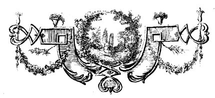
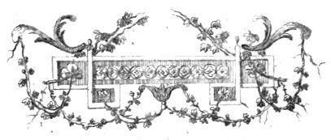
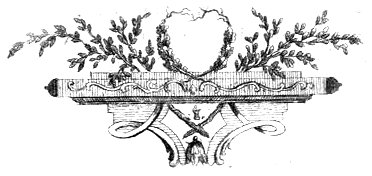
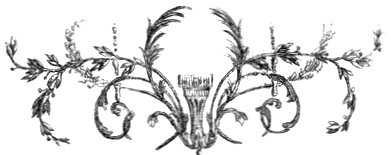

Title: Os jardins ou a arte de aformosear as paisagens: Poema
Author: Jacques Delille
Translator: Manuel Maria Barbosa du Bocage
Release date: October 22, 2022 [eBook #69209]
Language: Portuguese
Original publication: Portugal: Typographia Chalcographica, e Litteraria do Arco do Cego, 1800
Credits: Rita Farinha and the Online Distributed Proofreading Team at https://www.pgdp.net (This file was produced from images generously made available by National Library of Portugal (Biblioteca Nacional de Portugal).)
OU
A ARTE DE AFORMOSEAR AS PAIZAGENS,
POEMA
DE
Mr. DELILLE,
DA ACADEMIA FRANCEZA,
TRADUZIDO EM VERSO
DE ORDEM
DE
S. ALTEZA REAL
O PRINCIPE REGENTE,
NOSSO SENHOR,
POR
MANOEL MARIA DE BARBOSA
DU BOCAGE.
LISBOA.
NA TYPOGRAPHIA CHALCOGRAPHICA,
E LITTERARIA DO ARCO DO CEGO.
ANNO M. DCCC.
[Pg i]
————Hic inter flumina nota,
Et fontes sacros frigus captabis opacum.
Virg. Eclog. I.
Entre os rios aqui, e as sacras fontes
Gozarás em repouso a sombra amena.
[Pg ii]
Varias pessoas de grande merecimento escrevêrão em prosa á cerca dos Jardins. O Author deste Poema colheo dellas alguns preceitos, e até descripções. Em bastantes passagens teve a dita de encontrar-se com tão bons Escritores, porque este Poema foi começado antes que elles publicassem as suas obras. Confessa que dá ao prelo com extrema desconfiança huma composição muito esperada, e engrandecida de mais: a indulgencia excessiva, dos que a ouvìrão, lhe agoira a severidade, dos que a lerem.
Este Poema, além disso, tem hum grave inconveniente, o de ser didáctico. Tal genero he necessariamente hum pouco frio, e mais o deve parecer á huma Nação, que lhe custa muito (como se tem observado repetidas vezes) a tolerar versos, em não sendo os compostos para o Theatro, os que pintão as paixões, ou as baldas dos Homens. Poucas Pessoas, digo mais, até poucos Litteratos lem as Geórgicas de Virgilio, e quasi todos, os que aprendêrão Latim, sabem de cór o quarto Canto da Eneida.
No primeiro destes dois Poemas, dá o Poeta a entender que sente não lhe permittirem os limites do seu assumpto cantar os Jardins. Depois de haver lutado longamente com as miudas, e hum tanto ingratas particularidades da cultura geral dos Campos, a modo que deseja repousar sobre mais risonhos objectos. Mas estreitado no de que trata, vinga-se desta sujeição com hum bello, e rápido esboço dos Jardins, e com o pathetico[Pg iii] episódio de hum Velho feliz no seu pequeno campo, que elle mesmo cultiva, e enfeita.
O que o Poeta Romano sentia não poder executar, executou o P. Rapin. Escreveo na lingua, e ás vezes no estilo de Virgilio, hum Poema em quatro Cantos sobre os Jardins, que foi mui applaudido, n’um tempo em que ainda se lião versos Latinos modernos. A sua obra não he despida de elegancia; mas quizera-se que abundasse de precisão, e de melhores episódios.
De mais, o plano do seu Poema não interessa, não tem variedade. Hum Canto he consagrado ás agoas, outro ás arvores, outro ás flores. Adivinha-se o comprido cathalogo, e a enumeração tediosa, que mais pertence ao Botanico que ao Poeta: e aquelle passo methódico, que assás prestaria n’um tratado em prosa, he grande defeito n’uma composição Poetica, onde o Espirito pede que o levem por caminhos hum pouco desviados, e lhe apresentem objectos que não espera.
Além disto, Rapin cantou Jardins do genero regular, e a monotonia inherente á summa regularidade, passou do assumpto ao Poema. A imaginação, naturalmente amiga da liberdade, ora vai a custo pelos desenhos enviezados de hum canteiro de flores, ora morre no fim de huma longa, e direita alameda. Por toda a parte lhe lembra com saudades a formosura hum tanto desordenada, e a chistosa irregularidade da Natureza.
Emfim, aquelle Author não tratou senão a parte mecanica da Jardinagem. Totalmente esqueceo a mais importante, a que procura em nossas sensações, em nossos sentimentos a origem do prazer, que nos causão as scenas campestres, e os attractivos da Natureza aperfeiçoados pela arte. Em suma, os seus Jardins são os do Architecto; os outros são os do Filosofo, os do Pintor, os do Poeta.
Este genero tem medrado por extremo ha annos,[Pg iv] e se isto he tambem effeito da moda, demos-lhe graças. A arte dos Jardins, a que se poderia chamar luxo da Architectura, parece hum dos entretenimentos mais convenientes, e talvez hum dos mais virtuosos da Gente rica. Como cultura, reconduz á innocencia das occupações campesinas; como adorno, apadrinha sem risco a paixão dos dispendios, que acompanha as grandes Fortunas: finalmente, esta arte tem para semelhante classe de Homens o duplicado prestimo de participar, ao mesmo tempo, dos gostos que vogão nas Cidades, e dos que existem nos Campos.
Este prazer dos Particulares achou-se ligado á utilidade pública: fez com que os Opulentos folgassem de habitar as suas terras. O oiro, que sustentaria Artifices do luxo, vai alimentar os Cultivadores, e a riqueza torna á sua verdadeira fonte. Acresce a isto, que a cultura se enriqueceo com muitas, e muitas plantas, ou arvores estrangeiras, aggregadas ás producções do nosso terreno, e isto vale certamente o marmore todo que perdêrão nossos Jardins.
Feliz este Poema se desparzir, ainda mais, affeições tão simplices, e puras! Porque, como o Author deste Poema o disse em outra composição,
Quem dos Campos o amor inspira aos Homens,
Tambem, Virtudes, vosso amor lhe inspira.
[Pg v]
[Pg vi]
A Gloriosa reputação do Abbade Delille, como Litterato, e como Poeta, a estima geral, dada ao seu Poema dos Jardins, onde se encontrão todo o atavio, toda a graça, e toda a filosofia, de que he capaz o assumpto, me incitou a versificallo em vulgar, apurando nisso o cabedal que possuo em Poesia, cabedal muito inferior ao apreço, e acolheita, de que estou em divida com os meus Compatriotas. O amor á Gloria, e á Gratidão talvez ainda criem na minha alma hum ardor que a fecunde, tornando-me digno do affecto, com que me honra o Publico; e entretanto lhe apresento esta versão, a mais concisa, a mais fiel, que pude ordenal-la, e em que só usei o circumloquio nos lugares, cuja traducção litteral se não compadecia, a meu ver, com a elegancia, que deve reinar em todas as composições Poeticas.
NB. Na pag. 66 vers. 21 lêa-se Soleil, em vez de Ciel: = na pag. 67 vers. 22 Occaso, onde está Oceano: = na pag. 65 vers. 21 Cobertas d’outro Ceo: = na pag. 83 vers. 31 luzidio, em lugar de luzido: = e na pag. 119 vers. 35 diversos, em lugar de diverssas: = e na pag. 121 vers. 28 milhos, em lugar de trigos.
[Pg 2]

CHANT PREMIER.
Le doux Printemps revient, et ranime à la fois
Les oiseaux, les zéphirs, et les fleurs, et ma voix.
Pour quel sujet nouveau dois-je monter ma lyre?
Ah! lorsque d’un long deuil la terre enfin respire,
Dans les champs, dans les bois, sur les monts d’alentour,
Quand tout rit de bonheur, d’espérance, et d’amour,
Qu’un autre ouvre aux grands noms les fastes de la gloire;
Sur un char foudroyant qu’il place la victoire;
Que la coupe d’Atrée ensanglante ses mains:
Flore a souri; ma voix va chanter les Jardins.
Je dirai comment l’art, dans de frais paysages,
Dirige l’eau, les fleurs, les gazons, les ombrages.
Toi donc, qui, mariant la grace, et la vigueur,
Sais du chant didactique animer la langueur,
O Muse! si jadis, dans les vers de Lucrece,
Des austères leçons tu polis la rudesse;
Si par toi, sans flétrir le langage des Dieux,
Son rival a chanté le soc laborieux;
Viens orner un sujet plus riche, plus fertile,
Dont le charme autrefois avoit tenté Virgile.
N’empruntons point ici d’ornement étranger;
Viens, de mes propres fleurs mon front va s’ombrager;
Et, comme un rayon pur colore un beau nuage,
Des couleurs du sujet je teindrai mon langage.
L’art innocent, et doux que célébrent mes vers,
Remonte aux premiers jours de l’antique univers.
Dès que l’Homme eut soumis les champs à la culture,
D’un heureux coin de terre il soigna la parure;
Et plus près de ses yeux il rangea sous ses loix
Des arbres favoris, et des fleurs de son choix.
Du simple Alcinous le luxe encore rustique
Décoroit un verger. D’un art plus magnifique
Babylone éleva des jardins dans les airs.
Quand Rome au monde entier eut envoyé des fers,
Les vainqueurs, dans des parcs ornés par la victoire,
Alloient calmer leur foudre, et reposer leur gloire.
La sagesse autrefois habitoit les jardins,
Et d’un air plus riant instruisoit les humains:
Et quand les Dieux offroient un Elysée aux sages,
Etoit-ce des Palais? c’étoit de verds boccages;
C’étoit des prés fleuris, séjour des doux loisirs,
Où d’une longue paix ils goùtoient les plaisirs.
Ouvrons donc, il est temps, ma carriere nouvelle;
Philippe m’encourage, et mon sujet m’appelle.
Pour embellir les champs, simples dans leur attraits,
Gardez-vous d’insulter la nature à grands frais.
Ce noble emploi demande un Artiste qui pense,
Prodigue de génie, et non pas de dépense.
Moins pompeux qu’élégant, moins décoré que beau,
Un jardin, a mes yeux, est un vaste tableau.
Soyez peintre. Les champs, leurs nuances sans nombre,
Les jets de la lumiere, et les masses de l’ombre,
Les heures, les saisons variant tour-a tour
Le cercle de l’année, et le cercle du jour,
Et des prés émaillés les riches broderies,
Et des rians côteaux les vertes draperies,
Les arbres, les rochers, et les eaux, et les fleurs,
Ce sont la vos pinceaux, vos toiles, vos couleurs.
La nature est à vous; et votre main féconde
Dispose, pour créer, des élémens du monde.
Mais avant de planter, avant que du terrein
Votre bêche imprudente ait entamé le sein,
Pour donner aux jardins une forme plus pure,
Observez, connoissez, imitez la nature.
N’avez-vous pas souvent, aux lieux infrequentés,
Rencontré tout-a-coup ces aspects enchantés,
Qui suspendent vos pas, dont l’image chérie
Vous jette en une douce, et longue réverie?
Saisissez, s’il se peut, leurs traits les plus frappans,
Et des champs apprenez l’art de parer les champs.
Voyez aussi les lieux qu’un goût savant décore.
Dans ces tableaux choisis vous choisirez encore.
Dans sa pompe élégante admirez Chantilli,
De héros en héros, d’âge en âge embelli.
Belœil, tout à la fois magnifique, et champêtre,
Chanteloup, fier encor de l’exil de son Maitre,
Vous plairont tour-à tour. Tel que ce frais bouton,
Timide avant-coureur de la belle saison,
L’aimable Tivoli, d’une forme nouvelle
Fit le premier en France entrevoir le modèle.
Les Grâces en riant dessinerent Montreuil.
Maupertuis, le Desert, Rincy, Limours, Auteuil,
Que dans vos frais sentiers doucement on s’égare!
L’ombre du grand Henri chérit encore Navarre.
Semblable à son auguste, et jeune dêité,
Trianon joint la grace avec la majesté:
Pour elle il s’embellit, et s’embellit par elle.
Et toi, d’un Prince aimable, ô l’asyle fidele!
Dont le nom trop modeste est indigne de toi,
Lieu charmant! offre-lui tout ce que je lui doi,
Un fortuné loisir, une douce retraite.
Bienfaiteur de mes vers, ainsi que du Poète,
C’est lui qui dans ce choix d’Ecrivains enchanteurs,
Dans ce jardin paré de poétiques fleurs,
Daigne accueillir ma muse. Ainsi du sein de l’herbe
La violette croit auprès du lys superbe.
Compagnon inconnu de ces hommes fameux,
Ah! si ma foible voix pouvoit chanter comme eux,
Je peindrois tes jardins, le dieu qui les habite,
Les arts, et l’amitié qu’il y mène a sa suite.
Beau lieu! fais son bonheur. Et moi, si quelque jour,
Grace a lui, j’embellis un champêtre sejour,
De mon illustre appui j’y placerai l’image.
De mes premieres fleurs je veux qu’elle ait l’hommage:
Pour elle je cultive, et j’enlace en festons
Le myrthe, et le laurier, tous deux chers aux Bourbons;
Et si l’ombre, la paix, la liberté m’inspire,
A l’auteur de ces dons je dévouerai ma lyre.
J’ai dit les lieux charmans que l’art peut imiter;
Mais il est de écueils que l’art doit éviter.
L’esprit imitateur trop souvent nous abuse.
Ne prêtez point au sol des beautés qu’il refuse:
Avant tout, connoissez votre site; et du lieu
Adorez le génie, et consultez le dieu.
Ses loix impunément ne sont pas offensées.
Cependant moins hardi qu’etrange en ses pensées,
Tous les jours dans les champs un artiste sans gout
Change, mêle, déplace, et dénature tout;
Et, par l’absurde choix des beautés qu’il allie,
Revient gàter en France un site d’Italie.
Ce que votre terrein adopte avec plaisir,
Sachez le reconnoitre, osez vous en saisir.
C’est mieux que la nature, et cependant c’est elle;
C’est un tableau parfait qui n’a point de modèle.
Ainsi savoient choisir les Berghems, les Poussins.
Voyez, étudiez leurs chef-d’œuvre divins:
Et ce qu’a la campagne emprunta la peinture,
Que l’art reconnoissant le rende a la nature.
Maintenant des terreins examinons le choix,
Et quels lieux se plairont a recevoir vos loix.
Il fut un tems funeste où, tourmentant la terre,
Aux sites les plus beaux l’art dêclaroit la guerre,
Et comblant les vallons, et rasant les côteaux,
D’un sol heureux formoit d’insipides plateaux.
Par un contraire abus l’art, tyran des campagnes,
Aujourd’hui veut créer des vallons, des montagnes.
Evitez ces excès. Vos soins infructueux
Vainement combattroient un terrein montueux,
Et dans un sol égal un humble monticule
Veut etre pittoresque, et n’est que ridicule.
Desirez-vous un lieu propice a vos travaux?
Loin des champs tropunis, des monts trop inégaux,
J’aimerois ces hauteurs ou sans orgueil domine
Sur un riche vallon une belle colline.
Là, le terrein est doux sans insipidité,
Elevé sans roideur, sec sans aridité.
Vous marchez: l’horizon vous obeit. La terre
S’éleve, ou redescend, s’etend, ou se reserre.
Vos sites, vos plaisirs changent a chaque pas.
Qu’un obscur arpenteur, armé de son compas,
Au fond d’un cabinet, d’un jardin symmétrique
Confie au froid papier le plan géometrique;
Vous, venez sur les lieux. La, le crayon en main,
Dessinez ces aspects, ces côteaux, ce lointain;
Devinez les moyens, pressentez les obstacles:
C’est des difficultés que naissent les miracles.
Le sol le plus ingrat connoîtra la beauté.
Est-il nu? que des bois parent sa nudité:
Couvert? portez la hache en ces forêts profondes:
Humide? en lacs pompeux, en rivieres fécondes
Changez cette onde impure; et, par d’heureux travaux,
Corrigez a la fois l’air, la terre, et les eaux:
Aride enfin? cherchez, sondez, fouillez encore:
L’eau, lente a se trahir, peut-être est près d’éclore.
Ainsi d’un long effort moi-même rebute,
Quand j’ai d’un froid détail maudit l’aridité,
Soudain un trait heureux jaillit d’un fond stérile,
Et mon vers ranimé coule enfin plus facile.
Il est des soins plus doux, un art plus enchanteur.
C’est peu de charmer l’œil, il faut parler au cœur.
Avez-vous donc connu ces rapports invisibles
Des corps inanimés, et des êtres sensibles?
Avez-vous entendu des eaux, des prés, des bois
La muette éloquence, et la secrette voix?
Rendez-nous ces effets. Que du riant au sombre,
Du noble au gracieux, les passages sans nombre
M’interessent toujours. Simple, et grand, fort, et doux,
Unissez tous les tons pour plaire a tous les goûts.
Lá, que le peintre vienne enrichir sa palette;
Que l’inspiration y trouble le poète;
Que le sage, du calme y goûte les douceurs;
L’heureux, ses souvenirs; le malheureux, ses pleurs.
Mais l’audace est commune, et le bon sens est rare.
Au lieu d’être piquant, souvent on est bizarre,
Gardez que, mal unis, ces effets différens
Ne forment qu’un cahos de traits incohérens:
Les contradictions ne sont pas des contrastes.
D’ailleurs, a ces tableux il faut des toiles vastes.
N’allez pas resserrer dans des cadres étroits
Des rivieres, des lacs, des montagnes, des bois.
On rit de ces jardins, absurde parodie
Des traits que jette en grand la nature hardie,
Ou l’art invraisemblable a la fois, et grossier,
Enferme en un arpent un pays tout entier.
Au lieu de cet amas, de ce confus mélange,
Variez les objets, ou que leur aspect change.
Rapprochés, eloignés, entrevus, découverts,
Qu’ils offrent tour-à tour vingt spectacles divers.
Que de l’effet qui suit, l’adroite incertitude
Laisse a l’œil curieux sa douce inquietude:
Qu’enfin les ornemens avec gout soient placés,
Jamais trop imprévus, jamais trop annoncés.
Sur-tout, du mouvement: sans lui, sans sa magie,
L’esprit desoccupé retombe en lethargie;
Sans lui, sur vos champs froids mon œil glisse au hasard.
Des grands peintres encore faut-il attester l’art?
Voyez-les prodiguer de leur pinceau fertile
De mobiles objets sur la toile immobile,
L’onde qui fuit, le vent qui courbe les rameaux,
Les globes de fumée exhalés des hameaux,
Les troupeaux, les pasteurs, et leurs jeux, et leur danse,
Saisissez leur secret. Plantez en abondance
Ces souples arbrisseaux, et ces arbres mouvans
Dont la tête obêit a l’haleine des vents;
Quels qu’ils soient, respectez leur flotante verdure,
Et défendez au fer d’outrager la nature.
Voyez-la dessiner ces chênes, ces ormeaux.
Voyez comment sa main, du tronc jusqu’aux rameaux,
Des rameaux au feuillage augmentant leur souplesse,
Des ondulations leur donna la mollesse.
Mais les ciseaux cruels... Prevenez ce forfait,
Nymphes des bois, courez. Que dis-je? c’en est fait.
L’acier a retranché leur cime verdoyante,
Je n’entends plus au loin sur leur tête ondoyante,
Le rapide aquilon legerement courir,
Frémir dans leurs rameaux, s’éloigner et mourir.
Froids, monotones, morts, du fer qui les mutile
Ils semblent avoir pris la roideur immobile.
Vous donc, dans vos tableaux amis du mouvement,
A vos arbres laissez leur doux balancement.
Qu’en mobiles objets la perspective abonde:
Faites courir, bondir, et rejaillir cette onde.
Vous voyez ces vallons, ces bois, ces champs deserts;
Des différens troupeaux dans les sites divers
Envoyez, répandez les peuplades nombreuses.
Là, du sommet lointain des roches buissonneuses,
Je vois la chèvre pendre. Ici, de mille agneaux
L’écho porte les cris de côteaux en côteaux.
Dans ces prês abreuvés des eaux de la colline,
Couché sur ses genoux, le bœuf pésant rumine;
Tandis qu’impétueux, fier, inquiet, ardent,
Cet animal guerrier qu’enfanta le trident,
Déploie; en se jouant, dans un gras pâturage
Sa vigueur indomptée, et sa grace sauvage.
Que j’aime et sa souplesse, et son port animé,
Soit que dans le courant du fleuve accoutumé
En frissonnant il plonge, et luttant contre l’onde,
Batte du pied le flot qui blanchit, et qui gronde;
Soit qu’à travers les prés il s’échape par bonds;
Soit que livrant aux vents ses longs crins vagabonds,
Superbe, l’œil en feu, les narines fumantes,
Beau d’orgueil, et d’amour, il vole a ses amantes!
Quand je ne le vois plus, mon œil le suit encor.
Ainsi de la nature épuisant le tresor,
Le terrein, les aspects, les eaux, et les ombrages
Donnent le mouvement, la vie aux paysages.
Mais si du mouvement notre œil est enchanté,
Il ne chérit pas moins un air de liberté.
Laissez donc des jardins la limite indécise,
Et que votre art l’efface, ou du moins la déguise.
Où l’œil n’espere plus, le charme disparoit.
Aux bornes d’un beau lieu nous touchons à regret:
Bientôt il nous ennuie, et même nous irrite.
Au-dela de ces murs, importune limite,
On imagine encor de plus aimables lieux,
Et l’esprit inquiet désenchante les yeux.
Quand toujours guerroyant vos gothiques ancetres
Transformoient en champ-clos leurs asyles champetres
Chacun dans son donjon, de murs environné,
Pour vivre surement, vivoit emprisonné.
Mais que fait aujourd’hui cette ennuyeuse enceinte
Que conserve l’orgueil, et qu’inventa la crainte?
A ces murs qui génoient, attristoient les regards,
Le goût préfereroit ces verdoyans remparts,
Ces murs tissus d’épine, où votre main tremblante
Cueille et la rose inculte, et la mûre sanglante.
Mais les jardins bornés m’importunent encor.
Loin de ce cercle étroit prenons enfin l’essor
Vers un genre plus vaste, et des formes plus belles,
Dont seul Ermenonville offre encor des modèles.
Les jardins appeloient les champs dans leur séjour,
Les jardins dans les champs vont entrer a leur tour.
Du haut de ces côteaux, de ces monts d’où la vue
D’un vaste paysage embrasse l’ètendu,
La Nature au Génie a dit: »Ecoute moi.
Tu vois tous ces trésors; ces trésors sont a toi.
Dans leur pompe sauvage et leur brute richesse,
Mes tableaux imparfaits implorent ton adresse«
Elle dit. Il s’elance, il va de toux côtés
Fouiller dans cette masse où dorment cent beautes,
Des vallons aux côteaux, des bois a la prairie,
Il retouche en passant le tableau qui varie.
Il sait au gre des yeux, reunir, détacher,
Eclairer, rembrunir, decouvrir, ou cacher.
Il ne compose pas; il corrige, il epure,
Il acheve les traits qu’ébaucha la Nature.
Le front des noirs rochers a perdu sa terreur;
La forêt egayée adoucit son horreur:
Un ruisseau s’egaroit: il dirige sa course;
Il s’empare d’un lac, s’enrichit d’une source.
Il veut; et des sentiers courent de toutes parts
Chercher, saisir, lier tous ces membres epars,
Qui, surpris, enchantés du nœud qui les rassemble,
Forment de cent details un magnifique ensemble.
Ces grands travaux peut-etre epouvantent votre art.
Rentrez dans nos vieux parcs, et voyez d’un regard
Ces riens dispendieux, ces recherches frivoles,
Ces treillages sculptes, ces bassins, ces rigoles.
Avec bien moins de frais qu’un art minutieux
N’orna ce seul reduit qui plait un jour aux yeux,
Vous allez embellir un paysage immense.
Tombez devant cet art, fausse magnificence,
Et qu’un jour transformée en un nouvel Eden,
La France a nos regards offre un vaste jardin!
Que si vous n’osez pas tenter cette carriere,
Du moins, de vos enclos franchissant la barriere,
Par de riches aspects agrandissez les lieux.
D’un vallon, d’un côteau, d’un lointain gracieux,
Ajoutez a vos parcs l’etrangère etendue;
Possedez par les yeux, jouissez par la vue.
Sur tout sachez saisir, enchainer a vos plants
Ces accidens heureux qui distinguent les champs.
Ici, c’est un hameau que des bois environnent:
Lá, de leurs longues tours les Cités se couronnent;
Et l’ardoise azurée, au loin frappant les yeux,
Court en sommet aigu se perdre dans les cieux.
Oublierai-je ce fleuve, et son cours, et ses rives?
Votre œil de loin poursuit les voiles fugitives.
Des isles quelquefois s’elevent de son sein;
Quelquefois il s’enfuit sous l’arc d’un pont lointain.
Et si la vaste mer à vos yeux se presente,
Montrez, mais variez cette scene imposante.
Ici, qu’on l’entrevoie a travers des rameaux,
Lá, dans l’enfoncement de ces profonds berceaux,
Comme au bout d’un long tube une voûte la montre.
Au détour d’un bosquet ici l’œil la rencontre,
La perd encore; enfin la vue en liberté
Tout-à-coup la découvre en son immensité.
Sur ces aspects divers fixez l’œil qui s’égare;
Mais, il faut l’avouer, c’est d’une main avare
Que les hommes, les arts, la nature, et le temps
Sèment autour de nous de riches accidens.
O plaines de la Grèce! o champs de l’Ausonie!
Lieux toujours inspirans, toujours chers au génie;
Que de fois arrêté dans un bel horizon,
Le peintre voit, s’enflamme, et saisit son crayon,
Dessine ces lointains, et ces mers, et ces isles,
Ces ports, ces monts brûlans, et devenus fertiles,
Des laves de ces monts encor tout menaçans,
Sur des palais détruits d’autres palais naissans,
Et, dans ce long tourment de la terre, et de l’onde,
Un nouveau monde éclos des debris du vieux monde
Hélas! jé n’ai point vu ce séjour enchanté,
Ces beaux lieux où Virgile a tant de fois chanté;
Mais, j’en jure et Virgile, et ses accords sublimes,
J’irai; de l’Apennin je franchirai les cimes;
J’irai, plein de son nom, plein de ses vers sacrés,
Les lire aux mêmes lieux qui les ont inspirés.
Vous, épris des beautés qu’étalent ces rivages,
Au lieu de ces aspects, de ces grands paysages,
N’avez-vous au-dehors que d’insipides champs?
Qu’au-dedans, des objets mieux choisis, plus touchans
Dédommagent vos yeux d’une vue étrangère:
Dans votre propre enceinte apprenez a vous plaire;
Symbole henreux du sage, independant d’autrui,
Qui rentre dans son ame, et se plait avec lui.
Je m’enfonce avec vous dans ce secret asyle.
Toutefois aux lieux même où le sol plus fertile
En aspects variés est le plus abondant,
Des trésors de la vue èconome prudent,
Faites-les acheter d’une course legere.
Que votre art les promette, et que l’œil les espère.
Promettre, c’est donner; esperer, c’est jouir.
Il faut m’intéresser, et non pas m’eblouir.
Dans mes leçons encor je voudrois vous apprendre
L’art d’avertir les yeux, et l’art de les surprendre.
Mais avant de dicter des préceptes nouveaux,
Deux genres, dès-long-tems ambitieux rivaux,
Se disputent nos vœux. L’un a nos yeux présente
D’un dessein régulier l’ordonnance imposante,
Prête aux champs des beautés qu’ils ne connoissoient pas?
D’une pompe étrangère embellit leurs appas,
Donne aux arbres des loix, aux ondes des entraves,
Et, despote orgueilleux, brille entouré d’esclaves.
Son air est moins riant, et plus majestueux.
L’autre, de la nature amant respectueux,
L’orne, sans la farder, traite avec indulgence
Ses caprices charmans, sa noble négligence,
Sa marche irrégulière, et fait naitre avec art
Les beautés, du desordre, et même du hasard.
Chacun d’eux a ses droits; n’excluons l’un ni l’autre:
Je ne décide point entre Kent, et le Nôtre.
Ainsi que leurs beautés, tous les deux ont leurs loix.
L’un est fait pour briller chez les Grands, et les Rois;
Les Rois sont condamnés a la magnificence.
On attend autour d’eux l’effort de la puissance;
On y veut admirer, enyvrer ses regards
Des prodiges du luxe, et du faste des arts.
L’art peut donc subjuguer la nature rébelle;
Mais c’est toujours en grand qu’il doit triompher d’elle.
Son éclat fait ses droits; c’est un usurpateur
Qui doit obtenir grace a force de grandeur.
Loin donc ces froids jardins, colifichet champêtre,
Insipides réduits, dont l’insipide maitre
Vous vante, en s’admirant, ses arbres bien peignés,
Ses petits sallons verds bien tondus, bien soignés;
Son plant bien symmétrique, ou, jamais solitaire,
Chaque allée a sa sœur, chaque berceau son frere;
Ses sentiers ennyés d’obéir au cordeau,
Son parterre bordé, son maigre filet d’eau,
Ses buis tournés en globes, en pyramide, en vase,
Et ses petits bergers bien guindés sur leur base.
Laissez-le s’applaudir de son luxe mesquin;
Je préfere un champ brut a son triste jardin.
Loin de ces vains apprêts, de ces petits prodiges,
Venez, suivez mon vol au pays des prestiges,
A ce pompeux Versaille, a ce riant Marly,
Que Louis, la nature, et l’art ont embelli.
C’est là que tout est grand, que l’art n’est point timide;
Là tout est enchanté. C’est le palais d’Armide;
C’est le jardin d’Alcine, ou plutôt d’un héros
Noble dans sa retraite, et grand dans son repos,
Qui cherche encor a vaincre, a dompter des obstacles,
Et ne marche jamais qu’entouré de miracles.
Voyez-vous et les eaux, et la terre, et les bois,
Subjugués a leur tour, obéir a ses loix;
A ces douze palais d’elegante structure
Ces arbres marier leur verte architecture;
Ces bronzes respirer; ces fleuves suspendus,
En gros bouillons d’ecume a grand bruit descendus,
Tomber, se prolonger dans des canaux superbes;
Lá, s’epancher en nappe; ici, monter en gerbes;
Et, dans l’air s’enflammant aux feux d’un soleil pur,
Pleuvoir en gouttes d’or, d’emeraude, et d’azur?
Si j’egare mes pas dans ces bocages sombres,
Des Faunes, des Sylvains en out peuplé les ombres,
Et Diane, et Venus enchantent ce beau lieu.
Tout bosquet est un temple, et tout marbre est un dieu;
Et Louis, respirant du fracas des conquêtes,
Semble avoir invité tout l’Olympe a ses fêtes.
C’est dans ces grands effets que l’art doit se montrer.
Mais l’esprit aisement se lasse d’admirer.
J’applaudis l’Orateur dont les nobles pensées
Roulent pompeusement, avec soin cadencées:
Mais ce plaisir est court. Je quitte l’Orateur
Pour chercher un ami qui me parle du cœur.
Du marbre, de l’airain, que le luxe prodigue,
Des ornemens de l’art l’œil bientôt se fatigue;
Mais les bois, mais les eaux, mais les ombrages frais,
Tout ce luxe innocent ne fatigue jamais.
Aimez donc des jardins la beauté naturelle.
Dieu lui-même aux mortels en traça le modèle.
Regardez dans Milton. Quand ses puissantes mains
Preparent un asyle aux premiers des humains,
Le voyez-vous tracer des routes regulieres,
Contraindre dans leur cours les ondes prisonnieres?
Le voyez vous parer d’etrangers ornemens
L’enfance de la terre, et son premier printemps?
Sans contrainte, sans art, de ses douces prémices
La Nature epuisa les plus pures délices.
Des plaines, des côteaux le mêlange charmant,
Les ondes a leur choix errantes mollement,
Des sentiers sinueux les routes indécises,
Le desordre enchanteur, les piquantes surprises,
Des aspects où les yeux hesitoient a choisir,
Varioient, suspendoient, prolongeoient leur plaisir.
Sur l’email velouté d’une fraiche verdure,
Mille arbres, de ces lieux ondoyante parure,
Charme de l’odorat, du goût, et des regards,
Elegamment groupés, negligemment epars,
Se fuyoient, s’approchoient, quelquefois a leur vue
Ouvroient dans le lointain une scéne imprevue;
Ou tombant jusqu’a terre, et recourbant leurs bras,
Venoient d’un doux obstacle embarasser leurs pas;
Ou pendoient sur leur tête en festons de verdure,
Et de fleures, en passant, semoient leur chevelure,
Dirai-je ces forêts d’arbustes, d’arbrisseaux,
Entrelaçant en voûte, en alcove, en berceaux
Leurs bras voluptueux, et leurs tiges fleuries?
C’es là que les yeux pleins de tendres reveries,
Eve a son jeune epoux abandonna sa main,
Et rougit comme l’aube aux portes du matin.
Tout les felicitoit dans toute la nature,
Le ciel par son eclat, l’onde par son murmure,
La terre, en tressaillant, ressentit leurs plaisirs;
Zéphire aux antres verds redisoit leurs soupirs;
Les arbres fremissoient, et la rose inclinée
Versoit tous ses parfums sur le lit d’hymenée.
O bonheur ineffable! ô fortunés époux!
Heureux dans ses jardins, heureux qui, comme vous,
Vivroit, loin des tourmens où l’orgueil est en proie,
Riche de fruits, de fleurs, d’innocence, et de joie!
FIN DU PRÉMIER CHANT.
[Pg 3]
CANTO PRIMEIRO.
Renasce a Primavera, influe, e anima
As Aves, os Favonios, Flores, Musas.
Que novo objecto á lyra os sons me pede?
Ah! Quando a Terra despe antigos lutos
Nos campos, nas florestas, sobre os montes,
Quando tudo se ri, tudo se inflamma
De amor, e de esperança, e de ventura,
Outro c’o a fantazia em Febo acceza,
Abra os fastos da Gloria aos grandes nomes,
N’um carro fulminante alce o Triunfo,
Manche, ensanguente as mãos na taça horrivel
Do vingativo Atrêo: sorrio-se Flora,
Vou cantar os Jardins, dizer qual arte
Em terreno loução, dispoem, regùla
As flores, a corrente, a relva, as sombras.
Tu, que o vigor, e a graça entrelaçando,
[Pg 5]Dás ao canto didáctico energia,
De Lucrecio na voz, se outr’hora, oh Musa,
As austeras lições amaciaste;
Se pôde o seu Rival (sem que nos labios
A linguagem dos Numes desluzisse)
Ao laborioso arado unir o metro;
Vem mais fertil ornar, mais rico assumpto,
Assumpto amavel, que tentou Virgilio.
Mãos não lancemos de atavio estranho;
Das minhas mesmas flores vou croar-me:
Qual pura luz, que bella nuvem doira,
A expressão tingirei na côr do objecto.
Arte innocente, que em meus versos canto,
Origem teve nos cerúleos dias,
Nas Primavéras do recente Globo.
Apenas o Homem submettêra os campos
Á cultura efficaz, pôz mil disvelos
De viçósa porção no trato, e mimo,
Alinhou para si com leis, e industria
Plantas selectas, escolhidas flores.
De Alcino o luxo, o gosto, ainda rude
Punha a curto vergel módico enfeite;
Eis com arte maior, mais sumptuosa
Jardins nos ares Babylonia ostenta.
Os Latinos Heróes, de Marte os Filhos,
Depois que Roma agrilhoava o Mundo,
Davão repouso ameno á gloria, ao raio,
Em frescos Hortos, que a Victoria ornára.
Habitava os jardins outr’hora o Sabio,
Doutrinando os Mortaes mais ledo que hoje.
Quando a Sabedoria Elysios teve,
Ereis vós, Dons do Céo, talvez Palacios?
Não: vós ereis hum prado, hum rio, hum bosque
De imperturbavel paz ditoso abrigo,
Puras delicias, que a virtude anhéla.
[Pg 7]Corra-se pois, que he tempo, o novo espaço:
Filippe, e o bello assumpto a voz me alentão.
Para aformosear simples terrenos
Não insulteis co’a pompa a Natureza;
Este emprego requer sisudo Artista,
Parco em dispendios, na invenção profuso;
Jardim, menos fastoso que elegante,
Jardim com mais belleza que atavío,
Parece aos olhos meus hum amplo quadro.
Sede Pintor: o campo, os seus matizes,
Os reflexos da luz, da sombra as massas,
As estações, e as horas, variando
O gyro do anno, o circulo diurno;
Ricos esmaltes de cheirosos prados,
Dos oiteiros o alegre, o verde forro,
Aguas, boninas, arvores, penedos:
Eis os vossos pinceis, têas, e côres.
Podeis crear: a Natureza he vossa,
E dóceis para vós os Elementos.
Mas antes de plantar, antes que encete
Instrumento imprudente o seio á Terra,
Para dar aos jardins mais linda fórma
Observai, reflecti, sabei de que arte
Se imita, se arreméda a Natureza.
Não tendes vezes mil em ermos sitios
De repente encontrado aquellas vistas,
Que as plantas, que os sentidos vos suspendem,
E que em meditações quietas, longas
Enlevão manso, e manso a fantazia?
Tudo o melhor senhoreai c’o a mente,
Dos campos aprendei a ornar os campos.
Lugares, que sutil decóra o gosto,
Olhai tambem; nos escolhidos quadros
Ainda há que escolher; por vós se admire
De Chantilli magnifica elegancia,
[Pg 8]Que de Heróes em Heróes, de Idade a Idade
[Pg 9]Ganha novo esplendor. Belœil, a hum tempo
Campestre, apparatoso, e tu que ainda
Ufano Chanteloup, te desvaneces
De teu grande Senhor com o desterro;
Todos vós alternais o bem dos olhos.
Qual purpureo botão, mimoso, e breve,
Timido precursor da Quadra bella,
O amavel Tivoli, de fórma estranha
Á França descobrio ténue modélo.
Montreuil as Graças desenhárão rindo,
Maupertuis, le Desert, com que alegria,
Auteuil, Rincy, Limours, quão docemente
Nas vossas lindas, arejadas ruas
Olhos se embebem, se extravião passos!
Do grande Henrique a veneravel Sombra
Ama ainda Navarra, e parecido
Comtigo Trianon, Deosa, que o reges,
Une a graça, o recreio á magestade,
Se adorna para ti, por ti se adorna.
Grato asylo d’hum Principe adoravel,
Tu, cujo nome de apoucada idéa
He indigno de ti; lugar vistoso,
Quanto lhe devo a teu Senhor, offrece:
Hum plácido retiro, hum ocio lédo.
Bemfeitor de meus versos, de meus dias,
Na eleição de atilados Escritores,
Em jardim, que do Pindo as rosas vestem,
Inclue a Musa minha, e brando a acolhe.
Junto ao Lyrio soberbo, e magestoso
Assim cresce a violeta humilde, e escura.
De illustres Vates não illustre socio,
Ah! se coubera em mim cantar como elles,
Pintára os teus jardins, pintára o Nume,
Que os habita, que os honra; o gosto, as artes,
[Pg 10]As virtudes, a gloria, os bens que o seguem,
[Pg 11]O ladeão em ti. Lugar formoso,
Sê tu sua ventura. Eu se algum dia
Findar, por graça delle, amena estancia,
Mais bella a tornarei co’a bella imagem
Do alto meu Protector; quero que sejão
Minhas primeiras flores seu tributo.
Para o busto real cultivo, enlaço
Em virentes festões o loiro, o myrto,
Tão caros aos Bourbons, e se o repouso,
A liberdade, as sombras me inspirarem,
Ao bemfazejo Heroe te sagro, oh lyra.
Fallei desses lugares deleitosos,
Que a arte deve imitar: convem que falle
Dos escolhos que a mesma evitar deve.
O engenho imitador tambem se engana.
Não dê belleza ao chão, que o chão não queira,
A paragem conheça antes de tudo,
Do sitio adore o Genio, o Deos consulte:
Impunemente as leis não se lhe aggravão.
Nos Campos, todavia, a cada instante,
Menos audaz que estranho em fantasias,
Tudo altera, e confunde Artista inerte,
E desnaturaliza, e perde tudo;
Com absurda eleição mil graças liga:
Encantavão na Italia, em França enjoão.
O que o terreno teu sem custo adopte
Reconhece, e depois te apossa delle.
Isto ainda he melhor que a Natureza,
Mas isto mesmo he ella, isto he perfeito
Quadro brilhante, que não tem modélo.
Dos Berghems, dos Poussins tal foi a escolha,
De ambos estuda as producções divinas,
E o muito que o pincel aos campos deve,
Arte cultivadora, agradecida,
[Pg 12]Nos jardins restitua á Natureza.
[Pg 13]Os terrenos agora se examinem,
E que lugar se apraz das leis, que traças.
Houve tempo fatal em que Arte infensa,
Guerra aos mais bellos sitios declarando,
Enchendo os valles, arrazando os montes,
Formou de chão gentil planicie ingrata.
Hoje, rural Tyranno, outro Artificio
Quer, por contrario abuso, erguer montanhas,
Valles quer profundar. Longe os excessos,
Longe as lidas, e ardis: tudo he baldado
Contra intrataveis, repugnantes serros;
E sobre terra igual montinho humilde
Cuida ser pictoresco, e move a riso.
Queres a teu suor lugar propicio?
Foge as mui desiguaes, os muito planos
Campos, e serras. Eu tomara os sitios
Onde sem altivez fosse eminente
A rico valle matizado oiteiro.
Não tendo insipidez, lá tem brandura
O solo complacente, he alto, he secco,
Estéril não, não rispido: caminhas;
Obedece o horizonte, ergue-se a Terra,
Ou a Terra se abate, aperta, estende:
Luzem de passo a passo encantos novos.
Dos Gabinetes no silencio triste,
De compasso na dextra, embora ordene,
Artifice vulgar a symmetria
D’enfadoso jardim, confie embora
O Geometrico plano ao papel frio.
Tu vai ver em si propria a Natureza.
O lapis maneando, alli copìa
Este aspecto, estes longes, esta altura,
Meios advinha, obstáculos presente:
Só a difficuldade he Mãi de assombros,
[Pg 15]E o chão de menos graça havella póde,
He nu? Florestas a nudez lhe amparem.
He coberto? Os machados vão despillo.
Humido? Em lagos de cristal pomposo,
Em ribeiras fecundas, transparentes
Se converta, se aclare essa agua impura.
Por trabalho feliz corrige a hum tempo
Melhora as aguas, o terreno, os ares:
He árido talvez? Procura, sonda,
Torna ainda a sondar, não te enfasties:
Póde ser que, em trahir-se vagarosa,
A agua de rebentar esteja a ponto.
Tal de hum tenaz esforço eu mesmo anciado,
Morna individuação maldigo, entejo,
Mas de estéril objecto aborrecido
Idéa graciosa eis surge, eis salta:
O verso resuscita, e facil corre.
Inda mais doces que estes ha cuidados,
Arte existe inda mais encantadora.
Falle-se ao coração, não basta aos olhos.
As invisiveis relações conheces
Desses corpos sem alma, e dos que sentem?
Das aguas, prados, selvas tens ouvido
A calada eloquencia, a voz occulta?
Todos estes effeitos deves dar-nos.
Do alegre ao melancolico, e do nobre
Ao engraçado, os transitos sem conto
Sempre me aprazem, me cativão sempre.
Une, simples, e grande, forte, e brando,
Todo o matiz, que a todo o gosto agrade.
O Pintor enriqueça alli a idéa,
A santa Inspiração turbe o Poeta.
Alli remansos d’alma o Sabio goze,
Memorias o ditoso alli desfrute,
De lagrimas se farte o miserando.
[Pg 16]Mas a audacia he commum, e o siso he raro.
[Pg 17]Graça ás vezes se crê a extravagancia.
Evita que os effeitos, mal unidos,
De incoherentes imagens formem cáhos;
Vê que as contradicções não são contrastes.
Estes paineis de natural pintura
Requerem longo espaço; em quadro estreito
Não vás aprisionar montanhas, bosques,
Nem lagos, nem ribeiras. He costume
Zombar desses jardins, paródia absurda
Dos rasgos que a atrevida Natureza
No seu grande espectáculo derrama;
Jardins, em que Arte rude, e inverosimil
Hum Paiz todo n’uma geira encerra.
Em vez deste montão confuso, inerte,
Varía objectos, ou lhe altera a face.
Perto, longe, patentes, quasi occultos,
Revezem todos mil diversas vistas.
Dos effeitos seguintes a incerteza
Grato desassocego aos olhos deixe,
Ornamentos o gosto emfim coloque,
Imprevistos jamais em demasia,
Jámais em demasia annunciados.
Presta sobre maneira o movimento;
Sem a doce magia, a elle annexa,
Em lethargo recae a alma ociosa.
Sem elle, por teus campos enfadonhos
Em gyro casual vão sempre os olhos.
Citarei outra vez altos Pintores?
Lá diffunde o pincel pródigo, e fertil
Móveis objectos sobre o panno immovel:
O rio foge, o vento encurva os ramos,
Globos de fumo das Aldêas sobem,
Os Gados, os Pastores brincão, danção.
Cuida em te apoderar deste segredo,
[Pg 18]Dispoem sem parcimonia arbustos dóces,
[Pg 19]Arvores brandas, cuja afavel coma
Das virações ao hálito obedece.
Sejão quaes forem, tu, Cultor, venera
A vacilante, undisona verdura,
Tolhe, que o ferro a Natureza ultraje,
Ella c’o a mestra mão como desenha
Desta parte os carvalhos, desta os olmos!
Olha como do tronco até aos ramos,
Dos ramos té ás folhas desparzido
Da Mãi universal benigno influxo;
Vai das undulações dar-lhe a molleza.
Porém golpes crueis... vedai tal crime,
Correi, Nynfas da selva... ah! Q’he de balde,
O córte cerceou-lhe a gala, o viço.
Já na cópa vivaz não oiço ao longe
Correr os Aquilões, bramir na rama,
Affastar-se, expirar. Tácitos, frios,
Mortos do ferro os vegetaveis Entes,
Delle semelhão rispideza immovel.
Ás plantas deixa, pois, tremor suave
Nos quadros teus, do movimento amigos:
Faze fugir, ferver, saltar as aguas.
Vês estes valles, solidões, florestas?
Por varios sitios de diversos gados.
A nédia multidão se envie, e alongue.
Além vejo a cabrinha roedora
Pender do cume de remotas penhas,
Aqui mil cordeirinhos melindrosos
Soltão queixumes, que de serro a serro
Vai éco em molles sons amiudando.
Nestes, que as aguas da collina sorvem,
Prados lustrosos, sobre as mãos se estende,
E ruminando jaz o Boi pesado,
Em quanto generoso, altivo, accezo,
[Pg 20]O filho do Tridente, o Marcio Bruto
[Pg 21]Ostenta, vicejando, em pingues pastos,
O indómito vigor, e o brio agreste.
Quanto me atrahe, me regozija, quanto
A audaz agilidade, o gesto activo!
Ou elle, usado ás fluviais correntes,
Sobre ellas se arremesse, estremecendo,
E luctando depois, c’os pés sacuda
As ondas, que murmurão, que branqueão;
Ou atravez dos prados salte, e fuja;
Ou, longa crina errante aos ventos dada,
Brotando os olhos fogo, as ventas fumo,
Bello de orgulho, e amor, voe ás amadas.
Sumio-se já, e a vista ainda o segue.
O thesoiro exhaurindo á Natureza,
Assim terrenos, vistas, e agua, e sombras
Dão ás paizagens movimento, e vida.
Porém se o movimento encanta os olhos,
De liberdade hum ar não menos querem.
O limite aos jardins fique indeciso;
Ou com arte se esconda, ou se disfarce.
Não ha mais que esperar? Vôa o feitiço.
Com certo dissabor o fim se tóca
De huma estancia aprazivel: cedo enfada,
E irrita finalmente; alem dos muros,
Importuna barreira, inda se ideão
Lugares mais gentis, mais attractivos,
E a alma inquieta desencanta os olhos.
Quando nossos Avós, á guerra affeitos,
Seus campos em castellos convertião,
Cada qual em munida, enorme torre
Preso vivia por viver seguro.
Mas hoje de que servem taes muralhas,
Que o temor inventou, mantem o orgulho?
A estes, que prendendo outr’hora a vista,
[Pg 22]A vista duramente entristecião,
[Pg 23]Prefere o gosto verdejantes muros,
Muros tecidos de espinhoso enredo,
Muros, por onde a mão, tremendo, colhe
A rosa inculta, a amóra ensanguentada.
Mas jardim limitado inda me ancêa.
Surja-se em fim de hum circulo tão breve
A genero mais vasto, e mais formoso,
De que hoje Ermenonville he só modélo.
Os jardins para si chamavão campos,
Vão nelles os jardins entrar agora.
Do cimo desses montes, donde os olhos
Paizagem dilatada abração, medem,
A madre Natureza ao Genio disse:
Os thesoiros, que vês, são teus: envoltos
Na rude pompa, na opulencia bruta,
Os quadros meus tua destreza implorão.
Ella diz, elle vôa: em toda a parte
Esquadrinha esta massa, onde repousão,
Onde dormindo estão bellezas cento.
Do valle á serra, da floresta ao prado
Vai retocando os quadros, que varía.
Dos olhos a sabor, une, e desune,
Illumina, escurece, occulta, ou mostra:
Não destróe, não compoem, corrige, apura,
O esboço aperfeiçoa á Natureza.
Carrancudo terror já despem rochas,
O bosque alegre adóça, encurta as sombras;
Hia perder-se hum rio: eis o encaminhão;
De hum lago se apodera a mão geitosa,
De cristalina fonte se enriquece.
Quer, e veredas mil subito correm
A demandar, cingir, prender os membros,
Por aqui, por alli soltos, dispersos,
Os membros, que assombrados, que attrahidos
[Pg 24]Da engenhosa união, do nó, que os junta,
[Pg 25]Formão de cem porções hum todo insigne.
Talvez, campestre Artifice, te espantem
Estes grandes trabalhos. Entra os nossos
Idosos parques; de huma vez contempla
Apuros vãos, dispendiosos nadas;
As estacadas vê, regos, e tanques.
Preço menor do que a minucias coube
Para ornar o que hum dia apraz somente,
Póde aformosear hum campo immenso.
Fallaz, e sem sabor magnificencia,
Cahe ante esta arte, e por milagre della
A cara Patria minha se transforme
Toda em vasto jardim, n’um Eden novo!
Se não ousas tentar esta carreira,
Ao menos, franqueando o teu circuito,
De aspectos opulentos o engrandece.
De hum valle, hum serro, huns agradaveis longes
Ajunta posse alhêa á posse tua:
Rege c’oa vista, pelos olhos gosa.
Os varios, favoraveis accidentes,
Com que innumeros campos se distinguem,
Une principalmente a teus plantios.[1]
Aqui jaz hum lugar, que cingem bosques,
Acolá torreões Cidades croão,
E a grimpa azul, ferindo ao longe os olhos,
Vai sumir pelos Ceos o agudo extremo.
Hum rio omitirei, e as margens suas?
Após fugazes vélas corre a vista.
Ilhas ás vezes sahem do vitreo seio,
Ponte arqueada outr’hora o furta aos olhos.
Se os mares espaçosos descortinas,
Offrece, mas varía a grave scena.
Mal se divise aqui por entre as folhas,
Huma abóbada além, qual no remate
[Pg 26]De tubo extenso, aos olhos o apresente
[Pg 27]Em fundo de odoriferas latadas;
Nas voltas de florente bosquezinho
Aqui se encontra o mar, alli se perde:
Eis sùbito apparece em toda a sua
Fervente, rugidora immensidade.
Folgue a attenção nestes semblantes vários;
Mas com mesquinhas mãos (cumpre que o diga)
Os Homens, Natureza, o Tempo, as Artes
Nos cercão de tão ricos accidentes.
Oh Planicies da Grecia! Ausonios Campos!
Lugares divinais, inspiradores,
Sempre caros ao genio! Ah! quantas vezes
Embebido n’um mágico horisonte,
O pintor vê, se inflamma, e toma o lapis,
E debuxa esses longes, essas ilhas,
Esse pégo, esses portos, esses montes,
Torrados de volcões, e já fecundos;
As lavas delles, que ameação, fervem,
Palacios, que em ruinas de outros surgem,
Hum novo Mundo que do velho assoma
Nestes de Terra, e Mar longos tormentos.
Ah! Eu inda não vi essa risonha,
Essa encantada estancia, onde mil vezes
Soou do Mantuano a voz divina,
Mas, pelo Vate, pelo Vate o juro,
Heide, Apenino, transcender teus cumes,
E cheio do seu nome, e de seus versos,
Lêlos naquelles amorosos sitios,
Sitios, cópia do Ceo, que os inspirárão.
De encantadoras margens namorado,
Por fóra ingratos campos tens sómente
Em vez de aspectos que interessem a alma?
De estranha vista, que atedía o gosto,
Vinguem-te objectos de mais bella escolha.
[Pg 28]Aprende a deleitar-te em teu recinto,
[Pg 29]Sê o emblema do Sabio independente,
Que entra em si mesmo, e que se apraz comsigo.
Nesse asylo fiel nos entranhemos.
Todavia em lugares onde a Terra
De aspectos variados mais abunde,
Os thezoiros da vista he bem que poupes,
E seja leve gyro o custo delles.
A arte os prometta, os olhos os esperem;
Dá quem promette, quem espera goza.
Releva, que enfeitices, não que assombres.
Entre minhas lições tambem quizera
Duas artes de effeitos encontrados:
Huma os olhos adverte, outra os saltêa.
Mas antes de dictar preceitos novos,
Dois generos, ha tempo émulos ambos,
Disputão nossos vótos. Hum presenta
De regular desenho a ordem grave,
Aos campos dá bellezas que ignoravão,
De pompa desusada os atavia,
E ás arvores poem leis, põe freio ás ondas;
Brilha entre Escravos, Déspota orgulhoso:
He mais em magestade, em riso he menos.
Da Natureza respeitoso Amante,
O outro lhe ajusta comedido enfeite,
Trata benignamente os feiticeiros
Caprichos seus, o seu desleixo nobre,
O passo irregular, e extrahe com arte
Lindezas da desordem, té do acaso.
Cada qual tem seu jus, nenhum se exclua;
Entre Kent, e le Notre eu não decido.
Ambos tem leis, tem graças: hum creou-se
Para Grandes, e Reis: oh Reis! oh Grandes,
Sois á magnificencia condemnados.
Em torno a vós o esforço, o extremo, o apuro
[Pg 30]De alto poder se espera; alli queremos
[Pg 31]Que em prodigios, o luxo, o gosto, as artes
Excitem pasmos, embriaguem vistas.
Rebelde a Natureza á Industria cede;
Mas deve grão triunfo honrar a Industria;
Ella em seu esplendor tem seus direitos,
He huma usurpadora, e lhe compete
Á força de grandeza obter desculpa.
Longe, pois, os Jardins desengenhosos,
Insulsa Estancia, de que o Dono insulso
As arvores garridas fôfo exalta.
Os pequenos salões bem decotados,
A extrema symmetria escrupulosa,
Passeios, onde nunca solitaria,
Alameda não ha, que irmãa não tenha;
Caminhos degostosos, enjoados
Da obediencia ao cordel, os seus canteiros
Bordados, e os seus tenues fios de agua;
Das arvores algumas torneadas
Em vasos, em pyramides, em globos,
E alçados bem na base os Pastorinhos.
Gabe o seu luxo pobre: eu anteponho
Hum campo bruto a seu jardim tristonho.
Distante destes minimos portentos,
Segue meu vôo á patria dos prestigios,
Vê Versailles, Marly, pomposos, lédos,
Onde Luiz, e a Natureza, e a Arte
Em tanta cópia desparzirão graças.
Que afoito resplandece alli o engenho!
Alli tudo he grandeza, he tudo encanto,
São de Alcina os jardins, de Armida os Paços,
Antes os de hum Heróe, que inda procura
Vencer, domar obstaculos, sublime
Em seu retiro, em seu repouso, e sempre
Caminha, de milagres circundado.
[Pg 32]Aquellas aguas vês, a terra, os bosques?
[Pg 33]Submettidos tambem, seu jugo adorão.
Das arvores á verde arquitectura
Olha com que elegancia estão cazados
De fórma singular Palacios doze!
Vê bronzes, que respirão, vê correntes
Que, soltas da repreza, esbravejando,
Em grossos borbotões de fofa espuma
Cahem, e se estendem por canaes soberbos;
Em lustrosa espadana além se espalhão,
Em pavêas brilhantes cá se elevão,
E nos benignos ares incendidas
De hum sol immaculado, eis chovem gotas
Côr de oiro, de safira, e de esmeralda.
Selvas, por onde absorto me extravio,
Os Sátyros, os Faunos vos povoão,
Em vós Diana influe, e Citheréa;
He cada bosquezinho em vós hum Templo,
Cada mármore hum Deos. Luiz, folgando
Do pezo marcial, do horror da Guerra,
Como que nesta, a Jove idónea Estancia,
Convida todo o Olympo a seus festejos.
Nestes grandes effeitos he que importa
Que a arte se esmere, avulte, e brilhe, e encante.
Facilmente porém o assombro péza.
Louvo o Orador que erguidos pensamentos
Na luz, na pompa, na cadencia envólve,
Mas he curto prazer, e o deixo, e corro
A escutar corações na voz de amigos;
Mármores, bronzes, que alardêa o luxo,
Arte ostentosa em breve os olhos cança.
Mas as correntes, o arvoredo, as sombras,
Este luxo innocente, ah! não fatiga,
Não fatiga jámais. Deos mesmo aos homens
Traçou este modélo. Atenta em Milton.
[Pg 34]Quando essa eterna Mão, que rege tudo,
[Pg 35]Aos primeiros Mortais guarida aprésta,
Regulares caminhos abre acaso,
Talvez cativa na carreira as ondas?
De improprias, de forçadas vestiduras
Cobre a infancia do Mundo, a Primavera
Recemnascida? Não, sem arte alguma,
E sem constrangimento, a Natureza
Estreou, exhaurio delicias puras,
Delicias puras, que nem ha na idéa.
O misto amavel de planicie, e monte,
Livres, e mollemente errando as aguas,
Veredas tortuosas, e indecisas,
Gratas desordens, novidades gratas,
Aspectos, onde os olhos mal sabião
Escolher, preferir, tudo alongava,
Entretinha o prazer na variedade.
Sobre viçoso esmalte aveludado
Mil arvores, mil plantas, mil arbustos,
Destes lugares ondeante adorno,
Iman da vista, do sabor, e olfato,
Em grupos elegantes, movediços,
Em natural, dispersa negligencia,
Já se fugião, já se avisinhavão.
Seu brando movimento ao longe ás vezes
Inopinada scena aos olhos dava;
Ou com pendor gentil curvando a rama,
Aos passos vinhão pôr suave estorvo;
Ou sobre as frontes em festões pendião,
Ou, na passagem, lhe entornavão flores.
Lindos Bosques direi de tenras plantas,
Em latadas, e abóbadas travando
Troncos florentes, e florentes braços?
Lá de imaginações, queridas, ternas,
Cheios a mente, o coração, e os olhos,
[Pg 37]Deo Eva ao bello Amante a mão mimosa,
E córou como a Aurora ás portas de oiro.
A Natureza toda os afagava,
O Céo c’o a luz, com seu murmureo as ondas;
Tremendo a Terra, lhes sentia os gostos;
Favonio aos écos os suspiros dava;
O Arvoredo rugia, e curva a Rosa,
Cedia ao tóro seus perfumes todos.
Oh ventura inefavel, Par tranquillo!
Feliz quem, como vós, nos seus amados,
Bonançosos jardins, longe dos males
Que a Soberba atormentão, vive rico
De flores, frutos, innocencia, e gosto!
FIM DO CANTO PRIMEIRO.
[1] Vem no Diccionario de Sousa, e a harmonia, e necessidade do termo animou-me a adoptallo, parecendo-me todavia que os Camponezes o usão. A palavra Paizagens, de cuja pureza duvidei, acha-se em bons Escritores nossos, sendo hum delles Rodrigues Lobo, para mim de tanta decisão como os melhores.
[Pg 38]

CHANT SECOND.
Oh! si j’avois ce luth dont le charme autrefois
Entrainoit sur l’Hémus les rochers, et les bois,
Je le ferois parler; et sur les paysages
Les arbres tout-à coup déploiroient leurs ombrages.
Le chêne, le tilleul, le cèdre, et l’oranger
En cadence viendroient dans mes champs se ranger.
Mais l’antique harmonie a perdu ses merveilles;
La lyre est sans pouvoir, les rochers sans oreilles;
L’arbre reste immobile aux sons les plus flateurs,
Et l’art, et le travail sont les seuls enchanteurs.
Apprenez donc de l’art quel soin, et quelle adresse
Donne aux arbres divers la grace, ou la richesse.
Par ses fruits, par ses fleurs, par son beau vetement,
L’arbre est de nos jardins le plus bel ornement.
Pour mieux plaire a nos yeux combien il prend de formes!
La s’étendent ses bras pompeusement informes;
Sa tige ailleurs s’elance avec legereté,
Ici, j’aime sa graçe, e la, sa majesté.
Il tremble au moindre soufile, ou contre la tempête
Roidit son tronc noueux, et sa robuste tête.
Rude, ou poli, baissant, ou dressant ses rameaux,
Veritable proteé entre les vegetaux,
Il change incessament, pour orner la nature,
Sa taille, sa couleur, ses fruits, et sa verdure.
Ces effets variés sont les trésors de l’art,
Que le goût lui defend d’employer au hasard.
Des divers plants encor la forme, et l’étendue
Sous des aspects divers se presente a la vue.
Tantôt un bois profond, sauvage, tenebreux,
Epanche une ombre immense, et tantot moins nombreux
Un plant d’arbres choisis forme un riant bocage,
Plus-loin, distribués dans un frais paysage,
Des groupes elegans fixent l’œil enchanté:
Ailleurs se confiant a sa prope beauté,
Un arbre seul se montre, et seul orne la terre.
Tels, si la paix des champs peut rappeler la guerre,
Une nombreuse armée étale a nos regards
Des bataillons épais, des pelottons epars;
Et la, fier de sa force, et de sa renomée,
Un heros seul avance, et vaut seul une armée.
Tous ces plants differens suivent diverses loix.
Dans les jardins de l’art, notre luxe autrefois
Des arbres isolés dedaignoit la parure:
Ils plaisent aujourd’hui dans ceux de la nature.
Par un caprice heureux, par de savans hasards,
Leurs plants desordonnés charmeront nos regards.
Qu’ils different d’aspect, do forme, de distance;
Que toujours la grandeur, ou du moins l’elegance,
Distingue chaque tige, ou que l’arbre honteux
Se cache dans la foule, et disparoisse aux yeux.
Mais lorsqu’un chêne antique, ou lorsqu’un vieil érable,
Patriarche des bois, leve un front vénérable,
Que toute sa tribu, se rangeant à l’entour,
S’écarte avec respect, et compose sa cour;
Ainsi, l’arbre isolé plait aux champs qu’il décore.
Avec bien plus de choix, et plus de goût encore,
Les grouppes formeront mille tableaux heureux.
D’arbres plus ou moins forts, et plus ou moins nombreux
Formez leur masse épaisse, ou leurs touffes legères:
De loin l’œil aime à voir tout ce peuple de frères.
C’est par eux que l’on peut varier ses dessins,
Rapprocher, et tantôt repousser les lointains,
Réunir, séparer, et sur les paysages
Etendre, ou replier le rideau des ombrages.
Vos grouppes sont formés: il est temps que ma voix
A connoitre un peu d’art accoutume les bois.
Bois augustes, salut! Vos voûtes poétiques
N’entendent plus le Barde, et ses affreux cantiques;
Mais un plus doux délire habite vos déserts,
Et vos antres encor nous instruisent en vers,
Vous inspirez les miens, ombres majestueuses!
Souffrez donc qu’aujourd’hui mes mains respectueuses
Viennent vous embellir, mais sans vous profaner;
C’est de vous que je veux apprendre à vous orner.
Les bois peuvent s’offrir sous des aspects sans nombre.
Ici, des troncs pressés rembruniront leur ombre:
Lá, de quelques rayons égayant ce séjour,
Formez un doux combat de la nuit, et du jour.
Plus loin, marquant le sol de leurs feuilles légères,
Quelques arbres épars joueront dans les clairières,
Et flottant l’un vers l’autre, et n’osant se toucher,
Paroitront á la fois se fuir, et se chercher.
Ainsi le bois par vous perd sa rudesse austère:
Mais n’en détruisez pas le grave caractère.
De détails trop fréquens d’objets minutieux
N’allez paz découper son ensemble á nos yeux.
Qu’il soit un, simple, et grand, et que votre art lui laisse
Avec toute sa pompe, un peu de sa rudesse.
Montrez ces troncs brisés; je veux des noirs torrens
Dans le creux des ravins suivre les flots errans.
Du temps, des eaux, de l’air n’effacez point la trace,
De ces rochers pendans respectez la menace,
Et qu’enfin dans ces lieux, empreints de majesté,
Tout respire une mâle, et sauvage beauté.
Telle on aime d’un bois la rustique noblesse.
Le bocage moins fier, avec plus de molesse
Déploie á nos regards des tableaux plus rians,
Veut un site agréable, et des contours lians,
Fuit, revient, et s’égare en routes sinueuses,
Promène entre des fleurs des eaux voluptueuses;
Et j’y crois voir encore, ivre d’un doux loisir,
Epicure dicter les leçons du plaisir.
Mais c’est peu qu’en leur sein le bois, ou le bocage
Renferment leur richesse êlégante ou sauvage;
Il en faut avec soin embellir les dehors.
Avant tout, n’allez point, symmétrisant leurs bords,
Par vos murs de verdure, et vos tristes charmilles
Nous cacher des forêts les nombreuses familles:
Je veux les voir; je veux, perçant au fond des bois,
Voir ces arbres divers qui croissent á la fois;
Les uns tout vigoureux, et tout frais de jeunesse,
D’autres tout décrépits, tout noueux de vieillesse;
Ceux-ci rampans, ceux-lá fiers tyrans des forêts,
Des tributs de la sève épuisant leurs sujets:
Vaste scène, où des mœurs, de la vie, et des àges,
L’esprit avec plaisir reconnoit les images.
Près de ces grands effets, que sont ces verts remparts
Dont la forme importune attriste les regards,
Forme toujours la même, et jamais imprévue?
Riche variété, délices de la vue,
Accours, viens rompre enfin l’insipide niveau,
Brise la triste équerre, et l’ennuyeux cordeau.
Par un mêlange heureux de golphes, de saillies,
Les lisieres des bois veulent être embellies.
L’œil, qui des plants tracés par l’uniformité
Se dégoûte, et s’élancé á leur extrêmité,
Se plaît á parcourir, dans sa vaste étendue,
De ces bords variés la forme inattendue;
Il s’égare, il se joue en ces replis nombreux;
Tour-á-tour il s’enfonce, il ressort avec eux;
Sur les tableaux divers que leur chaîne compose
De distance en distance avec plaisir repose:
Le bois s’en aggrandit, et, dans ses longs retours,
Varie á chaque pas son charmee et ses détours.
Dessinez donc sa forme, et d’abord qu’on choisisse
Les arbres dont le Goût prescrit le sacrifice.
Mais ne vous hâtez point; condamnez á regrêt:
Avant d’exécuter un rigoureux arrêt,
Ah! songez que du temps ils sont le lent ouvrage,
Que tout votre or ne peut racheter leur ombrage,
Que de leur frais abri vous goûtiez la douceur.
Quelquefois cependant un ingrat possesseur,
Sans besoin, sans remords les livre á la cognée.
Renversés sur le sein de la terre indignée,
Ils meurent; de ces lieux s’éxilent pour toujours
La douce rêverie, et les discrets amours.
Ah! par ces bois sacrés, dont le feuillage sombre
Aux danses du hameau prêta souvent son ombre,
Par ces dômes touffus qui couvroient vos ayeux,
Profanes, respectez ces troncs religieux;
Et quand l’âge leur laisse une tige robuste,
Gardez-vous d’attenter á leur vieillesse auguste.
Trop-tôt le jour viendra que ces bois languissans,
Pour céder leur empire á de plus jeunes plants,
Tomberont sous le fer, et de leur tête altière
Verront l’antique honneur flétri dans la poussiere.
O Versaille! ô regrêts! ô bosquets ravissans,
Chefs-d’œuvre d’un grande Roi, de Le Nôtre, et des ans!
La hâche est á vos pieds, et votre heure est venue.
Ces arbres dont l’orgueil s’élançoit dans la nue,
Frappés dans leur racine, et balançant dans l’air
Leurs superbes sommets ébranlés par le fer,
Tombent, et de leurs troncs jonchent au loin ces routes
Sur qui leurs bras pompeux s’arondissoient en voûtes:
Ils sont détruits, ces bois, dont le front glorieux
Ombrageoit de Louis le front victorieux,
Ces bois, où célébrant de plus douces conquêtes,
Les arts voluptueux multiplioient les fêtes!
Amour, qu’est devenu cet asyle enchanté
Qui vit de Montespan soupirer la fierté?
Qu’est devenu l’ombrage où si belle et si tendre,
A son amant surpris, et charmé de l’entendre,
La Valière apprenoit le secret de son cœur,
Et sans se croire aimée avouoit son vainqueur?
Tout périt, tout succombe; au bruit de ce ravage
Voyez-vous point s’enfuir les hôtes du bocage?
Tout ce peuple d’oiseaux fiers d’habiter ces bois,
Qui chantoient leurs amours dans l’asyle des Rois,
S’exilent á regret de leurs berceaux antiques.
Ces Dieux, dont le ciseau peupla ces verds portiques,
D’un voile de verdure autrefois habillés,
Tous honteux aujour d’hui de se voir dépouillés,
Pleurent leur doux ombrage; et, redoutant la vue,
Vénus même une fois s’étonna d’être nue.
Croissez, hâtez votre ombre, et repeuplez ces champs,
Vous, jeunes arbrisseaux; et vous, arbres mourans,
Consolez-vous. Témoins de la foiblesse humaine,
Vous avez vu périr et Corneille, et Turenne:
Vous comptez cent printemps, hélas! et nos beaux jours
S’envolent les premiers, s’envolent pour toujours!
Heureux donc qui jouit d’un bois formé par l’âge;
Mais trop heureux aussi qui créa son bocage!
Ces arbres, dont le temps prépare la beauté,
Il dit comme Cyrus: »C’est moi qui les plantai.«
Vous donc, si de vos plants vous êtes maitre encore,
Craignez qu’avant le temps ils se pressent d’éclore.
Tel qu’un peintre, arrêtant ses indiscrets pinceaux,
Long-tems dans sa pensée ébauche ses tableaux,
Ainsi de vos desseins méditez l’ordonnance.
Des sites, des aspects connoissez la puissance,
Et le charme des bois aux côteaux suspendus,
Et la pompe des bois dans la plaine étendus.
Ainsi que les couleurs, et les formes amies,
Connoissez les couleurs, les formes ennemies.
Le frêne aux longs rameaux dans les airs élancés,
Repousseroit le saule aux longs rameaux baissés.
Le verd du peuplier combat celui du chêne;
Mais l’art industrieux peut adoucir leur haine;
Et de leur union médiateur heureux,
Un arbre mitoyen les concilie entr’eux.
Ainsi par une teinte avec art assortie,
Vernet de deux couleurs éteint l’antipathie.
Connoissez donc l’emploi de ces différents verds,
Brillans ou sans éclat, plus foncés ou plus clairs.
C’est par ces tons changeans qu’au sein des paysages
Vous pouvez avec choix varier les ombrages,
Produire des effets tantôt doux, tantôt forts,
Des contrastes frappans, ou de moelleux accords.
Observez-les sur-tout, lorsque la pâle automne,
Près de la voir flétrie, embellit sa couronne:
Que de variété, que de pompe, et d’éclat!
Le pourpre, l’orangé, l’opale, l’incarnat
Le leurs riches couleurs étalent l’abondance.
Hélas! tout cet éclat marque leur décadence.
Tel est le sort commun. Bientôt les aquilons
Des dépouilles des bois vont joncher les vallons;
De moment en moment la feuille sur la terre,
En tombant, interrompt le réveur solitaire.
Mais ces ruines même ont pour moi des attraits.
Lá, si mon cœur nourrit quelques profonds regrets,
Si quelque souvenir vient r’ouvrir ma blessure,
J’aime á mêler mon deuil au deuil de la nature.
De ces bois desséchés, de ces rameaux flétris,
Seul, errant, je me plais á fouler les débris.
Ils sont passés les jours d’ivresse, et de folie;
Viens, je me livre á toi, tendre mélancolie;
Viens, non le front chargé des nuages affreux
Dont marche enveloppé le chagrin ténébreux,
Mais l’œil demi-voilé, mais telle qu’en automne
A travers des vapeurs un jour plus doux rayonne:
Viens, le regard pensif, le front calme, et les yeux
Tout prêts á s’humecter de pleurs délicieux.
Mais tandis que mon cœur nourrit ces rêveries,
D’arbustes, d’arbrisseaux mille races fleuries
M’appellent á leur tour. Venez, peuple enchanteur,
Vous êtes la nuance entre l’arbre, et la fleur;
De vos traits délicats venez orner la scene.
Oh! que si moins pressé du sujet qui m’entraine,
Vers le but qui m’attend je ne hâtois mes pas,
Que j’aurois de plaisir á diriger vos bras!
Je vous reproduirois sous cent formes fécondes;
Ma main sous vos berceaux feroit rouler les ondes;
En dômes, en lambris j’unirois vos rameaux;
Mollement enlacés autour de ces ormeaux,
Vos bras serpenteroient sur leur robuste écorce,
Emblème de la grace unie avec la force:
Je fondrois vos couleurs, et du blanc le plus pur,
Du plus tendre incarnat jusqu’au plus sombre azur,
De l’œil rassasié variant les délices,
Vos panaches, vos fleurs, vos boules, vos calices,
A l’envi s’uniroient dans mes brillans travaux,
Et Van Huysum lui-même envieroit mes tableaux.
Pour vous á qui le ciel prodigua leur richesse,
Ménagez avec art leur pompe enchanteresse:
Partagez aux saisons leurs brillantes faveurs;
Que chacun apportant ses parfums, ses couleurs,
Reparoisse á son tour, et qu’au front de l’année
Sa guirlande de fleurs ne soit jamais fanée.
Ainsi votre jardin varie avec le temps:
Tout mois a ses bosquets, tout bosquet son printemps,
Printemps bientôt flétri! Toutefois votre adresse
Peut consoler encor de sa courte richesse.
Que par des soins prudens tous ces arbres plantés,
Quand ils seront sans fleurs, ne soient pas sans beautés.
Ainsi l’adroite Eglé prolongeant son empire,
Au déclin des beaux ans sait encor nous séduire.
Le ciel même, malgré l’inclemence de l’air,
N’a pas de tous ses dons déshérité l’hiver;
Alors des vents jaloux défiant les outrages,
Plusieurs arbres encor retiennent leurs feuillages.
Voyez l’if, et le lierre, et le pin résineux,
Le houx luisant, armé de ses dards épineux,
Et du laurier divin l’immortelle verdure,
Dédommager la terre, et venger la nature.
Voyez leurs fruits de pourpre, et leurs glands de corail
Au verd de leurs rameaux mêler un vif émail.
Au milieu des champs nus leur parure m’enchante,
Et plus inespérée en paroit plus touchante.
De vos jardins d’hiver qu’ils ornent le séjour.
Là, vous venez saisir les rayons d’un beau jour.
Là, l’oiseau, quand la terre ailleurs est dépouillée,
Vole, et s’égaie encor sous la verte feuillée,
Et trompé par les lieux ne connoit plus les temps,
Croit revoir les beaux jours, et chante le printemps.
Ainsi ce doux réduit plait sans être factice.
Mais les jardins des rois avec plus d’artifice,
Avec plus d’appareil triomphent des hivers.
J’en atteste, ô Mouceaux, tes jardins toujours verds,
Là, des arbres absens les tiges imitées,
Les magiques berceaux, les grottes enchantées,
Tout vous charme á la fois. Là, bravant les saisons,
La rose apprend á naitre au milieu des glaçons;
Et les temps, les climats vaincus par des prodiges;
Semblent de la Féerie épuiser les prestiges.
Cependant la Féerie, et ses enchantemens
Ne sont pas des jardins les plus doux ornemens.
L’habitude bientôt a flétri vos bocages,
Souvent, quand l’étranger jouit de vos ombrages,
Déja leur possesseur languit sans intérêt.
N’est-il pas des moyens dont le charme secret
Vous rende leur beauté toujours plus attachante?
Oh! combien des Lapons l’usage heureux m’enchante!
Qu’ils savent bien tromper leurs hivers rigoureux!
Nos superbes tilleuls, nos ormeaux vigoureux,
De ces champs ennemis redoutent la froidure:
De quelques noirs sapins d’indigente verdure
Par intervalle á peine y perce les frimats;
Mais le moindre arbrisseau qu’épargnent ces climats,
Par des charmes plus doux á leurs regards sait plaire:
Planté pour un ami, pour un fils, pour un père,
Pour un hôte qui part, emportant leurs regrets,
Il en reçoit le nom, le nom cher á jamais.
Vous, dont un ciel plus pur éclaire la patrie,
Vous pouvez imiter cette heureuse industrie:
Elle animera tout. Vos arbres, vos bosquets
Dès-lors ne seront plus ni déserts, ni muets;
Ils seront habités de souvenirs sans nombre,
Et vos plaisirs absens embelliront leur ombre.
Qui vous empêche encor, quand les bontés des dieux!
D’un enfant désiré comblent enfin vos vœux,
De consacrer ce jour par les tiges naissantes
D’un bocage, d’un bois?... Mais tandis que tu chantes,
Muse, quels cris dans l’air s’élancent á la fois?
Il est né l’héritier du sceptre de nos rois!
Il est né! Dans nos murs, dans nos camps, sur les ondes,
Nos foudres triomphans l’annoncent aux deux mondes,
Pour parer son berceau c’est trop peu que des fleurs;
Apportez les lauriers, les palmes des vainqueurs.
Qu’á ses premiers regards brillent des jours de gloire;
Qu’il entende en naissant l’hymne de la victoire;
C’est la fête qu’on doit au pur sang de Bourbon.
Et toi, par qui le ciel nous fit cet heureux don,
Toi, qui, le plus beau nœud, la châine la plus chère
Des Germains, des François, d’un époux, et d’un frère,
Les unis, comme on voit de deux pompeux ormeaux
Une guirlande en fleurs enchainer les rameaux;
Sœur, mère, épouse auguste; enfin la destinée
Joint au deuil du trépas les fruits de l’hyménée,
Et mêlant dans tes yeux les larmes, et les ris,
Quand tu perds une mère, elle te donne un fils.
D’autres, dans les transports que ce beau jour inspire,
Animeront la toile, ou le marbre, ou la lyre;
Moi, l’humble ami des champs, j’irai dans ce séjour
Où Flore, et les Zéphirs composent seuls ta cour,
J’irai dans Trianon: lá, pour unique hommage,
Je consacre á ton fils des arbres de son âge,
Un bosquet de son nom. Ce simple monument,
Ces tiges, de tes bois le plus cher ornement,
Tes yeux les verront croitre, et croissant avec elles;
Ton fils viendra chercher les ombres fraternelles.
Enfin vous jouissez, et le cœur, et les yeux
Chérissent de vos bois l’abri délicieux.
Au plaisir voulez-vous joindre encore la gloire?
Voulez-vous de votre art remporter la victoire?
Déjá de nos jardins heureux décorateur,
Ajoutez á ces noms le nom de créateur.
Voyez comme en secret la nature fermente;
Quel besoin d’enfanter sans cesse la tourmente.
Et vous ne l’aidez pas! Qui sait dans son trésor
Quels biens á l’industrie elle réserve encore?
Comme l’art á son gré guide le cours de l’onde,
Il peut guider la sève; á sa liqueur féconde
Montrez d’autres chemins, ouvrez d’autres canaux.
Dans vos champs enrichis par des hymens nouveaux,
Des sucs vierges encor essayez le mêlange;
De leurs dons mutuels favorisez l’échange.
Combien d’arbres, de fruits, de plantes, et de fleurs,
Dont l’art changea le goût, les parfums, les couleurs!
La pêche a dû sa gloire á ces métamorphoses.
D’un triple diadême ainsi brillent les roses,
De son panache ainsi l’œillet s’énorgueillit.
Osez. Dieu fit le monde, et l’homme l’embellit.
Que si vous n’osez pas essayer ces conquêtes,
Combien sous d’autres cieux de richesses sont prêtes!
Usurpez ces trésors. Ainsi le fier Romain,
Et ravisseur plus juste, et vainqueur plus humain,
Conquit des fruits nouveaux, porta dans l’Ausonie
Le prunier de Damas, l’abricot d’Arménie,
Le poirier des Gaulois, tant d’autres fruits divers.
C’est ainsi qu’il falloit s’asservir l’univers.
Quand Lucullus vainqueur triomphoit de l’Asie,
L’airain, le marbre, et l’or frappoient Rome éblouie;
Le sage dans la foule aimoit á voir ses mains
Porter le cérisier en triomphe aux Romains.
Et ces mêmes Romains n’ont-ils pas vu nos pères
En bataillons armés, sous des cieux plus prospères
Aller chercher la vigne, et vouer à Bacchus
Leurs étendards rougis du nectar des vaincus?
Du fruit de leurs exploits leurs troupes échauffées,
Rapportoient, en chantant, ces précieux trophées,
De guirlandes de pampre ils couronnoient leurs fronts:
Le pampre sur leurs dards s’enlaçoit en festons.
Tel revint triomphant le Dieu vainqueur du Gange.
Les vallons, les côteaux celébroient la vendange;
Et par-tout où coula la nectar enchanté,
Coururent le plaisir, l’audace, et la gaieté.
Enfans de ces Gaulois, imitons nos ancêtres;
Enlevons, disputons ces dépouilles champêtres.
Voyez dans ces jardins, fiers de se voir soumis
A la main qui porta le sceptre de Thémis,
Le sang des Lamoignon, l’éloquent Malesherbes
Enrichir notre sol de cent tiges superbes.
Là, des plants rassemblés des bouts de l’univers,
De la cime des monts, de la rive des mers,
Des portes du couchant, de celles de l’aurore,
Ceux que l’ardent midi, que le nord voit éclore,
Les enfans du soleil, les enfans des frimats,
Me font, en un lieu seul, parcourir cent climats.
Je voyage, entouré de leur foule choisie,
D’Amérique en Europe, et d’Afrique en Asie.
Tous, parmi nos vieux plants charmés de se ranger,
Chérissent notre ciel, et l’heureux étranger,
Des bords qu’il a quittés reconnoissant l’ombrage,
Doute de son exil á leur touchante image,
Et d’un doux souvenir sent son cœur attendri.
Je t’en prends á témoin, jeune Potaveri.
Des champs d’O-Ttaiti, si chers á son enfance,
Où l’amour, sans pudeur, n’est pas sans innocence,
Ce sauvage ingénu dans nos murs transporté,
Regrettoit en son cœur sa douce liberté,
Et son isle riante, et ses plaisirs faciles.
Ebloui, mais lassé de l’éclat de nos villes,
Souvent il s’écrioit: «Rendez-moi mes forêts»
Un jour, dans ces jardins où Louis á grands frais
De vingt climats divers en un seul lieu rassemble
Ces peuples végétaux surpris de croître ensemble,
Qui, changeant á la fois de saison, e de lieu,
Viennent tous á l’envi rendre hommage á Jussieu,
L’indien parcouroit leurs tribus réunies,
Quand tout-á-coup, parmi ces vertes colonies,
Un arbre qu’il connut dés ses plus jeunes ans
Frappe ses yeux. Soudain, avec des cris perçans
Il s’elance, il l’embrasse, il le baigne de larmes,
Le couvre de baisers. Mille objets pleins de charmes,
Ces beaux champs, ce beau ciel qui le virent heureux,
Le fleuve qu’il fendoit de ses bras vigoureux,
La forêt dont ses traits perçoient l’hôte sauvage,
Ces bananiers chargés, et de fruits, et d’ombrage
Et le toit paternel, et les bois d’alentour,
Ces bois qui répondoient á ses doux chants d’amour,
Il croit les voir encore, et son ame attendrie,
Du moins pour un instant, retrouva sa patrie.
FIN DU SECOND CHANT.
[Pg 39]
CANTO SEGUNDO.
A lyra, que os rochedos, que as florestas
Ao Rhódope attrahia, oh se eu tivesse!
Ella fallára, e sùbito arvoredos
Sobre as paizagens lançarião sombras;
A Laranjeira, o Til, Carvalhos, Cedros
Virião nos meus campos collocar-se
Em pasmosa cadencia, em ordem bella;
Mas perdeo a harmonia os seus milagres,
A lyra já não reina, a penha he surda,
A arvore immóvel fica aos sons mais gratos;
Dous mágicos ha só: trabalho, e arte.
Aprende, pois, que industria, e que desvelo
Prestão mimo, ou riqueza ás várias plantas.
Pela ridente cópa, a flor, e o fructo
A arvore he dos jardins primeiro ornato.
Para agradar, quantas figuras tóma,
[Pg 40]Quantas figuras! Acolá se estendem
[Pg 41]Pomposamente seus informes braços;
Brando, e ligeiro além se eleva o tronco,
Aqui lhe admiro, lhe namoro a graça,
A magestade alli. Roçada apenas,
Da menor viração, lhe ondêa a rama,
Ou contra os furacões arrebatados
Firma o corpo nodoso, a rija fronte;
Dura, ou molle, se inclina, ou se levanta,
Protêo dos vegetais, a cada instante
Muda o feitio, a cor, verdura, e frutos
Para dar novo brilho á Natureza.
Eis os thesoiros teus, oh Arte, e o Gosto
Prohibe que sem ordem se dispendão.
Das varias plantas a extensão, e a fórma
Se offrece aos olhos em aspectos varios.
Ora selva profunda, inculta, e negra
Derrama sombra immensa, ora apparece
Bosque risonho de arvores formosas.
Em ventilados campos mais ao longe
Os olhos chamão, a attenção dominão
Distribuidos, primorosos grupos.
Fiando-se na propria louçania,
Só, n’outra parte, huma arvore pompêa,
Só ella exorna o chão: Tal, se he possivel
Que a paz dos campos assemelhe a guerra,
Cerrados batalhões, dispersas turmas,
Numero, e forças ante nós ostentão;
E altivo do seu nome, e sustentado
Na sua intrepidez, á frente delles
Hum só Heroe se avança, e todos vale.
Diversas plantações tem leis diversas.
Nos Jardins do Artificio em outros tempos
Olhava o luxo com desdem, com tedio
As isoladas arvores, e agora
[Pg 42]Aprazem nos Jardins da Natureza.
[Pg 43]Por capricho feliz, sisudo acaso
Estas desproporções tem attractivos,
Difirão na distancia, aspecto, e fórma;
Sempre a grandeza, ao menos a elegancia,
Distinga a planta, ou ella, envergonhada,
Por entre a multidão desappareça.
Mas se hum Carvalho, ou Plátano longevo,
Patriarcha dos Bosques, ergue a fronte
Sombria, veneravel, toda a Tribu,
Disposta emtorno, com respeito o esquive,
Lhe faça Corte. Agradará dest’arte
A arvore, que isolada o Campo adorna.
Com mais escolha ainda, e com mais gosto
Os grupos te daráõ prestantes quadros.
De arvores mais, ou menos vigorosas,
Em numero qualquer, pequeno, ou grande
Fórma-lhe a massa espessa, ou leves tufos:
Este Povo de Irmãos apraz ao longe,
Pódes por elles variar desenhos;
Com elles se aproximão, se removem,
Se afastão, se reunem perspectivas,
E com elles tambem sobre as paizagens
Se dobra, ou se desdobra o véo das sombras.
Formárão-se teus grupos: he já tempo
Q’a hum tanto de arte os bosques se habituem.
Bosques augustos! Bosques venerandos!
Eu vos acato, eu vos saudo: as vossas
Poeticas abóbadas não ouvem
Já do Bardo feróz o horrivel canto;
Hum delirio mais doce em vós habita,
Vossas grutas ainda em verso instruem.
Ermos antigos, magestosas sombras,
Vós inspirais os meus: ah! dai que eu possa
Com respeitosa mão tocar-vos hoje,
[Pg 44]E que, sem profanar, aformosêe:
[Pg 45]De vós aprender quero a adereçar-vos.
Arvoredos expor-se aos olhos podem
Em milhares de aspectos. Deste lado
Pressos troncos as sombras lhe carreguem:
Alegre-se acolá de luz escassa
A redolente estancia, travem nella
Combate deleitoso a noite, e o dia:
Mais além, signalando o chão co’as folhas,
Sobre os claros dispersas tremão plantas.
Porque, humas para as outras fluctuando,
E sem ousar tocar-se, ao mesmo tempo
Pareça, que se fogem, que se buscão.
O bosque assim por ti perde a aspereza;
Mas seu grave caracter não desmanches;
Com miudos objectos, mui frequentes
Não se interrompa, não se altere o todo.
Hum seja, simples, grande, e toda a pompa
Com alguma rudez a Arte lhe deixe.
Apresenta esses troncos destroçados;
Quero ver, e seguir negras torrentes,
Pelas quebradas concavas fervendo.
D’agoa, do tempo, do ar mantem vestigios;
Venera do rochedo os ameaços,
Deixa-o pender, e emfim tudo respire
Silvestre, vigorosa formosura
Sobre o terreno magestoso. Agrada
Assim de hum bosque a rustica nobreza.
Com menor altivez, com mais brandura
Hum bosquezinho offrece amenos quadros:
Quer bellos sitios, e contórnos bellos;
Fóge, tórna, em rodeios vai perder-se;
Entre flores estende agoas serenas,
E cuido que inda nelle, embriagado
De hum extasis suave, em ocio puro,
[Pg 46]As lições do prazer dicta Epicuro.
[Pg 47]Mas não basta que em selva, ou bosquezinho
Haja riqueza ou elegante, ou bruta,
Cumpre ornar com primor seus exteriores.
Não vás, symmetrisando-lhe os limites,
Com recendentes muros ocultar-nos
Dos bosques as innúmeras familias.
Ver quero, penetrando o centro agreste,
Crescer a hum tempo as arvores diversas,
De vigor juvenil humas brilhantes,
Outras todas decrépitas, nodósas,
Estas rasteiras, languidas, e aquellas,
Tyrannos das Florestas, esgotando
Da substancia o tributo a seus vassalos;
Scena em que a idéa vê com gosto imagens
Das idades, da vida, e dos costumes.
Apar destes effeitos, que valia
Teraõ verdes reparos, cuja fórma
Entristece, importuna, afflige os olhos,
Forma que he sempre igual, nunca inesperada?
Oh delicias da vista! Oh variedade!
Acode, vem romper nivel insulso,
Triste esquadro, e cordel fastidioso.
De matiz acertado, interessante
As estremas dos bosques se guarneção,
He a uniformidade ingrata aos olhos;
Da que vem nos jardins elles se enfadão,
Á sua extremidade elles se avanção,
Folgão de discorrer a inopinada
Fórma que lustra nos limites varios.
Em gyros mil brincando a vista errante,
Ou com elles se entranha, ou sahe com elles,
E nos diversos, florecentes quadros
De distancia em distancia, alegre pousa.
O Bosque se engrandece, e a cada passo
Seus rodeios varia, e seus encantos.
[Pg 48]A fórma, pois, se lhe desenhe, e logo
[Pg 49]As Arvores se escolhão, a que o Gosto
Prescreve o sacrificio; mas sê tardo,
Condena devagar, condena a custo:
Antes de executar-se a lei sevéra,
Ah! vê que manso, e manso as cria o Tempo,
E altêa manso, e manso; que impossivel
He a todo o oiro teu remir-lhe as sombras,
E que já lhe deveste hum fresco amparo.
Duro Possuidor, com tudo, ás vezes,
E sem necessidade, e sem remorso,
Aos golpes do machado as abandona,
Eis sobre o seio da indignada Terra
As miseras baqueão, seccão, morrem:
Para sempre dalli com magoa vôão
Doces meditações, cautos amores.
Ah! por estes sagrados Arvoredos,
Que aos bailes Pastoris prestavão sombra,
Por estas densas comas, que abrigárão
Vossos Avós, tende atenção, Profanos,
C’os troncos religiosos. Já que os Evos
Nelles a robustez inda consentem,
Não lhe afronteis a ancianidade augusta.
Tem de raiar, tem de raiar em breve
O dia em que estes bosques desmaiados,
Para ceder o imperio a tenras plantas,
Da excelsa fronte, succumbindo ao ferro,
Verão no pó murchar-se a honra antiga.
Oh Versailles! Oh dor! Oh vós, Florestas,
De celeste apparencia! Maravilhas,
Que fez hum grande Rei, Le Notre, e os Annos!
Eis sôa o corte; vosso termo he vindo.
Arvores, cuja audacia ás nuvens hia,
Feridas na raiz, no ar balançando
Suas cópas louçaãs, que abala o ferro,
[Pg 50]Já dão ruidosa quéda, e já seus troncos
[Pg 51]Vão alastrando ao longe esses passeios,
Que de frescas abobadas cobrião
Com seus pomposos, estendidos braços.
O estrago se atreveo aos Arvoredos,
Cuja gloriosa fronte a fronte heroica
De Luiz, o magnanimo, assombrava!
Destruirão-se bosques, onde as Artes,
Mais suaves conquistas celebrando,
Multiplicavão festivais prazeres!
Amor, que he feito do encantado abrigo,
Que ouvio de Montespan gemer o orgulho?
Que he do retiro, onde tão meiga, e bella,
Ao de ouvilla attrahido, absorto Amante
La Valiere exprimio segredos ternos,
Rendida suspirou, sem crer-se amada?
Tudo cahe, tudo acaba; ao som terrivel
Desta destruição, não vês, não sentes
Alígero Tropel fugir medroso?
Este volátil Povo, alegre, ufano
De habitação tão bella, e que entoava
Dos Monarcas no asylo os seus amores,
Com dor se ausenta dos saudosos lares.
Deozes, de que estes pórticos honrara
Estremado cinzel, Deozes, vestidos
De verdes, molles véos, ainda ha pouco,
Pela perdida sombra estão carpindo,
Mostrão-se da nudez envergonhados;
E, receando os olhos, Venus mesma,
Venus se assombra de se ver despida.
Appressai-vos, crescei, mimosas Plantas,
Tornai a povoar a Estancia cara.
Arvores semimortas, consolai-vos.
Vós, testemunhas da fraqueza humana.
De Corneille, e Turenna os fados vistes,
[Pg 52]Vistes morrer o Heroe, morrer o Vate:
[Pg 53]Ao menos, já contais cem primaveras,
E os nossos dias de mais luz, mais gloria
Ah! voão logo, e para sempre voão.
Feliz daquelle que possue hum bosque
Formado pelo tempo! Mas ditoso
Tambem quem para si pôde criallo!
Estas, que vão medrando, arvores bellas,
Eu fui o que as plantou: (diz como Cyro)
Tu, pois, se inda dispor das tuas pódes,
Teme que antes de tempo ellas rebentem.
Assim como o Pintor que, demorando
Indiscreto pincel na mão sabida,
Longamente co’a idéa esboça os quadros:
Tu dos desenhos teus medita a ordem;
O valor, a eficacia dos aspectos,
E dos sitios conhece; e o attractivo
Dos bosques nas colinas pendurados,
E a gala dos que em plano a sombra estendem.
Como as amigas fórmas, como as côres
Amigas, te he proveito conheceres
As adversas tambem. O freixo altivo,
Arremessando ao ar comprida rama,
O inclinado salgueiro aborrecêra,
Do álamo opõem-se o verde ao do carvalho;
Mas tais odios tempérão-se com arte:
Elege por feliz intercessora
Huma arvore meaã, que os concilie.
Desta sorte Vernet, com maga tinta
De duas côres a discordia extingue.
Conhece, pois, o emprego, a serventia
Das difrentes verduras, ou brilhantes,
Ou sem lustre, mais mortas, ou mais vivas.
Com taes alterações, com taes matizes
No seio das paizagens se varião
[Pg 54]Formosamente as sombras, se produzem
[Pg 55]Effeitos ora doces, e ora fortes,
Grandes contrastes, ou gentis concordias.
Observa-as maiormente quando o Outono
Perto de vella murcha enfeita a crôa:
Que pompa! Q’esplendor! Que variedade!
A côr alaranjada, a côr purpurea,
A opálica viveza, a do encarnado
Ostentação de seus thesoiros fazem.
Ai! Todo este esplendor lhe agoira a quéda!
Eis o fado commum! Depressa os Euros
Hão de espalhar pelos profundos valles
Os despojos selváticos: a folha
Cahindo, já distrahe de quando em quando
O solitario Pensador; mas estas
Mesmas ruinas para mim são gratas;
Alli, se fundas queixas nutro n’alma,
Ou assanhar-me a chaga vem memorias,
Gósto de misturar, de ver conforme
O luto meu da Natureza ao luto.
Dos seccos bosques, dos raminhos murchos
Me apraz pizar fragmentos, só, e errante.
Dias de embriaguez, e de loucura,
Os mentirosos dias já voárão;
Terna Melancolia, a ti me entrego,
Vem, mas não de atras nuvens carregada;
Onde se envolve a tenebrosa Angustia:
Por entre véo ligeiro a vista branda
Dirige á Terra, aos Ceos, como no Outono
Os vapores traspassa hum tibio dia;
Traze, oh dos Vates, dos Amantes socia,
Sereno o rosto, os olhos pensativos,
E a deleitosas lagrimas propensos.
Mas em quanto minha alma se apascenta
Nestas idéas, mil floridas castas
[Pg 56]De fragrantes, de tremulos arbustos
[Pg 57]Chamando estão por mim. Vem, lindo Povo,
Tu entre a arvore, e a flor tu és o meio,
És como a transição. Teus delicados
Caractéres agora a scena enfeitem.
Oh! se não me instigasse o largo assumpto,
Se ao termo, que me espera, eu não corresse,
Que jubilo teria em dirigir-vos!
Eu vos reproduzira, eu vos mostrára
Em cem fecundas fórmas, eu faria
Á sombra vossa murmurar correntes,
Vossa rama em abóbadas travara;
Envoltos nestes vividos ulmeiros,
Irião serpeando os vossos braços
Pelos rìgidos troncos, e serieis
O symbolo da graça, unida á força.
Fundira, approveitára as vossas côres:
A azul ferrete, a encarnada, a branca;
Dos olhos as delicias alternando,
Vossos penachos, cálices, e flores,
Formar virião meus brilhantes quadros,
E o mesmo Vanhuysum mos invejára.
Tu, que estes férteis dons dos Ceos houveste,
Com arte economiza arbórea pompa:
Favores seus co’as Estações reparte.
Co’as côres, e os perfumes cada arbusto
Por seu turno appareça, e nunca murche
Na fronte do Anno a flórida capela.
Assim com elle o teu jardim varia:
Cada mez tem seu bosque, e cada bosque
A sua Primavera... ah! cedo extincta!
Tua industria, porém, da sua instavel,
Curta riqueza consolar-nos póde.
Com prudencia estas arvores plantadas,
Quando flor não tiverem, graça tenhão.
[Pg 58]Tal, dilatando o imperio de seus olhos,
[Pg 59]Já na declinação dos annos bellos,
A destra Ulina me seduz, me enlêa.
Da inclemencia dos ares a despeito,
O Ceo não desherdou de todo o Inverno;
Então dos ventos provocando a raiva,
Não poucos vegetaes conservão folhas.
Olha o Teixo, olha a Era, olha o Pinheiro,
O pungente Azevinho, o sacro Loiro,
De verdura immortal, que a Terra vingão,
Vingão dos Aquilões a Natureza.
De purpura, e coral, vê fructos, bagas;
Que esmalte aos ramos dão! Seu atavio
Sobre os despidos Campos lisonjêa:
Por menos esperado he mais formoso.
Os teus Jardins de Inverno assim povôa;
Lá de hum benigno dia a luz te affaga,
Lá, quando em outra parte he nua a Terra,
O passarinho adeja, e se diverte
Inda debaixo de viçosas folhas:
O sitio o illude, não conhece o tempo,
Vêlla imagina, e canta a Primavera:
Assim, sem ser facticia a Estancia agrada.
Mas os Jardins dos Reis com que artificio,
Com que apparato esplendido triunfão
Dos sanhudos Invernos! Sempre verdes,
Oh Mouceaux! Teus jardins são disto exemplo,
Troncos fingidos de arvores ausentes,
Grutas de encanto, mágicas latadas,
Tudo alli rouba os olhos. Afrontando
A ríspida Estação caliginosa,
A nascer entre o gelo aprende a rosa.
Milagres alli domão tempos, climas,
Das Fadas o poder alli se antolha.
Mas não são todavia estes encantos
[Pg 60]Dos Jardins o melhor, mais doce ornato,
[Pg 61]Cedo o costume te desorna os bosques.
Quando os Estranhos tuas sombras gostão
Jaz muitas vezes descontente o Dono.
Meios não ha, cuja virtude occulta
Sempre a teus bosques a affeição te avive?
Oh! quanto dos Lapões me apraz o estilo!
Oh! como enganão seus Invernos duros!
O Til soberbo, os Olmos reforçados
Temem daquelles Campos o regelo;
De alguns tristes Pinheiros, negros, bravos
Indigente, escassissima verdura
Apenas a geada alli penetra.
Mas o minimo arbusto, que poupassem
Aquelles agros climas, ante os olhos
Dos habitantes seus tem mil feitiços.
He consagrado a filho, a pai, a amigo,
A Hospede que parte, e deixa prantos,
Deixa saudade eterna, e de algum delles
O nome, sempre caro, á Planta fica.
Tu, de quem puro Ceo clarêa a Patria,
Imitar podes tão feliz industria:
Ella animará tudo, arvores, bosques
Não serão mudos, não serão desertos:
Hão de immensas memorias habitallos,
Gostos distantes adornar-lhe as sombras,
E quem prohibe, se o favor dos Numes
Com doce prole teus desejos farta,
Quem véda consagrares esse dia
Com troncos de nascente bosquezinho...!
Mas em quanto estes versos, Musa, entôas,
Que popular clamor aos ares sobe!
Nasceo, nasceo o herdeiro aos Reis da Gallia!
Nos muros, nas falanges, sobre as ondas,
Nosso terrivel, triunfante raio
[Pg 62]Trôa, corre, e aos dois Mundos o annuncia,
[Pg 63]Flores são pouco para ornar-lhe o berço,
Os loiros lhe trazei, trazei-lhe as palmas;
Raiem dias de gloria ante o primeiro
Volver dos olhos seus; nascido apenas,
Da Victoria oiça o hymno; eis o festejo
Que ao puro sangue dos Bourbons se deve.
E tu por quem tal dom dos Ceos nos veio,
Tu, nó mimoso, tu prizão querida
Do Germano, e Francez, que Irmão, e Esposo
Unes como odorifera grinalda
Que enlaça dois Ulmeiros magestosos;
Consorte, Mãi, e Irmã, teus fados ligão
O Penhor de Hymenêo da Morte ao luto,
Em teus olhos misturão pranto, e riso,
Dando-te o Filho quando a Mãi te roubão,
Nos transportes que influe este aureo dia,
Ousem Almas ferventes, creadoras
Animar os pinceis, a pedra, a lyra;
Dos Campos eu cantor, e humilde amigo,
Irei onde os Favonios, onde Flora
Sós te compõem a deleitavel Corte,
Irei a Trianon: alli risonho
Em unico tributo á Prole tua
Arvores sagrarei da sua idade,
Hum bosquezinho que lhe deva o nome.
Verão teus olhos avultar o amavel,
O simples monumento, aquelles troncos,
Dos bosques teus o mais suave ornato;
E com ellas crescendo, recrear-se
Ás sombras fraternais irá teu filho.
Gozas, emfim, e o coração, e os olhos
Feliz Possuidor, já se embellezão
Nos arvoredos teus. Tambem desejas
Unir ao gosto a gloria, obter a palma
[Pg 64]Nesta arte singular com que os decoras?
[Pg 65]De creador merece, alcança o nome.
Olha como em segredo a Natureza
Sempre está fermentando, e como sempre
A precisão de produzir a ancêa.
Não lhe acodes? Quem sabe que thesoiros
Inda em seus cofres para a Industria guarda?
Como esta a seu arbitrio as ondas guia,
Póde guiar o succo: outros caminhos,
Outros canaes a seu liquor franquêa.
Por novos hymenêos fecunda os Campos,
Das seibas virgens exprimenta o mixto,
De seus dons mutuos favorece a troca.
Quantas arvores, fructos, plantas, flores
Tem mudado o perfume, a côr, e o gosto,
Tudo por arte! O Pecegueiro a estas
Metamorfóses sua gloria deve.
Assim com triple croa a rosa brilha,
De seu penacho assim blasona o cravo.
Ousa. Deos fez o Mundo, o Homem o adorna.
Se a tão bellas conquistas não te afoitas,
Cobertas d’ outro Ceo tens mil riquezas.
Usurpa esses thesoiros. Tal, mais brando
Vencedor, e mais justo nos seus roubos,
O Romano soberbo á Ausonia trouxe
Syrias ameixas, o damasco Armenio,
Da Gallia a pera, e fructos mil diversos:
Assim devêra subjugar-se o Mundo.
Lá quando d’Asia triunfou Lucullo
O bronze, o oiro, o marmore assombravão
De Roma os olhos, e entretanto o Sabio
Prezou ver-lhe nas mãos a cereijeira
Conduzida em triunfo ao Capitolio.
E esses mesmos Romanos já não vírão
Nossos Avós, em batalhões armados,
[Pg 66]Debaixo de outros Ceos mais bemfazejos
[Pg 67]As vinhas ir buscar, votando a Brómio
Tintos pendões em nectar dos Vencidos?
Co’ fruto das beligeras emprezas
Excandecida a Turba, os preciosos
Troféos, cantando, aos Lares seus trazia.
As cabeças o pâmpano croava,
O pâmpano em festoens cingia as lanças.
Desta arte o Numen, vencedor do Ganges,
Tornou triunfante: serranias, valles
Da vindima o fervor solemnisavão,
E por onde corria o mago nectar
Folgavão brincos, e o prazer, e a audacia.
Netos dos Gallos, os Avós se imitem;
Roubemos, disputemos taes despojos.
Nesses jardins, altivos de regellos
A mão, que a Themis empunhara o Sceptro,
Malesherbe, o facundo, o digno ramo
Dos Lamoignons, com troncos orgulhosos
Honra, abastece o chão: trazidas Plantas
Dos fins da Terra, das equóreas margens,
De alcantalidos cumes de agras serras,
Das portas do Nascente, e das do Occaso;
Plantas, que açoita o Sul, que açoita o Norte,
Plantas, filhas do ardor, filhas do gelo,
Me fazem, n’um lugar, correr mil climas.
Vago, entre aquella Multidão florente,
Asia, America, Europa, Africa, o Mundo.
Regozijadas de se ver no meio
Das velhas plantas nossas, amão todas
Nosso amoravel Ceo, e estranhas Gentes
Reconhecendo as arvores da Patria,
Duvidão já da sua ausencia, ao vellas,
Ou de terna saudade os golpes sentem.
Moço Potaveri, tu disto es prova.
[Pg 69]Dos Campos d’O-taiti, daquelles Campos,
Tão caros, n’outro tempo á sua infancia,
Onde he sem pejo Amor, Amor sem crime,
Este ingenuo, selvatico Mancebo,
Trazido a nossos muros, pranteava
Sua antiga, innocente liberdade,
Ilha risonha, e jubilos tão faceis.
Do esplendor das Cidades sim pasmado,
Mas farto dellas, vezes mil clamava:
Dai-me as florestas minhas: eis que hum dia
Nesses jardins, onde Luiz congrega,
Dispôem n’um sitio só, e a custo immenso,
Os Povos vegetaes de tantos climas,
Como espantados de crescerem juntos,
De lugar, e estação mudando a hum tempo,
E cultos a Jussieu rendendo todos;
Nesses Jardins o Indiano vagueava,
Olhando as varias, ordenadas Tribus,
Quando entre estas Colonias vicejantes
Lhe fere os olhos arvore que o triste
Desde os primeiros annos seus conhece.
Súbito, desatando agudos gritos,
A ella corre, abraça-se com ella,
Beijos a cobrem, lagrimas a innundão.
Objectos mil de inexplicavel gosto,
Os Ceos, os Campos que ditoso o virão,
Ceos tão formosos, tão formosos Campos?
Os rios que fendeo co’as mãos nervosas,
Matas por onde os brutos habitantes
Tão destro asseteava, as bananeiras
De sombras, e de frutos abastadas,
O patrio asylo, os bosques circumstantes,
Que aos canticos de amor lhe respondião,
Julgou ver, e a sua alma enternecida
Hum momento sequer gozou da Patria.
FIM DO CANTO SEGUNDO.
Na pag. 47 depois da linha 32 escapou o verso seguinte:
De distancia em distancia, alegre pousa.
[Pg 70]

CHANT TROISIEME.
Je chantois les jardins, les vergers, et les bois,
Quand le cri de Bellone a retenti trois fois.
A ces cris, arrachés des foyers de leurs pères,
Nos guerriers ont volé sur des mers étrangères,
Et Mars a de Vénus déserté les bosquets.
Dieux des champs, Dieux amis de l’innocente paix,
Ne craignez rien. Louis, au lieu de vous détruire,
Veut sur des bords lointains étendre votre empire;
Il veut qu’un peuple ami, trop long-temps opprimé,
Recueille en paix le grain que ses mains ont semé.
Et vous, jeunes guerriers qu’admire un autre monde,
Je ne puis vers Yorck, sur les gouffres de l’onde
Suivre votre valeur; mais pour votre retour
Ma muse des jardins embellit le séjour.
Déjá j’ordonne aux fleurs de croitre pour vos têtes;
Pour de myrtes verds des couronnes sont prêtes,
Je prépare pour vous le murmure des eaux,
Les tapis des gazons, les abris des berceaux,
Où mollement assis, oubliant les alarmes,
Tranquilles vous direz la gloire de nos armes,
Tandis qu’entre la crainte, et l’espoir suspendus,
Vos enfans frémiront d’un danger qui n’est plus.
Achevons cependant d’orner ces frais asyles.
Jadis dans nos jardins les sables infertiles,
Tristes, secs, et du jour réfléchissant les feux,
Importunoient les pieds, et fatiguoient les yeux.
Tout étoit nu, brûlant; mais enfin l’Angleterre
Nous apprit l’art d’orner, et d’habiller la terre.
Soignez donc ces gazons déployés sur son sein.
Sans cesse l’arrosoir ou la faulx á la main,
Désaltérez leur soif, tondez leur chevelure.
Que le roulant cylindre en foule la verdure.
Que toujours bien choisis, bien unis, bien serres,
De L’herbe usurpatrice avec soin délivrés,
Du plus tendre duvet ils gardent la finesse;
Et quelquefois enfin réparez leur vieillesse.
Réservez toutefois aux lieux moins éloignés
Ce luxe de verdure, et ces gazons soignés.
Du reste composez une riche pâture,
Et que vos seuls troupeaux en fassent la culture.
Ainsi vous formerez des nourrissons nombreux,
Des engrais pour vos champs, des tableaux pour vos yeux.
Ne rougissez donc point, quoique l’orgueil en gronde,
D’ouvrir vos parcs au bœuf, á la vache féconde,
Qui ne dégrade plus ni vos parcs, ni mes vers.
Mais c’est peu de créer ces vastes tapis verds;
Il en faut avec goût savoir choisir les formes.
Craignez pour eux l’ennui des cadres uniformes.
En d’insipides ronds, ou d’ennuyeux quarrés,
Je ne veux point les voir tristement resserrés.
Un air de liberté fait leur première grace.
Que tantôt dans les bois, dont l’ombre les embrasse,
D’un air mystérieux ils aillent se cacher,
Et que tantôt les bois les reviennent chercher.
Telle est d’un beau gazon la forme simple, et pure.
Voulez-vous mieux l’orner? Imitez la nature.
Elle émaille les prés des plus riches couleurs.
Hâtez-vous; vos jardins vous demandent des fleurs.
Fleurs charmantes! par vous la nature est plus belle;
Dans ses brillans tableaux l’art vous prend pour modèle;
Simples tributs du cœur, vos dons sont chaque jour
Offerts par l’amitié, hasardés par l’amour.
D’embellir la beauté vous obtenez la gloire;
Le laurier vous permet de parer la victoire;
Plus d’un hameau vous donne en prix á la pudeur.
L’autel même où de Dieu repose la Grandeur,
Se parfume au printemps de vos douces offrandes,
Et la Religion sourit á vos guirlandes.
Mais c’est dans nos jardins qu’est votre heureux séjour.
Filles de la rosée, et de l’astre du jour,
Venez donc de nos champs décorer la théâtre.
N’attendez pas pourtant qu’amateur idolâtre,
Au lieu de vous jetter par touffes, par bouquets,
J’aille de lits en lits, de parquets en parquets,
De chaque fleur nouvelle attendre la naissance,
Observer ses couleurs, épier leur nuance.
Je sais que dans Harlem plus d’un triste amateur
Au fond de ses jardins s’enferme avec sa fleur,
Pour voir sa renoncule avant l’aube s’éveille,
D’une anémone unique adore la merveille,
Où, d’un rival heureux enviant le secret,
Achete au poids de l’or les taches d’un œillet.
Laissez-lui sa manie, et son amour bizarre;
Qu’il possède en jaloux, et jouisse en avare.
Sans obéir aux loix d’un art capricieux,
Fleurs, parure des champs, et délices des yeux,
De vos riches couleurs venez peindre la terre.
Venez: mais n’allez pas dans les buis d’un parterre
Renfermer vos appas tristement relégués.
Que vos heureux trésors soient par-tout prodigués,
Tantôt de ces tapis émaillez la verdure;
Tantôt de ces sentiers égayez la bordure;
Formez-vous en bouquets; entourez ces berceaux;
En Méandres brillans courez au bord des eaux,
Ou tapissez ces murs, ou dans cette corbeille
Du choix de vos parfums embarrassez l’abeille.
Que Rapin, vous suivant dans toutes les saisons,
Décrive tous vos traits, rapelle tous vos noms;
A de si longs détails le dieu du goût s’oppose.
Mais qui peut refuser un hommage à la rose,
La rose, dont Vénus compose ses bosquets,
Le printemps sa guirlande, et l’Amour ses bouquets,
Qu’Anacréon chanta, qui formoit avec grace
Dans les jours de festin la couronne d’Horace?
Mais ce riant sujet plait trop à mes pinceaux,
Destinés à tracer de plus mâles tableaux.
O vous, dont je foulois les pelouses fleuries,
Adieu, charmants bosquets, adieu, vertes prairies;
Ces masses de rochers confusément épars
Sur leur informe aspect appellent mes regards.
De nos jardins voués à la monotonie
Leur sublime âprêté jadis étoit bannie.
Depuis qu’enfin le peintre y prescrivant des loix,
Sur l’arpenteur timide a repris tous ses droits,
Nos jardins plus hardis de ces effets s’emparent.
Mais de quelque beauté que ces masses les parent,
Si le sol n’offre point ces blocs majestueux,
De la nature en vain rival présomptueux,
L’art en voudroit tenter une infidelle image.
Du haut des vrais rochers, sa demeure sauvage,
La nature se rit de ces rocs contrefaits,
D’un travail impuissant avortons imparfaits.
Loin de ces froids essais qu’un vain effort étale,
Aux champs de Midleton, aux monts de Dovedale,
Whateli, je te suis; viens, j’y monte avec toi.
Que je m’y sens saisi d’un agréable effroi!
Tous ces rocs variant leurs gigantesques cimes,
Vers le ciel elancés, roulés dans des abimes,
L’un par l’autre appuyés, l’un sur l’autre étendus,
Quelquefois dans les airs hardiment suspendus,
Les uns taillés en tours, en arcades rustiques,
Quelques-uns á travers leurs noirâtres portiques
Du ciel dans le lointain laissant percer l’azur,
Des sources, des ruisseaux le cours brillant, et pur,
Tout rapelle á l’esprit ces magiques retraites,
Ces romanesques lieux qu’ont chanté les poètes.
Heureux si ces grands traits embellissent vos champs!
Mais dans votre tableau leurs tons seroient tranchans.
C’est lá, c’est pour dompter leur inculte énergie,
Qu’il faut d’un enchanteur le charme, et la magie.
Cet enchanteur, c’est l’art; ces charmes, sont les bois,
Il parte: les rochers s’ombragent á sa voix,
Et semblent s’applaudir de leur pompe étrangère.
Mais en ornant ainsi leur sécheresse austère,
Variez bien vos plants. Offrez aux spectateurs
Des contrastes de tons, de formes, de couleurs;
Que les plus beaux rochers sortent par intervalles.
N’interromprez-vous point ces masses trop égales?
Cachez, ou découvrez, variez á la fois
Les bois par les rochers, les rochers par les bois.
N’avez-vous pas encor, pour former leur parure,
Des arbustes rampans l’errante chevelure?
J’aime á voir ces rameaux, ces souples rejettons,
Sur leurs arides flancs serpenter en festons.
J’aime á voir leur front chauve, et leur tête sauvage
Se coeffer de verdure, et s’entourer d’ombrage.
C’est peu. Parmi ces rocs un vallon précieux,
Un terrein moins ingrat vient-il rire á nos yeux?
Saisissez ce bienfait; déployez á la vue
D’un sol favorisé la richesse imprévue.
C’est un contraste heureux; c’est la stérilité
Qui cède un coin de terre a la fertilité.
Ainsi vous subjuguez leur âpre caractère.
Quoi donc! faut-il toujours les orner pour vous plaire?
Non; l’art qui doit toujours en adoucir l’horreur,
Leur permet quelquefois d’inspirer la terreur.
Lui-même il les seconde. Au bord d’un précipice
D’une simple cabane il pose l’édifice:
Le précipice encore en paroit agrandi;
Tantôt d’un roc á l’autre il jette un pont hardi.
A leur terrible aspect je tremble, et de leur cime
L’imagination me suspend sur l’abime.
Je songe á tous ces bruits du peuple répétés,
De voyageurs perdus, d’amans précipités;
Vieux récits, qui, charmant la foule émerveillée,
Des crédules hameaux abrègent la veillée,
Et que l’effroi du lieu persuade un moment.
Mais de ces grands effets n’usez que sobrement.
Notre cœur dans les champs á ces rudes secousses
Préfère un calme heureux, des émotions douces.
Moi-même, je le sens, de la cime des monts
J’ai besoin de descendre en mes rians vallons.
Je les ornai de fleurs, les couvris de bocages;
Il est temps que des eaux roulent sous leurs ombrages.
Eh bien! si vos sommets jadis tout dépouillés
Sont, grace á mes leçons, richement habillés,
O rochers: ouvrez-moi vos sources souterraines:
Et vous, fleuves, ruisseaux, beaux lacs, claires fontaines,
Venez, portez par-tout la vie, et la fraicheur.
Ah! qui peut remplacer votre aspect enchanteur?
De près il nous amuse, et de loin nous invite;
C’est le premier qu’on cherche, et le dernier qu’on quite.
Vous fécondez les champs; vous repetez les cieux;
Vous enchantez l’oreille, et vous charmez les yeux.
Venez: puissent mes vers, en suivant votre course,
Couler plus abondants encor que votre source,
Plus legers que les vents qui courbent vos roseaux,
Doux comme votre bruit, et purs comme vos eaux!
Et vous qui dirigez ces ondes bienfaitrices,
Respectez leurs penchans, et même leurs caprices.
Dans la facilité de ses libres detours,
Voyez l’eau de ses bords embrasser les contours,
De quel droit osez-vous, captivant sa souplesse,
De ses plis sinueux contraindre la mollesse?
Que lui fait tout le marbre où vous l’emprisonnez?
Voyez-vous, les cheveux aux vents abandonnés,
Sans contrainte, sans art, sans parure étrangère,
Marcher, courir, bondir la folâtre bergère?
Sa grace est dans l’aisance, et dans la liberté.
Mais au fond d’un sérail contemplez la beauté:
En vain elle éblouit, vainement elle étale
De ses atours captifs la pompe orientale;
Je ne sais quoi de triste, empreint dans tous ses traits,
Décèle la contrainte, et flétrit ses attraits.
Que l’eau conserve donc la liberté qu’elle aime,
Ou changez en beauté son esclavage même.
Ainsi malgré Morel, dont l’éloquente voix
De la simple nature a sçu plaider les droits,
J’aime ces jeux ou l’onde en des canaux pressée
Part, s’échappe, et jaillit avec force élancée.
A l’aspect de ces flots qu’un art audacieux
Fait sortir de la terre, et lance jusqu’aux cieux,
L’homme se dit: «C’est moi qui créai ces prodiges»
L’homme admire son art dans ces brillans prestiges;
Qu’ils soient donc déployés chez les grands, et les rois
Mais, je le dis encor; loin le luxe bourgeois,
Dont le jet d’eau honteux, n’osant quitter la terre,
S’élève á peine, et meurt á deux pieds du parterre.
C’est peu: tout doit répondre á ce riche ornement;
Que tout prenne á l’entour un air d’enchantement.
Persuadez aux yeux que d’un coup de baguette
Une Fée, en passant, s’est fait cette retraite.
Tel j’ai vu de Saint-Cloud le bocage enchanteur.
L’œil de son jet hardi mesure la hauteur?
Aux eaux qui sur les eaux retombent, et bondissent,
Les bassins, les bosquets, les grottes applaudissent;
Le gazon est plus verd, l’air plus frais, des oiseaux
Le chant s’anime au bruit de la chûte des eaux,
Et les bois inclinant leurs têtes arrosées,
Semblent s’épanouir á ces douces rosées.
Plus simple, plus champêtre, et non moinsbelleauxyeux,
La cascade ornera de plus sauvages lieux.
De près est admirée, et de loin entendue
Cette eau toujours tombante, et toujours suspendue.
Variée, imposante, elle anime á la fois
Les rochers, et la terre, et les eaux, et les bois.
Employez donc cet art; mais loin l’architecture
De ces tristes gradins, ou tombant en mesure,
D’un mouvement égal, les flots précipités
Jusques dans la fureur marchent á pas comptés.
La variété seule a le droit de vous plaire.
La cascade d’ailleurs a plus d’un caractère.
Il faut choisir. Tantôt d’un cours tumultueux
L’eau se précipitant dans son lit tortueux,
Court, tombe, et rejaillit, retombe, écume, et gronde.
Tantôt avec lenteur developpant son onde,
Sans colère, sans bruit un ruisseau doux, et pur
S’epanche, se deploie en un voile d’azur.
L’œil aime á contempler ces frais amphiteâtres,
Et l’or des feux du jour sur les nappes bleuâtres,
Et le noir des rochers, et le verd des roseaux,
Et l’eclat argenté de l’ecume des eaux.
Consultez donc l’effet que votre art veut produire,
Et ces flots, toujours prompts á se laisser conduire,
Vont vous offrir, plus lents, ou plus impetueux,
Des tableaux gais, ou fiers, grands, ou voluptueux.
Tableaux toujours puissans! Eh! qui n’a pas de l’onde,
Eprouvé sur son cœur l’impression profonde?
Toujours, soit qu’un courant vif, et precipité
Sur des cailloux bondisse avec agilité,
Soit que sur le limon une rivière lente
Deroule en paix les plis de son onde indolente;
Soit qu’á travers des rocs un torrent en courroux
Se brise avec fracas; triste, ou gai, vif, ou doux
Leur cours excite, appaise, ou menace, ou caresse.
De Vénus, nous dit-on, l’echarpe enchanteresse
Renfermoit les amours, et les tendres desirs,
Et la joie, et l’espoir, precurseur des plaisirs.
Les eaux sont ta ceinture, ô divine Cybèle!
Non moins imperieuse, elle renferme en elle
La gaieté, la tristesse, et le trouble, et l’effroi.
Eh! qui l’a mieux connu, l’a mieux senti que moi?
Souvent, je m’en souviens, lorsque les chagrins sombres,
Que de la nuit encore avoient noircis les ombres,
Accabloient ma pensée, et flétrissoient mes sens,
Si d’un ruisseau voisin j’entendois les accens,
J’allois, je visitois ses consolantes ondes.
Le murmure, le frais de ses eaux vagabondes
Suspendoient mes chagrins, endormoient ma douleur,
Et la sérénité renaissoit dans mon cœur,
Tant du doux bruit des eaux l’influence est puissante!
Pour prix de ce bienfait, toi, dont le cours m’enchante,
Ruisseau, permets que l’art, sans trop s’énorgueillir,
T’embellisse à nos yeux, si l’art peut t’embellir.
Un ruisseau siéroit mal dans une vaste plaine;
Son lit n’y traceroit qu’une ligne incertaine.
Modestes, au grand jour se montrant á regret,
Ses flots veulent baigner un bocage secret.
Son cours orne les bois. Les bois font ses délices.
Lá, je puis á loisir suivre tous ses caprices,
Son embarras charmant, sa pente, ses replis,
Le courroux de ses flots par l’obstacle embellis.
Tantôt dans un lit creux, qu’un noir taillis ombrage,
Cachant son onde agreste, et sa course sauvage,
Tantôt á plein canal présentant son miroir,
Je le vois sans l’entendre, ou l’entends sans le voir.
Lá, ses flots amoureux vont embrasser des iles.
Plus loin, il se sépare en deux ruisseaux agiles,
Qui, se suivant l’un l’autre avec rapidité,
Disputent de vitesse, et de limpidité;
Puis, rejoignant tous deux le lit qui les rassemble,
Murmurent enchantés de voyager ensemble.
Ainsi, toujours errant de détour en détour,
Muet, bruyant, paisible, inquiet tour-á-tour,
Sous mille aspects divers son cours se renouvelle.
Mais vers ses bords rians la rivière m’appelle.
Dans un champ plus ouvert, noble et pompeux tableau,
Son onde moins modeste en larges nappes d’eau
Roule, des feux du jour au loin étincelante.
Elle laisse au ruisseau sa gaieté pétulante,
Et son inquiétude, et ses plis tortueux.
Son lit, en longs courans, des vallons sinueux
Suivra les doux contours, et la molle courbure.
Si le ruisseau des bois emprunte sa parure,
La rivière aime aussi que des arbres divers,
Les pâles peupliers, les saules demi-verds,
Ornent souvent son cours. Quelle source féconde
De scènes, d’accidens! Lá, j’aime á voir dans l’onde
Se renverser leur cime, et leurs feuillages verds
Trembler du mouvement, et des eaux, et des airs.
Ici, le flot bruni fuit sous leur voûte obscure.
Lá, le jour par filets pénétre leur verdure.
Tantôt dans le courant ils trempent leurs rameaux,
Et tantôt leur racine embarasse les flots.
Souvent d’un bord á l’autre étendant leur feuillage,
Ils semblent s’élancer, et changer de rivage.
Ainsi l’arbre, et les eaux se prêtent leur secours:
L’onde rajeuni l’arbre, et l’arbre orne son cours,
Et tous deux, s’alliant sous des formes sans nombre,
Font un échange aimable, et de fraicheur, et d’ombre.
Sachez donc les unir; ou si, dans de beaux lieux,
La nature sans vous fit cet hymen heureux,
Respectez-la. Malheur á qui feroit mieux qu’elle!
Tel est, cher Watelet, mon cœur me le rappelle,
Tel est le simple asyle oú, suspendant son cours,
Pure comme tes mœurs, libre comme tes jours,
En canaux ombragés la Seine se partage,
Et visite en secret la retraite d’un sage.
Ton art la seconda; non cet art imposteur,
Des lieux qu’il croit orner hardi profanateur.
Digne de voir, d’aimer, de sentir la nature,
Tu traitas sa beauté comme une vierge pure
Qui rougit d’être nue, et craint les ornemens.
Je crois voir le faux-goût gâter ces lieux charmans.
Ce moulin, dont le bruit nourrit la rêverie,
N’est qu’un son importun, qu’une meule qui crie;
On l’écarte. Ces bords doucement contournés,
Par le fleuve lui-même en roulant façonnés,
S’alignent tristement. Au lieu de la verdure
Qui renferme le fleuve en sa molle ceinture,
L’eau dans des quais de pierre accuse sa prison;
Le marbre fastueux outrage le gazon,
Et des arbres tondus la famille captive
Sur ces saules vieillis ose usurper la rive.
Barbares, arrêtez, et respectez ces lieux.
Et vous, fleuve charmant, vous, bois délicieux,
Si j’ai peint vos beautés, si dés mon premier âge
Je me plûs á chanter les prés, l’onde, et l’ombrage,
Beaux lieux, offrez long-temps á votre possesseur
L’image de la paix qui règne dans son cœur.
Autant que la riviére en sa molle souplesse
D’un rivage anguleux redoute la rudesse,
Autant les bords aigus, les longs enfoncemens
Sont d’un lac étendu les plus beaux ornemens.
Que la terre tantôt s’avance au sein des ondes;
Tantôt qu’elle ouvre aux flots des retraites profondes;
Et qu’ainsi s’appellant d’un mutuel amour,
Et la terre, et les eaux se cherchent tour-á-tour.
Ces aspects variés amusent votre vue.
L’œil aime dans un lac une vaste étendue.
Cependant offrez-lui quelques points de repos.
Si vous n’interrompez l’immensité des flots,
Mes yeux sans intérêt glissent sur leur surface.
Ainsi, pour abréger leur insipide espace,
Ou qu’un frais bâtiment, des chaleurs respecté,
Se présente de loin dans les flots répété,
Ou bien faites éclore une ile de verdure.
Les iles sont des eaux la plus riche parure.
Ou relevez leurs bords, ou qu’en bouquets épars
Des masses d’arbres verds arrêtent vos regards.
Par un contraire effet si vous voulez l’étendre,
Aux bords trop exhaussés ordonnez de descendre;
Ou reculez vos bois, ou commandez que l’eau
Se perde en un bosquet, tourne au pied d’un côteau,
A travers ces rideaux où l’eau fuit, et se plonge,
L’imagination la fuit, et la prolonge.
Ainsi votre œil jouit de ce qu’il ne voit pas;
Ainsi le goût savant prête á tout des appas,
Et des objets qu’il crée, et de ceux qu’il imite
Resserre, étend, découvre, ou cache la limite.
Or, maintenant que l’art dans ses jardins pompeux
Insulte à mes travaux, dans mes jardins heureux
Par-tout respire un air de liberté, de joie;
La pelouse riante á son gré se déploie;
Les bois indépendans relèvent leurs rameaux;
Les fleurs bravent l’équerre, et l’arbre les ciseaux:
L’onde chérit ses bords, la terre sa parure;
Tout est beau, simple, et grand: c’est l’art de la nature.
Cependant, et ce fleuve, et ces lacs sont déserts,
Venez; peuplons leur sein de citoyens divers.
Plaçons-y ces oiseaux qui, d’une rame agile,
Navigateurs ailés, fendent l’onde docile.
Au milieu d’eux s’élève, et nage avec fierté
Le cygne au cou superbe, au plumage argenté,
Le cygne, á qui l’erreur prêta des chants aimables,
Et qui n’a pas besoin du mensonge des fables.
Pour animer les eaux, l’art encor n’a-t-il pas
Le flottant appareil des voiles, et des mâts?
Par la rame emportée, une barque légére
Laisse á peine, en fuyant, sa trace passagére:
Zéphyre de la toile enfle les plis mouvans,
Et chaque banderole est le jouet des vents.
Et si nos vieux romans, ou la fable, ou l’histoire,
D’un ruisseau, d’une source ont consacré la gloire!
De leur antique honneur ces flots énorgueillis,
Par d’heureux souvenirs sont assez embellis.
Quel cœur, sans être ému, trouveroit Aréthuse,
Alphée, ou le Lignon: toi sur-tout, toi, Vaucluse,
Vaucluse, heureux séjour, que sans enchantement
Ne peut voir nul poéte, et sur-tout nul amant?
Dans ce cercle de monts, qui, recourbant leur chaine,
Nourrissent de leurs eaux ta source souterraine,
Sous la roche voûtée, antre mystérieux,
Où ta Nymphe, échappant aux regards curieux,
Dans un gouffre sans fond cache sa source obscure,
Combien j’aimois á voir ton eau, qui, toujours pure,
Tantôt dans son bassin renferme ses trésors,
Tantôt en bouillonnant s’eléve, et de ses bords
Versant parmi des rocs ses vagues blanchissantes,
De cascade en cascade au loin rejaillissantes,
Tombe, et roule á grand bruit; puis, calmant son courroux,
Sur un lit plus égal répand des flots plus doux,
Et sous un ciel d’azur par vingt canaux feconde
Le plus riant vallon qu’eclaire l’œil du monde!
Mais ces eaux, ce beau ciel, ce vallon enchanteur,
Moins que Petrarque, et Laure interessoient mon cœur
La voilá donc, disois je, oui, voilá cette rive
Que Petrarque charmoit de sa lyre plaintive!
Ici Petrarque á Laure exprimant son amour,
Voyoit naitre trop tard, mourir trop tôt le jour.
Retrouverai je encor sur ces rocs solitaires.
De leurs chiffres unis les tendres caracteres?
Une grotte ecartée avoit frappé mes yeux.
Grotte sombre, dis moi si tu les vis heureux,
M’ecriois-je! Un vieux tronc bordoit-il le rivage?
Laure avoit reposé sous son antique ombrage.
Je redemandois Laure á l’echo du vallon,
Et l’echo n’avoit point oublié ce doux nom.
Par-tout mes yeux cherchoient, voyoient Petrarque, et Laure,
Et par eux ces beaux lieux s’embellissoient encore.
FIN DU TROISIEME CHANT.
[Pg 71]
CANTO TERCEIRO.
Eu cantava os jardins, vergeis, e bosques,
Eis sólta vezes tres Belona o grito,
Eis dos paternos Lares arrancado,
Vôa o Francez Guerreiro a estranhos mares,
E de Venus, Mavorte as selvas deixa.
Vós, á Paz innocente affeiçoados,
Deoses dos Campos, não temais a guerra,
Quer o grande Luiz não destruir-vos,
Mas ao longe estender o imperio vosso;
Quer que logre tranquillo o que semêa
Hum Povo amigo longamente oppresso.
E vós, Mancebos, que outro Mundo admira,
Se por cima de tumidas voragens,
A York o vosso ardor seguir não posso,
Para quando volteis aperfeiçoa
Jardins a Musa minha. Ordeno ás flores
[Pg 72]Que para as frontes vossas vão crescendo.
[Pg 73]Aprompto para vós de myrto as croas,
O murmureo das agoas vos preparo,
E gramineo tapiz, e asylo umbroso.
Sentados molemente, ao Lethes dando
Fadigas marciais, direis a gloria
Das nossas forças bélicas, e emtanto
Entre esperanças, e temor suspensos,
Confundiráõ, tremendo, os filhos vossos
Co’ a presença do prigo a imagem delle.
Amador dos jardins, eia, acabemos
De pulir estes placidos abrigos.
Infecundo areal, e secco, e triste,
Nelles o dia reflectindo outr’hora,
Importunava os pés, cansava os olhos.
Tudo era ardente, e nu; mas Inglaterra
Nos ensinou com que arte o chão se veste,
Na relva cuida, pois, que os campos brotão.
O regador na dextra, ou nella a fouce,
Lhes mate as sedes, lhes tosquie as tranças.
As leivas o cylindro pize, aplane;
Sempre, escolhidas bem, bem apertadas,
Bem libertas da erva usurpadora,
Qual macia lanugem finas sejão;
Repare-se-lhe ás vezes a velhice;
Mas, comtudo, aos lugares não remotos
Se reserve este luxo de verdura:
Do resto se componhão ricos pastos,
E sómente os cultivem teus rebanhos.
Terás dest’arte numerosas crias,
Os Campos adubio, os olhos quadros.
Não te envergonhe, pois, (e grite embora
O orgulho) não defendas que em teus parques
Entre a Vacca fecunda, o Boi tardio:
Nem deshonrão teus parques, nem meus versos.
[Pg 74]Muito pouco he, porém, crear sómente
[Pg 75]Esses tapizes vastos, e viçosos:
Cumpre que saibas escolher-lhe as formas.
Longe a monotonia, ah! longe delles:
Em quadrada feição, feição redonda
Tristemente opprimidos os não quero.
Hum ar de liberdade he seu primeiro,
Gracioso attractivo: ora nos bosques,
Cuja sombra os abraça, elles se escondão
Com visos de mysterio, ora esses mesmos
Bosques venhão buscallos. Esta a forma
Da campestre alcatifa, pura, e simples,
Amas o bello? A Natureza imita,
Que esmalta os prados de opulentas cores:
Dá-te pressa; os jardins te pedem flores.
Flores mimosas, candidas boninas,
Por vós he mais gentil a Natureza.
Nos quadros por modelo a arte vos toma;
De terno coração sois dons singelos,
Que arrisca Amor, e que a Amizade offrece.
Em doirada madeixa, em niveo seio
Requinta-se comvosco a formosura;
Que a Victoria adorneis permitte o Loiro,
Do virgineo pudor tambem sois premio.
O mesmo, o mesmo Altar, onde repousa
A Grandeza de hum Deos, na Primavera
Com vossas oblações se aromatiza,
E a Religião, sorrindo-se, as acolhe;
Mas tendes nos jardins o domicilio.
Do Sol, da Aurora vinde, pois, oh filhas,
Decorar o theatro a nossos campos.
Comtudo, não cuideis que, insano Amante,
Em vez de vos travar, em vez de unir-vos
Em brandos, amorosos ramilhetes,
De canteiro em canteiro, attento espere
[Pg 76]De cada nova flor o nascimento,
[Pg 77]E lhe espie o matiz, lhe observe as côres.
Sei que em Harlem ha curiosos tristes,
Que em seus jardins co’as flores vão fechar-se,
Que, por ver hum rainunculo, despertão
Antes d’alva, e que adorão, qual prodigio,
Anémona exquisita, ou que, invejando
De hum rival o segredo, a peso de oiro
Comprão de hum cravo as manchas. Deixa aos loucos
Seu maniaco amor: possuão, gozem
Embora quaes ciosos, quaes avaros.
Sem de arte caprichosa as leis seguirdes,
Vós, dos olhos prazer, do campo adorno,
Flores, pintai a superficie á Terra;
Mas a vossa beleza, o mimo vosso
Entre curtos limites não se estreitem.
Em toda a parte esses thesoiros brilhem:
Ora aos tapizes a verdura esmaltem,
Ora de hum lado, e d’outro enfeitem ruas;
Em mesclados festões cercai ramadas,
Agoas orlai em lucidos Meandros,
Ou comvosco estes muros se alcatifem,
Ou, querendo escolher vossos perfumes,
Gyre, indecisa, no açafate a abelha.
Seguindo-vos Rapin nas quadras todas,
Nenhum matiz, ou nome vosso esqueça;
A tão frias, cansadas miudezas
Oppõem-se o Deos do gosto. Mas quem póde
Negar o obsequio, a preferencia á rosa,
Á rosa, de que Venus bosques tece,
Croas a Primavera, Amor seus mimos?
Á flor de Anacreonte, á flor que Horacio
Nos dias festivais engrinaldava?
Mas tão risonho objecto em demasia
Apraz aos meus pinceis, cujo destino
[Pg 78]He quadros desenhar mais vigorosos.
[Pg 79]Oh vós, de que eu trilhava o chão florido,
Bosquesinhos, adeos, adeos, oh prados.
Attrahe minha attenção o informe aspecto
Dos rochedos sem regra desparzidos.
Foi sua alta rudeza em outros tempos
Banida dos Jardins, onde reinava
A inérte, semsabor monotonia.
Mas depois que o Pintor, leis dando nelles,
Contra acanhado Artifice restaura
Totalmente o seu jus, emfim se atrevem
A apossar-se os jardins destes effeitos.
Por mais graças, porém, que venha dellas,
Se estas rígidas massas magestosas
Não offrece o terreno, então debalde,
Presumpçosa Rival da Natureza,
A Arte em falsas imagens se apurara.
Do cume dos Rochedos verdadeiros,
Da Mãi universal morada inculta,
Ella escarnece de affectadas penhas,
Misero aborto de fadiga inutil.
Aos Campos de Midléton, ás Montanhas
De Dovedale, te acompanho os passos,
A ellas, Whateli, comtigo subo.
Que aprazivel terror me assenhorêa!
Todos esses rochedos, variando
Os cimos colossais, arremessados
Aqui aos Ceos, alli para os abysmos,
Hum por outro amparados, hum sobre outro,
E no ar ousadamente alguns suspensos;
Este em arcada, em torre afeiçoado,
Aquelle pelo pórtico sombrio
Deixando perceber ao longe o Polo;
Além mananciais, aqui regatos
De limpida corrente, alegre, e mansa,
[Pg 80]Tudo, ah! tudo no espirito revolve
[Pg 81]Os mágicos retiros, que os Poetas
Cantárão, fabulando. Oh quão ditoso
Serás se teus jardins afformosêas
Com estas grandes, alterosas vistas!
Mas para que a teu quadro bem se ajustem,
Contra a tôsca energia dos rochedos
Cumpre de encantador ter a eficacia.
O encantador he a arte, o encanto os bosques;
Ella falla, os rochedos eis se assombrão,
E como que os enfuna a pompa estranha.
Porém, sua aridez austera ornando,
Sagaz diversifica os teus plantios.
Ao cobiçoso espectador offrece
Das formas, e das côres os contrastes;
Saião por entre as arvores a espaços
Os mais bellos rochedos: interrompe
Summa igualdade, esconde, ou patentêa!
Variem-se co’as arvores as róchas,
As arvores co’as róchas se variem.
Não tens tambem, para formar-lhe a gala
Não tens do baixo arbusto a folha errante?
Gósto de ver os dóceis novedios
Pelos áridos flancos dos penedos
Em tenrinhos festões ir serpeando;
Gósto de ver-lhes a escalvada fronte
Toucar-se de verdura, e ganhar sombras.
Isto inda he pouco. Hum valle entre estas penhas,
Hum valle precioso, hum chão mais grato
Ri-se a teus olhos? Aproveita-o, mostra,
Expoem esta riqueza inesperada.
He feliz, singular este contraste,
He a esterilidade, ella, que hum breve
Espaço apetecivel de terreno
Cede á fertilidade: assim subjugas
[Pg 82]O aspérrimo caracter dos rochedos.
[Pg 83]Para agradar-te he força ornallos sempre?
Não; se a arte deve o horror sempre adoçar-lhes,
Consente ás vezes que o pavor inspirem,
Favorece-os até. Na extremidade
De hum precipicio huma cabana eleva,
E com ella augmentado elle parece:
Ponte audaz de hum rochedo a outro lança;
Eu tremo ao vêllos, e a medonho abysmo
Imminente me põem a fantasia.
Lembrão-me esses boatos populares,
Os casos de perdidos Passageiros,
D’Amantes despenhados: contos velhos
Que, prendendo attenção maravilhada,
Á credula Aldeã serões encurtão;
E o terror do lugar ajuda a crença.
Porém com sobriedade usar se deve
Destes grandes effeitos. A tão duras,
Tão agras commoções, abalos doces,
Molle socego o coração prefere:
Eu exprimento em mim que das montanhas
Me he preciso baixar aos ledos valles.
Tenho-os de flores, de arvores coberto:
Tempo he que á sombra dellas manem agoas.
Bem: já que os cimos vossos, nus outr’hora,
Pelas minhas lições estão vestidos
Tão ricamente, oh róchas, franqueai-me
As subterraneas, íntimas origens:
Rios, arroyos, vós, vós, lagos, fontes,
Vinde, espraiai frescura, e vida em tudo.
Ah! Que prazer substituir-vos póde?
Vosso contente, luzidio aspecto
Se de perto entretem, convida ao longe.
Sois o primeiro objecto que se busca,
O ultimo que se deixa. As agoas vossas
[Pg 84]Fertilizando a Terra, o Ceo duplicão.
[Pg 85]Os ouvidos encanta, encanta os olhos
Vosso cristal, vosso murmùreo. Ah! vinde;
Dado seja a meus versos, que vos seguem,
Correr do coração mais tentadores,
Mais abundantes que o principio vosso;
Mais leves do que os Zéfyros, que dobrão
Vossos canaviais; e brandos, puros
Como esse rumorzinho, essa corrente.
Tu, senhor destas agoas bemfeitoras,
Venera-lhe o pendor, té o capricho;
Nos livres gyros seus vê como abração
Facilmente das margens os contórnos.
E ousas, encarcerando-lhe a brandura,
Os tortuosos passos constranger-lhe!
De que lhe serve o marmore em que he preza?
Não vês co’a longa trança entregue aos ventos,
Sem arte alguma, sem postiço adorno,
Campestre, prazenteira, ingénua Moça
Andar, correr, saltar! A graça della
Está no solto, natural meneio.
Contempla n’um Serralho a Formosura.
Ella deslumbra em vão, debalde ostenta
A pompa oriental, brilho estudado:
Hum triste não sei que, na face impresso,
Lhe argue a sujeição, desbota as graças.
A agoa mantenha a liberdade que ama,
Ou muda-lhe em belleza o cativeiro.
Assim, contra Morel, cuja eloquente,
E ponderosa vóz pleitear soube
Os direitos da simples Natureza,
Gósto das agoas, que em canaes opressas,
Com rápida violencia partem, saltão.
Ao ver esses cristais, que arte atrevida
Da Terra faz brotar, e aos ares lança,
[Pg 86]O Homem diz: «eu criei estes portentos:»
[Pg 87]E em tais prestigios a arte sua admira.
Nos custosos jardins dos Reis, dos Grandes
Reluzão, pois; mas, outra vez o digo,
Longe os luxos plebêos, o vergonhoso,
Mesquinho jácto de agoa, que da Terra
Mal ousando arredar-se, apenas sóbe,
E em minima distancia morre logo.
Tudo a tanta riqueza corresponda;
Tudo grangêe á roda hum ar de encanto.
Os olhos persuade, e o pensamento
De que vara eficaz em mão de Fada
Formára para a Dona este retiro.
Tàl eu vi de Saint Cloud o amavel bosque.
Póde a vista medir do jacto a altura?
Como que aplaudem tanques, grutas, plantas
As agoas, que sobre agoas cahem, fervem;
O ar he mais fresco alli, mais verde a relva,
Das aves o gorgeio alli se aviva
Ao som das vitreas ondas, que baquêão;
E, as rociadas testas inclinando,
Como que ao doce orvalho os bosques se abrem.
Não menos bella, mais campestre, e simples
A cascata ornará lugar mais tosco.
De longe se ouve, admira-se de perto
Lympha sempre a cahir, sempre suspensa;
E vária, e magestosa, anima a hum tempo
Os rochedos, a terra, agoas, e bosques.
Emprega, pois, esta arte; porém longe
Esses tristes degráos, onde, cahindo
Com movimento igual, medida certa,
As ondas, bem que vão precipitadas,
Até no seu furor seus passos contão.
Só tem jus de aprazer a variedade.
Goza mais de hum caracter a cascata.
[Pg 88]Ora em tumulto as agoas despenhadas
[Pg 89]No tortuoso leito, correm, cahem,
Saltão, recahem, e escumão, e esbravêão,
Ora de espaço desdobrando as ondas,
Puro, calado, remansinho ameno
Em azul véo se esparge. Os olhos folgão
De ver estes gentis Anfiteatros,
De ver sobre as ceruleas espadanas
Reflectir, scintilar o oiro diurno;
Tambem lhe apraz a escuridão das penhas,
E a verdura das canas, e a espumosa
Argentea côr das agoas fugidias.
Consulta, pois, Artifice, os effeitos
Que intentas produzir. As lymphas, promptas
Sempre a deixar guiar-se, hão de offrecer-te,
Quer mais impetuosas, quer mais lentas,
Quadros benignos, ou soberbos quadros,
Graves, ou deleitosos: quadros, n’alma
Sempre efficazes. Que mortal não próva
A profunda impressão que vem das ondas?
Sempre, ou viva corrente arrebatada
Sobre seixos murmure, e ferva, e salte,
Ou ribeira indolente sobre o lodo
Em paz alargue as agoas preguiçosas,
Ou torrente feróz entre penedos
Quebre com rijo estrondo, alegre, triste
A sua correnteza excita, applaca,
Ameaça, ou amima. Escuto á fama
Que de Vénus o cinto milagroso
Amores, e desejos incluia,
E o prazer, e a esperança, precursôra
De inefaveis delicias. O teu cinto
He, divina Cybele, he agoa: nella,
Não menos poderosa, estão complexos
Terror, perturbação, tristeza, e riso.
[Pg 90]Quem melhor o sentio do que a minha alma?
[Pg 91]Quem o soube melhor? Mil, e mil vezes
Quando azedos, escuros pezadumes,
Inda mais pela noite enegrecidos,
Vinhão martyrizar-me o pensamento,
Se ouvia os passos de visinho arroyo,
Demandava estes sons consoladores.
Das agoas a frescura, a vóz das agoas
Cuidados, afflicções me adormecião,
E a paz do coração resuscitava:
Tanto d’agoa o murmureo n’alma influe!
Em paga de tão gratos beneficios,
Sofre, oh ribeiro, que a arte, sem, comtudo,
Muito se assoberbar, te aformosêe,
Se he que aformosear-te acaso póde.
Não quadra a vasto plano hum rio escasso:
Seu leito incerta linha alli traçára.
A timida corrente á luz se furta,
E quer banhar hum bosquezinho escuso.
Sua doce carreira adorna as selvas,
Só ellas o namorão. Seus caprichos
Lá com todo o vagar seguir-se pódem,
Seus gyros, seu pendor, seu lindo estorvo,
A cólera, o fervor das bellas ondas,
Tornadas pelo obstáculo mais bellas.
Ora num álveo concavo, e sombrio
Co’a ramada que o cobre, elle recata
O cabedal agreste, ora presenta
Em patente canal o espelho á vista:
Sem vello o escuto, ou sem ouvillo o vejo.
Alli meigos cristais abração Ilhas,
Além se torna em dois o leve arroyo,
Em dois, que nas carreiras competindo,
Apóstão rapidez, e claridade;
E ambos depois no leito, que os ajunta
[Pg 92]De andarem par a par murmurão ledos.
[Pg 93]Errando sempre assim, de volta em volta,
Mudo, loquaz, pacifico, agitado,
Em mil varios aspectos se renova.
Mas copiosa ribeira ás frescas margens
Me está chamando. Em campo mais aberto,
Nobre, e pomposo quadro, as ondas suas
Ondas menos modestas, vão rolando,
E co’ fulgor diurno ao longe brilhão.
Deixa ao regato seu prazer lascivo,
A sua agitação, e os seus rodeios;
E segue caudalosa a curvidade,
O circuito dos valles sinuosos.
Se dos bosques o arroyo adorno colhe,
Ama o rio tambem diversas plantas.
Quer que lhe ornem, lhe assombrem a corrente,
Os descorados chôpos, e os salgueiros
Meios verdes. Que origem tão fecunda
De scenas, de accidentes! Alli gósto
De olhar-lhe derrubadas sobre o rio
As ramas, e tremer ao movimento
Das agoas, e dos ares; aqui foge
Por baixo das abobadas virentes
A onda escurecida; além penetra
Por entre folha, e folha hum tenue lume,
Ora as grenhas se embebem na corrente,
Ora a impede a raiz; e desmandando
De huma para outra margem a verdura,
Como que avanção, que outro sitio querem.
Assim as ondas, e arvores se ajudão,
A agoa remoça a planta, a planta a enfeita;
E ambas fazem, ligando-se em mil fórmas,
Amavel cambio de frescura, e sombra.
Unillas sabe, pois, ou se em lugares
Formosos, proprios della, a Natureza
[Pg 94]Já celebrou sem ti este consorcio,
[Pg 95]Respeita-a. Desgraçado o que presume
Excedella no engenho! He tal (e á mente
O coração mo traz) tal he o asylo,
Querido Watelet, onde, amansando,
Em sombrios canais se parte o Sena,
O Sena encantador, tão puro, e livre
Como a tua moral, como os teus dias,
E visita em segredo o lar de hum Sabio.
Com arte lhe acudiste, não com arte
Temeraria, fallaz, profanadora
Desses lugares que supõe que adorna.
Viste, amaste, sentiste a Natureza,
Digno de a ver, de amalla, e de sentilla;
Tu a trataste como intacta Virgem,
Que da nudez se corre, e teme o ornato.
Parece-me, que vejo o falso gosto
Estragar esses campos feiticeiros:
«Este moinho, cujo som ruidoso
Nutre a meditação, he importuno:»
Dalli o arrancão subito. Estas margens
Torneadas assim tão brandamente,
E pelo proprio Sena afeiçoadas,
Duramente se alinhão. A verdura,
Que no seu molle cinto o rio encerra,
Alli já não florece. Agoas queixosas
Seus lageados cárceres accusão.
O marmore fastoso a relva ultraja,
E tosqueadas arvores cativas
Os idosos salgueiros desapossão
Da margem linda, e cara. Ah! suspendei-vos:
Barbaros; acatai esses lugares;
E vós, oh rio, oh bosques deleitosos,
Se a vossa formosura hei retratado,
Se, adolescente ainda, alegres versos
[Pg 97]Ás agoas, prados, sombras já tecia,
Ministrai longamente, oh rio, oh bosques,
Ao vosso possessor a doce imagem
Da paz sagrada que em sua alma reina.
Quanto na molle agilidade o rio
De margem angular teme a aspereza,
Tanto as margens agudas ornamento
São de estendidos lagos, e o mais bello.
Ora se avance a Terra ao seio undoso,
Ora abra ás ondas domicilio fundo.
Com revezado amor assim se chamem,
Se busquem mutuamente Agoas, e Terra:
Nestes varios aspectos folga a vista.
A comprida extensão n’um lago se ama;
Da-lhe sitios, comtudo, em que repouse.
Não se lhe interrompendo a immensidade,
Meus olhos sem prazer, sem interesse
Vão pela superficie escorregando.
Para lhe abreviar o espaço insulso,
Edificio, das calmas venerado,
Nas ondas repetido, assome ao longe,
Ou Ilha que verdeje entre ellas surja:
As Ilhas são das agoas summo adorno.
Ou levanta-lhe as margens, ou viçosas
Arvores, em festões dispersos, ganhem
Tua contemplação, teus olhos prendão.
Se queres produzir opposto effeito,
Se o lago estender queres, manda ás margens
Mui subidas, que desção, e ou distancia
Mais arredada os arvoredos tenhão,
Ou faze com que as agoas vão sumir-se
N’um denso bosquezinho, e que tornêem
Ao pé de huma colina. O pensamento
Por entre estas cortinas de verdura,
Onde desaparecem, vai seguindo
[Pg 98]As agoas, e as prolonga. Assim teus olhos
[Pg 99]Gozão do que não vem; dest’arte o Gosto
Lindezas, perfeições confere a tudo;
E de objectos que inventa, e dos que imita
Descobre, alonga, aperta, esconde o termo.
Agora que a Arte o meu trabalho insulta
Em soberbos jardins, nos meus, ditosos,
Liberdade, e prazer tudo respira:
Rindo-se a relva, a seu sabor viceja,
Independente o bosque, altèa a rama;
Não temem a tisoira os arvoredos,
Nem flores a esquadria; amão as ondas
As margens suas, seu adorno a Terra;
Tudo he formoso alli, simples, e grande,
Tudo: esta arte he a tua, oh Natureza.
Porém o lago, o rio estão desertos,
De Cidadãos se lhe povôe o seio.
Dem-se-lhe as aves, que com agil remo
Alados navegantes, a agoa fendem.
Nella se pavonêa, e nada o Cysne,
De vanglorioso cóllo, argêntea pluma,
O Cysne, a que a Ficção deo vóz tão doce,
E que escusa das Fabulas o auxilio.
Tambem não tens para animar as agoas,
Oh Arte, esse apparato vacilante
Dos mastros, e das vélas? Impelida
De remo compassado, a leve barca
Deixa apenas, fugindo, hum tenue rasto,
Que logo se esvaece. Entumecido
Dos Favonios azuis, sussurra o pano,
E em cada bandeirinha os ares brincão.
Pois se a Novela, a Fabula, ou a Historia
Huma fonte, hum ribeiro consagrárão,
Da sua gloria antiga elles ufanos,
Assás se aformosêão, se atavião
[Pg 100]Com suaves memorias. Ah! Quem póde,
[Pg 101]Descobrir, encontrar, sem commover-se,
Arethusa, o Lignon, Alfêo? Quem póde
Sem cordial saudade olhar Vauclusa?
Vauclusa, encantamento irresistivel
Dos Vates, e inda mais dos Amadores,
No circulo de Montes, que, encurvando
Sua cadeia, com liquor sadio
Te alenta a subterranea, doce origem,
Lá debaixo da abobada nativa,
Do antro mysterioso, onde, esquivada
A Nynfa tua aos olhos cubiçosos,
Sóme em fundo insondavel teu principio,
Oh quanto me foi grato o ver-te as agoas,
Que, sempre crystalinas, sempre bellas,
Ora n’um lago seus thesoiros fechão,
Ora sobem, fervendo, e lanção fóra
Ondas, a branquejar por entre as penhas;
De cascata em cascata ao longe pulão,
Cahem, e rólão com impeto estrondoso;
A cólera depois amaciando,
Por leito mais igual vão docemente;
E debaixo de Ceos sempre azulados
Por cem canais fecundão valle ameno,
Ameno qual nenhum que os Sóes aclárão!
Mas estes puros Ceos, estas correntes,
Este delicioso, e pingue valle,
Menos o coração me penhoravão
Do que Petrarca, e Laura. Eis (eu dizia,
Eu dizia a mim mesmo) ah! Eis as margens
Que a lyra de Petrarca suspirosa
Outr’hora enfeitiçou! Aqui o Amante
Via, exprimindo a Laura os seus amores,
Vir devagar o dia, ir-se depressa.
Inda sobre estas róchas solitarias,
[Pg 103]Inda, acaso, acharei das cifras de ambos
Unidos, maviosos caractéres?
Tocão meus olhos desviada Gruta:
Ah! dize-me se os vistes venturosos,
Guarida opáca? (eu pronuncio) Hum tronco
Toldava encanecido á fonte á margem?
Laura dormido havia á sombra delle.
Alli por Laura perguntava aos Ecos,
E os Ecos o seu nome inda sabião.
Buscaveis, olhos meus, Petrarca, e Laura
Em toda a parte, e em toda a parte os vieis.
Erão já morte, e cinza os dois Amantes,
Mas inda com seus Manes amorosos
Mais bello se tornava o sitio bello.
FIM DO CANTO TERCEIRO.
[Pg 104]

CHANT QUATRIEME.
Non, je ne puis quitter le spectacle des champs.
Eh qui dédaigneroit ce sujet de mes chants?
Il inspiroit Virgile, il séduisoit Homère.
Homère, qui d’Achille a chanté la colère,
Qui nous peint la terreur attelant ses coursiers,
Le vol sifflant des dards, le choc des boucliers,
Le trident de Neptune ebranlant les murailles,
Se plait á rappeller au milieu des batailles
Les bois, les prés, les champs; et de ces frais tableaux
Les riantes couleurs délassent ses pinceaux.
Et, lorsque pour Achille il prépare des armes,
S’il y grave d’abord les siéges, les alarmes,
Le vainqueur tout poudreux, le vaincu tout sanglant,
Sa main trace bientôt d’un burin consolant
La vigne, les troupeaux, les bois, les pâturages.
Le héros se revêt de ces douces images,
Part, et porte à travers les affreux bataillons
L’innocente vendange, et les riches moissons.
Chantre divin, je laisse à tes muses altières
Le soin de diriger ces phalanges guerrières;
Diriger les jardins est mon paisible emploi.
Déjá le sol docile a reconnu ma loi;
Des gazons l’ont couvert, et de sa main vermeille
Flore sur leur tapis a versé sa corbeille.
Des bois ont couronné les rochers, et les eaux.
Maintenant, pour jouir de ces brillans tableaux,
Dans ces champs découverts, sous ces obscures voûtes
D’agréables sentiers vont me frayer des routes.
Des scènes á ma voix naitront de toutes parts;
Pour les orner enfin j’y conduirai les arts,
Et le ciseau divin, la noble architecture
Vont de ces lieux charmans achever la parure.
Les sentiers, de nos pas guides ingénieux,
Doivent, en les montrant, nous embellir ces lieux.
Dans vos jardins naissans je défends qu’on les trace.
Dans vos plants achevés l’œil choisit mieux leur place,
Vers les plus beaux aspects sachez les diriger.
Voyez, lorsque vous-même aux yeux de l’étranger
Vous montrez vos travaux, votre art avec adresse
Va chercher ce qui plait, évite ce qui blesse,
Lui découvre en passant des sites enchantés,
Lui réserve au retour de nouvelles beautés,
De surprise en surprise, et l’amuse, et l’entraine,
D’une scène qui nait fait naitre une autre scène,
Et toujours remplissant ou piquant son desir,
Souvent, pour l’augmenter, diffère son plaisir.
Eh bien! que vos sentiers vous imitent vous-même.
Dans leurs formes encor fuyez tout vain systême,
Enfant du mauvais goût, par la mode adopté.
La mode règne aux champs, ainsi qu’-á la cité.
Quand de leur symmétrique, et pompeuse ordonnance
Les jardins d’Italie eurent charmé la France,
Tout de cet art brillant fut prompt á s’éblouir:
Pas un arbre au cordeau n’osa désobéir;
Tout s’aligna. Par-tout, en deux rangs étalées,
S’allongèrent sans fin d’éternelles allées.
Autre temps, autre goût. Enfin le parc Anglais
D’une beauté plus libre avertit le François.
Dès-lors on ne vit plus que lignes ondoyantes,
Que sentiers tortueux, que routes tournoyantes.
Lassé d’errer, en vain le terme est devant moi;
Il faut encor errer, serpenter malgré soi,
Et, maudissant vingt fois votre importune adresse,
Suivre sans cesse un but qui recule sans cesse.
Evitez ces excès; tout excès dure peu.
De ces sentiers divers chaque genre a son lieu.
L’un conduit aux aspects dont la grandeur frappante
De loin fixe mes yeux, et nourrit mon attente.
L’autre m’égarera dans ces réduits secrets
Qu’un art mystérieux semble voiler exprés.
Mais rendez naturel ce Dédale factice.
Qu’il ait l’air du besoin, et non pas du caprice.
Que divers accidens rencontrés dans son cours.
Les bois, les eaux, le sol commandent ces detours.
Dans leur forme j’exige une heureuse souplesse.
Des longs alignemens si je hais la tristesse,
Je hais bien plus encor le cours embarrassé
D’un sentier qui, pareil á ce serpent blessé,
En replis convulsifs sans cesse s’entrelace.
De détours redoublés m’inquiète, me lasse,
Et, sans variété, brusque, et capricieux,
Tourmente, et le terrein, et mes pas, et mes yeux.
Il est des plis heureux, des courbes naturelles
Dont les champs quelquefois vous offrent des modèles.
La route de ces chars, la trace des troupeaux,
Qui d’un pas négligent regagnent les hameaux,
La bergère indolente, et qui dans les prairies
Semble suivre au hasard ses tendres rêveries;
Vous enseignent ces plis mollement onduleux.
Loin donc de vos sentiers ces contours anguleux.
Sur-tout, quand vers le but un long détour vous méne:
Songez que le plaisir doit racheter la peine.
Des poétes fameux osez imiter l’art.
Si leur muse en marchant se permet quelque écart,
Ce détour me rit plus que le chemin lui-même.
C’est Nisus défendant Euryale qu’il aime,
C’est au tombeau d’Hector son Andromaque en pleurs.
Qu’ainsi votre art m’êgare en de douces erreurs.
Des plus rians objets égayez le passage,
Et qu’au terme arrivés, votre art nous dédommage
Par d’aimables aspects, de riches ornemens,
De ce vivant poéme épisodes charmans.
Ici, vous m’offrirez des antres verds, et sombres,
Qu’habitent la fraicheur, le silence, et les ombres.
L’imagination y devance les yeux.
Plus loin, c’est un beau lac, qui réfléchit les cieux.
Tantôt, dans le lointain, confuse, et fugitive,
Se déploie une immense, et noble perspective.
Quelquefois un bosquet riant, mais recueilli,
Par la nature, et vous richement embelli,
Plein d’ombres, et de fleurs, et d’un luxe champêtre,
Semble dire: «Arrêtez; où pouvez-vous mieux être»?
Soudain la scéne change: au lieu de la gaieté,
C’est la mélancolie, et la tranquillité;
C’est le calme imposant des lieux où sont nourries
La méditation, les longues rêveries.
Lá, l’homme avec son cœur revient s’entretenir,
Médite le présent, plonge dans l’avenir,
Songe aux biens, songe aux maux épars dans sa carriére;
Quelquefois, rejettant ses regards en arriére,
Se plait á distinguer dans le cercle des jours
Ce peu d’instans, hélas! et si chers, et si courts,
Ces fleurs dans un désert, ces tems où le raméne
Le regret du bonheur, et même de la peine.
Craignez donc d’imiter ces froids décorateurs
Qui ne veulent jamais que des objets flatteurs.
Jamais rien de hardi dans leurs froids paysages:
Par-tout de frais berceaux, et d’elégans bocages,
Toujours des fleurs, toujours des festons; c’est toujours
Ou le temple de Flore, ou celui des Amours.
Leur gaieté monotone à la fin m’importune.
Mais vous, osez sortir de la route commune.
Inventez, hasardez des contrastes heureux;
Des effets opposés peuvent s’aider entr’eux.
Imitez le Poussin. Aux fêtes bocagères,
Il nous peint des bergers, et de jeunes bergères,
Les bras entrelacés dansant sous des ormeaux,
Et près d’eux une tombe où sont écrits ces mots:
Et moi, je fus aussi pasteur dans l’Arcadie.
Ce tableau des plaisirs, du néant de la vie,
Semble dire: «Mortels, hâtez-vous de jouir;
Jeux, danses, et bergers, tout va s’évanouir.»
Et dans l’ame attendrie, á la vive alégresse
Succéde par dégrés une douce tristesse.
Imitez ces effets. Dans de rians tableaux
Ne craignez point d’offrir des urnes, des tombeaux,
D’offrir de vos douleurs le monument fidèle.
Eh! qui n’a pas pleuré quelque perte cruelle?
Loin du monde léger venez donc á vos pleurs,
Venez associer les bois, les eaux, les fleurs.
Tout devient un ami pour les ames sensibles:
Déjá, pour l’embrasser de leurs ombres paisibles,
Se penchent sur la tombe, objet de vos regrets,
L’if, le sombre sapin; et toi, triste cyprés,
Fidéle ami des morts, protecteur de leur cendre.
Ta tige, chére au cœur mélancolique, et tendre,
Laisse la joie au myrte, et la gloire au laurier;
Tu n’es point l’arbre heureux de l’amant, du guerrier,
Je le sais; mais ton deuil compâtit á nos peines.
Dans tous ces monumens point de recherches vaines:
Pouvez-vous allier dans ces objets touchans
L’art avec la douleur, le luxe avec les champs?
Sur-tout ne feignez rien. Loin ce cercueil factice,
Ces urnes sans douleur, que plaça le caprice.
Loin ces vains monumens d’un chien ou d’un oiseau:
C’est profaner le deuil, insulter au tombeau.
Ah! si d’aucun ami vous n’honorez la cendre,
Voyez sous ces vieux ifs la tombe où vont se rendre
Ceux qui, courbés pour vous sur des sillons ingrats,
Au sein de la misére espérent le trépas.
Rougiriez-vous d’orner leurs humbles sépultures?
Vous n’y pouvez graver d’illustres aventures,
Sans doute. Depuis l’aube, oú le coq matinal
Des rustiques travaux leur donne le signal,
Jusques á la veillée, ou leur jeune famille
Environne avec eux le sarment qui pétille,
Dans les mèmes travaux roulent en paix leurs jours.
Des guerres, des traités n’en marquent point le cours.
Naitre, souffrir, mourir, c’est toute leur histoire.
Mais leur cœur n’est point sourd au bruit de leur mémoire.
Quel homme vers la vie, au moment du départ,
Ne se tourne, et ne jette un triste, et long regard,
A l’espoir d’un regret ne sent pas quelque charme,
Et des yeux d’un ami n’attend pas une larme?
Pour consoler leur vie honorez donc leur mort.
Celui qui, de son rang faisant rougir le sort,
Servit son Dieu, son Roi, son pays, sa famille,
Qui grava la pudeur sur le front de sa fille,
D’une pierre moins brute honorez son tombeau;
Tracez y ses vertus, et les pleurs du hameau;
Qu’on y lise: Ci git le bon fils, le bon père,
Le bon époux. Souvent un charme involontaire
Vers ces enclos sacrés appellera vos yeux.
Et toi qui vins chanter sous ces arbres pieux,
Avant de les quitter, Muse, que ta guirlande
Demeure á leurs rameaux suspendue en offrande.
Que d’autres dans leurs vers célébrent la beauté;
Que leur Muse, toujours ivre de volupté,
Ne se montre jamais qu’un myrte sur la tête,
Qu’avec ses chants de joie, et ses habits de fête;
Toi, tu dis au tombeau des chants consolateurs,
Et ta main la premiére y jetta quelques fleurs.
Revenons, il est temps, sous de plus gais ombrages.
L’architecture encore au fond de ces bocages
M’attend, pour les orner d’édifices charmans.
Ce ne sont plus du deuil les tristes monumens;
Ce sont d’heureux réduits, qui parmi la verdure
Offrent sous mille aspects leur riante parure.
Mais j’en permets l’usage, et j’en proscris l’abus.
Bannissez des jardins tout cet amas confus
D’edifices divers, prodigués par la mode,
Obélisque, rotonde, et kiosk, et pagode,
Ces bâtimens Romains, Grecs, Arabes, Chinois,
Chaos d’architecture, et sans but, et sans choix,
Dont la profusion stérilement féconde
Enferme en un jardin les quatre parts du monde.
N’y cherchez pas non plus un oisif ornement,
Et sous l’utilité déguisez l’agrément.
La ferme, le trésor, le plaisir de son maitre,
Réclamera d’abord sa parure champêtre.
Que l’orgueilleux château ne la dédaigne pas;
Il lui doit sa richesse; et ses simples appas
L’emportent sur son luxe, autant que l’art d’Armide
Céde au souris naif d’une vierge timide.
La ferme! A ce seul nom les moissons, les vergers,
Le régne pastoral, les doux soins des bergers,
Ces biens de l’âge d’or, dont l’image chérie
Plut tant á mon enfance, âge d’or de la vie,
Réveillent dans mon cœur mille regrets touchans.
Venez; de vos oiseaux j’entends déja les chants;
J’entends rouler les chars qui trainent l’abondance,
Et le bruit des fléaux qui tombent en cadence.
Ornez donc ce séjour. Mais, absurde á grands frais,
N’allez paz ériger une ferme en palais.
Elégante á la fois, et simple dans son style,
La ferme est aux jardins cequ’aux vers est l’Idylle.
Ah! par les dieux des champs, que le luxe effronté
De ce modeste lieu soit toujours rejetté.
N’allez pas déguiser vos pressoirs, et vos granges.
Je veux voir l’appareil des moissons, des vendanges.
Que le crible, le van, où le froment doré
Bondit avec la paille, et retombe épuré,
La herse, les traineaux, tout l’attirail champêtre
Sans honte à mes regards osent ici paroître.
Sur-tout, des animaux que le tableau mouvant
Au-dedans, au-dehors lui donne un air vivant.
Ce n’est plus du château la parure stérile,
La grace inanimée, et la pompe immobile:
Tout vit, tout est peuplé dans ces murs, sous ces toits.
Que d’oiseaux différens, et d’instinct, et de voix,
Habitants sous l’ardoise, ou la tuile, ou le chaume,
Famille, nation, république, royaume,
M’occupent de leurs mœurs, m’amusent de leurs jeux!
A leur tête est le coq, père, amant, chef heureux,
Qui, roi sans tyrannie, et sultan sans mollesse,
A son sérail ailé prodiguant sa tendresse,
Aux droits de la valeur joint ceux de la beauté,
Commande avec douceur, caresse avec fierté,
Et fait pour les plaisirs, et l’empire, et la gloire,
Aime, combat, triomphe, et chante sa victoire.
Vous aimerez á voir leurs jeux, et leurs combats,
Leurs haines, leurs amours, et jusqu’á leurs repas.
La corbeille á la main, la sage ménagére
A peine a reparu; la nation légére
Du sommet de ses tours, du penchaut de ses toits
En tourbillons bruyans descend toute á la fois:
La foule avide en cercle autour d’elle se presse;
D’autres, toujours chassés, et revenant sans cesse,
Assiégent la corbeille, et jusques dans la main,
Parasites hardis, viennent ravir le grain.
Soignez donc, protégez ce peuple domestique.
Que leur logis soit sain, et non pas magnifique.
Que lui font des réduits richement décorés,
Le marbre des bassins, les grillages dorés?
Un seul grain de millet leur plairoit davantage.
La Fontaine l’a dit. O véritable sage!
La Fontaine, c’est toi qu’il faudroit en ces lieux;
Chantre heureux de l’instinct, ils t’inspireroient mieux.
Le paon, fier d’étaler l’iris qui le décore,
Du dindon rengorgé l’orgueil plus sot encore,
Pourroient á nos dépens égayer ton pinceau.
Lá, de tes deux pigeons tu verrois le tableau,
Et deux coqs amoureux, á la discorde en proie,
Te feroient dire encore: «Amour, tu perdis Troie»!
Ainsi nous plait la ferme, et son air animé.
Dans cet autre réduit, quel peuple renfermé
De ses cris inconnus a frappé mes oreilles?
Lá, sont des animaux, étrangères merveilles,
Lá, dans un doux exil vivent emprisonnés
Quadrupèdes, oiseaux, l’un de l’autre étonnés.
N’allez point rechercher les espèces bizarres.
Préférez les plus beaux, et non pas les plus rares.
Offrez-nous ces oiseaux qui, nés sous d’autres cieux,
Favoris du soleil, brillent de tous ses feux,
L’or pourpré du faisan, l’émail de la pintade.
Logez plus richement ces oiseaux de parade;
Eux-mêmes sont un luxe, et puisque leur beauté
Rachette á vos regards leur inutilité,
De ces captifs brillans que les prisons soient belles.
Sur tout, ne m’offrez point ces animaux rebelles,
De qui l’orgueil s’indigne, et languit dans nos fers.
Eh! quel œil sans regret peut voir le roi des airs,
L’aigle, qui se jouoit au milieu de l’orage,
Oublier aujourd’hui dans une indigne cage
La fierté de son vol, et l’eclair de ses yeux?
Rendez-lui le soleil, et la voûte des cieux:
Un être degradé ne peut jamais nous plaire.
Mais tandis qu’etalant leur parure etrangère,
Ces hôtes differens semblent briguer mon choix,
Mon odorat charmé m’appelle sous ces toits
Ou, de même exilés, et ravis á leur terre,
D’etrangers vegetaux habitent sous le verre.
Entourez d’un air doux ces frêles nourrissons.
Mais, vainqueur des climats, respectez les saisons;
Ne forcez point d’eclore, au sein de la froidure,
Des biens qu’à d’autres temps destinoit la nature.
Laissez aux lieux fletris par des hivers constans
Ces fruits d’un faux eté, ces fleurs d’un faux printemps;
Et lorsque le soleil va mûrir vos richesses,
Sans forcer ses presens, attendez ses largesses.
Mais j’aime á voir ces toits, ces abris transparens
Receler des climats les tributs differens,
Cet asyle enhardir le jasmin d’Iberie,
La pervanche frileuse oublier sa patrie,
Et le jeune ananas par ces chaleurs trompé
Vous livrer de son fruit le trésor usurpé.
Motivez donc toujours vos divers edifices,
Des animaux, des fleurs agréables hospices.
Combien d’autres encore, adoptés par les lieux,
Approuvés par le goût, peuvent charmer nos yeux!
Sous ces saules, que baigne une onde salutaire,
Je placerois du bain l’asyle solitaire.
Plus loin, une cabane où regne la fraicheur,
Offriroit les filets, et la ligne au pêcheur.
Vous voyez de ce bois la douce solitude;
J’y consacre un asyle aux Muses, á l’etude.
Dans ce majestueux, et long enfoncement
J’ordonne un obelisque, auguste monument.
Il s’elève, et j’ecris sur la pierre attendrie:
A nos braves Marins, mourans pour la Patrie.
Ainsi vos bâtimens, vos asyles divers
Ne seront point oisifs, ne seront point deserts.
Au site assortissez leur figure, leur masse.
Que chacun avec goût etabli dans sa place,
Jamais trop resserré, jamais trop etendu,
N’eclipse point la scene, et n’y soit point perdu.
Sachez ce qui convient, ou nuit au caractere.
Un reduit ecarte dans un lieu solitaire
Peint mieux la solitude encore, et l’abandon.
Montrez-vous donc fidele á chaque expression.
N’allez pas au grand jour offrir un hermitage,
Ne cachez point un temple au fond d’un bois sauvage;
Un temple veut paroitre au penchant d’un côteau.
Son site aerien repand dans le tableau
L’eclat, la majesté, le mouvement, la vie.
Je crois voir un aspect de la belle Ausonie.
Telle est des bâtimens la grace, et la beauté.
Mais de ces monumens la brillante gaieté,
Et leur luxe moderne, et leur fraiche jeunesse,
Des antiques debris valent-ils la vieillesse?
L’aspect désordonné de ces grands corps épars,
Leur forme pittoresque attache les regards.
Par eux le cours des ans est marqué sur la terre.
Détruits par les volcans, ou l’orage, ou la guerre,
Ils instruisent toujours, consolent quelquefois.
Ces masses que du temps sentent aussi le poids,
Enseignent à céder à ce commun ravage,
A pardonner au sort. Telle jadis Carthage
Vit sur ses murs détruits Marius malheureux,
Et ces deux grands débris se consoloient entr’eux,
Liez donc á vos plans ces vénérables restes.
Et toi, qui m’égarant dans ces sites agrestes,
Bien loin des lieux frayés, des vulgaires chemins,
Par des sentiers nouveaux guides l’art des jardins,
O sœur de la Peinture, aimable Poésie,
A ces vieux monumens viens redonner la vie:
Viens présenter au goût ces riches accidens,
Que de ses lentes mains a dessinés le temps.
Tantôt, c’est une antique, et modeste chapelle.
Saint asyle, ou jadis dans la saison nouvelle,
Vierges, femmes, enfans, sur un rustique autel
Venoient pour les moissons implorer l’Eternel.
Un long respect consacre encore ces ruines.
Tantôt, c’est un vieux fort, qui, du haut des collines,
Tyran de la contrée, effroi de ses vassaux,
Portoit jusques au ciel l’orgueil de ses creneaux;
Qui, dans ces temps affreux de discorde, et d’alarmes,
Vit les grands coups de lance, et les nobles faits d’armes
De nos preux Chevaliers, des Baiards, des Henris;
Aujourd’hui la moisson flotte sur ses débris.
Ces débris, cette mâle, et triste architecture,
Qu’environne une fraiche, et riante verdure,
Ces angles, ces glacis, ces vieux restes de tours,
Où l’oiseau couve en paix le fruit de ses amours,
Et ces troupeaux peuplant ces enceintes guerrières,
Et l’enfant qui se joue où combattoient ses pères;
Saisissez ce contraste, et déployez aux yeux
Ce tableau doux, et fier, champêtre, et belliqueux.
Plus loin, une abbaye antique, abandonnée,
Tout-á-coup s’offre aux yeux de bois environnée.
Quel silence! C’est lá qu’amante du désert
La méditation avec plaisir se perd
Sous ces portiques saints, où des vierges austéres,
Jadis, comme ces feux, ces lampes solitaires,
Dont les mornes clartés veillent dans le saint lieu,
Pâles, veilloient, brûloient, se consumoient pour Dieu.
Le saint recueillement, la paisible innocence
Semble encor de ces lieux habiter le silence.
La mousse de ces murs, ce dôme, cette tour,
Les arcs de ce long cloitre impénétrable au jour,
Les dégrés de l’autel usés par la prière,
Ces noirs vitraux, ce sombre, et profond sanctuaire,
Où peut-être des cœurs en secret malheureux
A l’inflexible autel se plaignoient de leurs nœuds,
Et pour des souvenirs encor trop pleins de charmes,
A la religion déroboient quelques larmes;
Tout parle, tout émeut dans ce séjour sacré.
Lá, dans la solitude en rêvant égaré,
Quelquefois vous croirez, au déclin d’un jour sombre,
D’une Héloise en pleurs entendre gémir l’ombre.
Mettez donc á profit ces restes précieux,
Augustes ou touchans, profanes ou pieux.
Mais loin ces monumens dont la ruine feinte
Imite mal du temps l’inimitable empreinte,
Tous ces temples anciens récemment contrefaits,
Ces restes d’un château qui n’exista jamais,
Ces vieux ponts nés d’hier, et cette tour gothique
Ayant l’air délabré, sans avoir l’air antique,
Artifice á la fois impuissant, et grossier.
Je crois voir cet enfant tristement grimacier,
Qui, jouant la vieillesse, et ridant son visage,
Perd, sans paroitre vieux, les graces du jeune âge.
Mais un débris réel intéresse mes yeux,
Jadis contemporain de nos simples aieux,
J’aime á l’interroger, je me plais á le croire.
Des peuples, et des temps il me redit l’histoire.
Plus ces temps sont fameux, plus ces peuples sont grands,
Et plus j’admirerai ces restes imposans.
O champs de l’Italie! ô campagnes de Rome,
Ou dans tout son orgueil git le néant de l’homme!
C’est lá que des débris fameux par de grands noms,
Pleins de grands souvenirs, et de hautes leçons,
Vous offrent ces aspects, trésors des paysages.
Voyez de toutes parts, comme le cours des âges
Dispersant, déchirant de précieux lambeaux,
Jettant temple sur temple, et tombeaux sur tombeaux,
De Rome étale au loin la ruine immortelle;
Ces portiques, ces arcs, où la pierre fidelle
Garde du peuple-roi les exploits éclatans;
Leur masse indestructible a fatigué le temps.
Des fleuves suspendus ici mugissoit l’onde;
Sous ces portes passoient les dépouilles du monde;
Par-tout confusément dans la poussière épars,
Les thermes, les palais, les tombeaux des Césars,
Tandis que de Virgile, et d’Ovide, et d’Horace,
La douce illusion nous montre encor la trace.
Heureux, cent fois heureux l’artiste des jardins,
Dont l’art peut s’emparer de ces restes divins!
Déjá la main du temps sourdement le seconde;
Déjá sur les grandeurs de ces maitres du monde
La nature se plait á reprendre ses droits.
Au lieu même ou Pompée, heureux vainqueur des Rois,
Etaloit tant de faste, ainsi qu’aux jours d’Evandre,
La flute des bergers revient se faire entendre.
Voyez rire ces champs au laboureur rendus,
Sur ces combles tremblans ces chevreaux suspendus,
L’orgueilleux obélisque au loin couché sur l’herbe,
L’humble ronce embrassant la colonne superbe;
Ces forêts d’arbrisseaux, de plantes, de buissons,
Montant, tombant en grappe, en touffes, en festons;
Par le souffle des vents semés sur ces ruines,
Le figuier, l’olivier, de leurs foibles racines
Achèvent d’ebranler l’ouvrage des Romains;
Et la vigne flexible, et le lierre aux cent mains,
Autour de ces débris rampant avec souplesse,
Semblent vouloir cacher, ou parer leur vieillesse.
Que si vous n’avez pas ces restes renommés,
N’avez-vous pas du moins ces bronzes animés,
Et ces membres vivans, déités des vieux âges,
Où l’art seul fut divin, et força les hommages?
Je sais qu’un goût sévère a voulu des jardins
Exiler tous ces dieux des Grecs, et des Romains.
Et pourquoi? Dans Athène, et dans Rome nourrie,
Notre enfance a connu leur riante Féerie.
Ces dieux n’étoient-ils pas laboureurs, et bergers?
Pourquoi donc leur fermer vos bois, et vos vergers?
Sans Pomone, vos fruits oseront-ils éclore?
De l’empire des fleurs pouvez-vous chasser Flore?
Ah! que ces dieux toujours enchantent nos regards!
L’idolâtrie encore est le culte des arts.
Mais que l’art soit parfait; loin des jardins qu’on chasse
Ces dieux sans majesté, ces déesses sans grace.
A chaque déité choisissez son vrai lieu.
Qu’un dieu n’usurpe pas les droits d’un autre dieu.
Laissez Pan dans les bois. D’où vient que ces Naiades,
Que ces Tritons à sec se mêlent aux Dryades?
Pourquoi ce Nil en vain couronné de roseaux,
Et dont l’urne poudreuse est l’abri des oiseaux?
Otez-moi ces lions, et ces tigres sauvages:
Ces monstres me font peur, même dans leurs images,
Et ces tristes Césars, cent fois plus monstres qu’eux,
Aux portes des bosquets sentinelles affreux,
Qui tout hideux encor de soupçons, et de crimes,
Semblent encor de l’œil désigner leurs victimes.
De quel droit s’offrent-ils dans ce riant séjour?
Montrez-moi des mortels plus chers á notre amour.
En des lieux consacrés á leur apothéose,
Créez un Elysée où leur ombre repose.
Loin des profanes yeux, dans des vallons couverts
De lauriers odorans, de myrtes toujours verds,
En marbre de Paros offrez-nous leurs images.
Qu’une eau lente se plaise á baigner ces bocages,
Et qu’aux ombres du soir mêlant un jour douteux,
Diane aux doux rayons soit l’astre de ces lieux.
Leur tranquille beauté, sous ces dais de verdure
De ces marbres cheris la blancheur tendre, et pure,
Ces grands hommes, leur calme, et simple majesté,
Cette eau silencieuse, image du Léthé,
Qui semble pour leurs cœurs, exempts d’inquiétude,
Rouler l’oubli des maux, et de l’ingratitude,
Ces bois, ce jour mourant sous leur ombrage épais,
Tout des manes heureux y respire la paix.
Vous donc, n’y consacrez que des vertus tranquilles.
Loin tous ces conquérans en ravages fertiles:
Comme ils troubloient le monde, ils troubleroient ces lieux.
Placez-y les amis des hommes, et des dieux,
Ceux de qui les bienfaits vivent dans la mémoire,
Ces rois dont leurs sujets n’ont point pleuré la gloire;
Montrez-y Fénelon á notre œil attendri;
Que Sully s’y relève embrassé par Henri.
Donnez des fleurs, donnez; j’en couvrirai ces sages
Qui, dans un noble exil, sur de lointains rivages
Cherchoient, ou répandoient les arts consolateurs;
Toi sur-tout, brave Cook, qui, cher á tous les cœurs,
Unis par les regrets la France, et l’Angleterre;
Toi qui, dans ces climats où le bruit du tonnerre
Nous annonçoit jadis, Triptolème nouveau,
Apportois le coursier, la brebis, le taureau,
Le soc cultivateur, les arts de ta patrie,
Et des brigands d’Europe expiois la furie.
Ta voile en arrivant leur annonçoit la paix,
Et ta voile en partant leur laissoit des bienfaits.
Reçois donc ce tribut d’un enfant de la France.
Et que fait son pays á ma reconnoissance?
Ses vertus en ont fait notre concitoyen.
Imitons notre Roi, digne d’être le sien.
Hélas! de quoi lui sert que deux fois son audace
Ait vu des cieux brûlans, fendu des mers de glace;
Que, des peuples, des vents, des ondes révéré,
Seul sur les vastes mers son vaisseau fût sacré;
Que pour lui seul la guerre oubliat ses ravages?
L’ami du monde, helas! meurt en proie aux sauvages.
Vous qui pleurez sa mort, fiers enfants d’Albion,
Imitez, il est tems, sa noble ambition.
Pourquoi dans vos égaux cherchez-vous des esclaves?
Portez leur des bienfaits, et non pas des entraves.
Le front ceint de lauriers cueillis par les François,
La victoire aujourd’hui sollicite la paix.
Descends, aimable paix, si long-temps attendue,
Descends; que ta présence á l’univers rendue,
Embellisse les lieux qu’ont célébré mes vers;
Viens; forme un peuple heureux de cent peuples divers.
Rends l’abondance aux champs, rend le commerce aux ondes,
Et la vie aux beaux arts, et le calme aux deux mondes.
FIN DU QUATRIEME CHANT.
[Pg 105]
CANTO QUARTO.
Dos campos o espectáculo não posso,
Não posso abandonar; e quem se affoita
A ter em pouco o objecto de meus cantos?
Elle inspirava de Virgilio a Musa,
Seduzia a de Homero. Homero, aquelle
Que de Achiles cantou a horrivel sanha,
Que nos pinta o Terror jungindo os Brutos,
No dardo voador silvando a Morte,
O embate dos escudos, o tridente
Do equóreo Numen abalando as torres;
Esse Vate immortal, de Esmyrna o Cysne
Se apraz de matizar o horror da Guerra
Com bosques, prados, montes: na frescura,
No riso destes quadros tão suaves
Desafoga os pinceis; e quando apresta
De Thetis para o Filho arnez terrivel,
[Pg 106]Se os combates, e os sitios nelle grava,
[Pg 107]Se mostra o Vencedor de pó coberto,
Se apresenta o Vencido envolto em sangue,
Buril afagador depois movendo,
Traça a vinha, os rebanhos, selvas, pastos.
Vestido o Heróe destas imagens doces,
Parte, e leva por entre horrendas Turmas
A innocente vindima, e ricas messes.
A teu estro sempar, Cantor divino,
Cabe reger as marciais Phalanges:
He reger os jardins meu brando emprego.
Já minhas leis conhece a dócil Terra:
Ei-la relvosa; no tapete alegre
A Mãi das flores lhe entornou seus mimos,
E arvoredos croárão rochas, agoas.
Para gozar destes brilhantes quadros,
Agora em campos, que discorre a vista,
E por baixo de abobadas escuras,
Gratos caminhos abrirei. Mil scenas
Criará minha vóz por toda a parte;
As artes guiarei para adornallas:
E o divino Cinzel, e a Architectura
Nobre, insigne, hão de emfim destes lugares
Encantadores completar o ornato.
De nossos passos engenhosas guias,
Aos olhos os jardins patenteando,
As ruas devem, pois, agraciallos.
Nos recentes, porém, não se abrão ruas,
Nas findas plantações melhor se escolhem.
Aos mais lindos aspectos as dirige.
Repara como, se aos Estranhos mostras
Do teu trabalho os fructos, como destro
Buscas o bello, o que não presta evitas;
Sitios formosos, ao passar, lhe apontas,
Lhe guardas para a volta outras bellezas,
[Pg 108]O prendes, o entretens de pasmo em pasmo,
[Pg 109]Em scena que nascer faz outra scena;
E assim satisfazendo, ou provocando
Sempre os desejos seus, não poucas vezes
Retardas seu prazer para espertallo.
Os teus passeios a ti proprio imitem.
Foge, foge, tambem, nas fórmas delles
Os filhos do máo Gosto, os vãos systemas,
Pela moda abraçados. Lá no campo,
Como cá na Cidade, a móda reina.
Quando a ordem symmetrica, e pomposa
De Italicos Jardins luzio na França,
Tudo se deslumbrou, cegou-se tudo
Com esta arte fulgente. Huma só planta
Não negou ao cordel obediencia:
Em toda a parte se alinhárão todas;
De hum lado, e de outro lado enfileiradas,
Alamedas eternas se estendêrão,
Veio outro tempo emfim, veio outro gosto.
De bellezas mais livres avisárão
Aos Francezes Jardins Jardins Britannos.
Só linhas ondeantes, e passeios
Só tortuosos desde então se virão.
Farto de vaguear, debalde o termo
Está fronteiro a mim: cumpre que ainda,
Cumpre que, a meu despeito, erre, serpêe;
Que, importuno artificio praguejando
Mil, e mil vezes, sem cessar procure
Hum fim, que sem cessar de mim se aparta.
Isto evita: os excessos durão pouco.
Destes varios caminhos cada especie
Tem seu lugar. Hum me conduz a vistas
Pasmosas, que de longe os olhos fixão,
Nutrem a expectação; outro me sóme
Nessas mudas estancias, que parece
[Pg 110]A algum fim, de proposito, velára
[Pg 111]Arte mysteriosa; mas tornemos
Natural o facticio labyrintho,
E não capricho, precisão se antolhe.
Diversos accidentes, encontrados
Pelo caminho seu; agoas, e bosques,
Como igualmente o chão, devem regello.
Se quero huma feliz docilidade
Na fórma sua, se a tristeza odeio,
E insipidez de alinhamentos longos,
Mais detesto hum passeio embaraçado,
Que, de ferida serpe á semelhança,
Em convulsivas rôscas se entrelaça,
Com gyros duplicados cansa, enjoa,
E ríspido, uniforme, caprichoso,
O terreno atormenta, e passos, e olhos.
Ha curvas naturais, ha torcicólos,
De que ás vezes os campos dão modelo.
Do carro a roda, a pista dos rebanhos,
Que em passo negligente a Aldêa buscão;
A Pastorinha, que, no prado abstracta,
Vai talvez entretendo a fantasia
Em visões amorosas: isto ensina
Rodeios mollemente volteados.
Longe, pois, os contornos angulares,
Longe de teus passeios, mais ainda
Quando ao fim te encaminha hum longo gyro.
Co’ prazer galardôe-se a fadiga.
A arte se imite dos Poetas grandes;
Releva, que ouses tanto. Se alta Musa,
Andando, algum desvio a si permitte,
Mais que o caminho a digressão me agrada.
Niso o seu doce Euríalo defende,
No sepulcro de Heitor a Esposa geme.
Assim teu artificio me extravie
[Pg 112]Por gratas illusões, assim me alegre
[Pg 113]Com risonhos objectos a passagem;
Tocando o termo, indemnisado eu fique
Da extensão que soffri, meus olhos gozem
Aspectos singulares, episodios
De vivente Poema. Além me chamão
Verdes, propicias grutas, onde sempre
A frescura, o silencio, as sombras morão.
O pensamento alli precede aos olhos.
Mais longe vitreo lago o Ceo reflecte,
E confusa acolá, como fugindo,
Assoma perspectiva immensa, e nobre.
Ás vezes bosquezinho alegre, ameno,
Mas em si recolhido, e ricamente
Por ti, e a Natureza adereçado,
De flores, e de sombras abundante,
Parece que te diz: «detem-te: ah! onde
Podes estar melhor?» Sùbito a scena
Se altera: eis em lugar de gosto, e riso
Paz, e melancolia, eis o repouso,
Eis a grave mudez, onde se embebe,
Onde a meditação se alonga, e pasce.
Lá com seu coração conversa o Homem,
Attenta no presente, entra o futuro,
Da carreira vital nos males pensa,
Pensa nos bens, e recuando a vista
Ao tempo que voou, se apraz ás vezes
De perceber no circulo dos dias
Esses poucos instantes, ai! Tão caros,
Tão curtos! Essas flores n’um deserto,
Essas quadras da vida, a que lhe apontão
Saudades do prazer, e até da magoa.
Teme, pois, imitar os que atavião
Friamente os jardins, os que só querem
Objectos festivais, e lisonjeiros.
[Pg 114]Nada em suas paizagens he sublime,
[Pg 115]Nada atrevido: tudo são latadas,
Tudo elegantes bosques: sempre flores,
Sempre o Templo de Flora, ou dos Amores:
A alegria monótona aborrece.
Sahe tu desta commum, cansada trilha;
Contrastes imagina interessantes,
E affoito os aventura. Entre si podem
Encontrados effeitos soccorrer-se.
Eia, segue o Poussin. Elle apresenta
Em campestre festejo alvas Serranas,
Robustos Aldeãos, bailando á sombra
Dos ulmeiros frondosos, e alli perto
Impressas vozes taes sobre hum sepulcro:
Já fui, já fui tambem Pastor da Arcadia
Este painel dos gostos voadores,
Do nada da Existencia, está dizendo,
Ou parece que diz: «Mortais, cuidemos
Em lograr, tudo vai desvanecer-se;
Jogos, danças, Pastores.» Dentro n’alma
Ao jubilo vivaz, alvoroçado
Mansa tristeza por degráos succede.
Imita estes effeitos. Não receies
Em quadros ledos pôr sepulcros, e urnas,
Monumento fiel das magoas tuas.
Ah! Quem não tem chorado alguma perda
Rigorosa, cruel! Eia, associa,
Longe do Mundo leviano, e cego,
Os bosques, agoas, flores com teu pranto.
Vem hum amigo em tudo Almas sensiveis
Já co’as sombras pacificas se curvão
Para abraçar a campa, onde suspiras,
O Teixo, o agudo Pinho, e tu, Cipreste,
Das cinzas protector, leal aos Mortos.
Teus ramos, que affeiçoão genios tristes,
[Pg 116]Deixão a gloria, o gosto ao Loiro, ao Myrto;
[Pg 117]Do Guerreiro, do Amante a venturosa
Arvore tu não es, porém teu luto
Compadece-se, e diz co’as nossas penas.
Em todos estes monumentos nada,
Nada de apuros vãos. Aliar pódes
Acaso, ante estes lugubres objectos
A arte co’a dor, e co’á riqueza os campos?
Longe principalmente o fingimento,
Longe tumulo falso, urnas sem magoa,
Que o capricho formou; longe as estatuas
De animal ladrador, de ave nocturna:
Isso profana o luto, insulta as cinzas.
Ah! Se as de algum amigo alli não honras,
De envelhecidos Teixos lá debaixo
Não vês a sepultura onde esconder-se
Hão de ir aquelles, que, por ti curvados,
Por ti suando sobre ingratos sulcos,
No seio da indigencia a morte esperão?
Pejo de ornar-lhes o sepulcro humilde
Terás acaso! He certo, que não pódes
Gravar illustres aventuras nelle
Desde o incerto crepusculo, em que os chama
Ave madrugadora a seus trabalhos,
Té ao serão em que a familia tenra
Com elles vai sentar-se ao lar, que estala,
Em paz, e em lida igual seus dias correm.
Nem guerras, nem tratados os distinguem:
Nascer, soffrer, morrer, eis sua historia.
Mas o seu coração ah! não he surdo
Da memoria ao rumor. E qual dos Homens
No momento fatal da ausencia eterna,
Qual se não volve, e tristemente alonga
A vista pelos campos da Existencia?
Não tem na idéa de deixar saudades
[Pg 118]Algum gosto, e dos olhos de hum amigo
[Pg 119]Não espera huma lagrima? Epitafios
Para adoçar-lhe a vida, a morte lhe honrem.
Aquelle, que, maior do que a Fortuna,
Servio seu Deos, seu Rei, familia, patria,
E o pudor imprimio no rosto á filha,
Merece que de pedra menos bruta
A campa se lhe dê: suas virtudes
Contem-se alli, e as lagrimas da Aldêa;
Gravem-lhe sobre a lousa: «aqui descansa
O bom filho, o bom pai, e o bom consorte.»
Encanto involuntario ha de mil vezes
Teus olhos attrahir ao sacro sitio.
E tu, que estás cantando, antes carpindo,
Debaixo destas Arvores piedosas,
Tu, primeiro que as deixes, Musa minha,
Suspende em oblação tua grinalda
Na rama veneravel. Muito embora
Outrem celébre em verso a Formosura;
Nos gostos engolfada a Musa de outrem
Da cabeça jámais deponha o myrto;
Télas trajando, fulgurantes de oiro,
Só da meiga alegria entôe os hymnos:
Verso consolador tu dás ás cinzas,
E primeiro que as outras a mão tua
Algumas flores sobre as campas sólta.
Para baixo de sombras prazenteiras
Voltemos, que he já tempo. A Architectura
Em selvoso lugar inda me espera
Para adornallo de edificios bellos.
Já não do luto os monumentos tristes,
Mais eis gostosos sitios, que em mil faces
Entre a verdura seu primor offertão.
O uso, porém, lhe approvo, e tolho o abuso.
Desterra dos jardins montão sem ordem,
[Pg 120]De edificios diversos, essa pompa
[Pg 121]De perdulária moda: os Obeliscos,
Rotundas, e Kioskos, e Pagodes;
Esses cáhos de ingrata Architectura,
Romanos, Gregos, Arabes, Chinezes;
Esterilmente profusão fecunda,
Que o mundo inteiro n’um jardim concentra.
Não procures tambem ocioso ornato,
Antes disfarça em util o aprazivel.
De seu Senhor thesoiro, e seu recreio,
A Herdade exige campezino adorno.
Lares que sobre o campo ergueo o Orgulho,
Magnifico Solar não a desdenhe;
As riquezas lhe deve, e delle ao fausto
Sobresahe tanto a singeleza della,
Quanto de Armida aos artificios todos
Sorriso ingénuo de acanhada Virgem.
A Herdade! A este nome Hortos, colheitas,
O pastoril Reinado, o emprego doce,
Os innocentes bens dos aureos tempos,
Cujas meigas imagens enfeitição
A infancia, que he na vida a idade de oiro,
E tanto a infancia minha enfeitiçárão;
Isto, ah! Isto, que idéas, que saudades
Dentro do coração me não desperta!
Vem, já das aves tuas oiço o canto;
Já chião carros, da abundancia ao peso,
Que as tulhas te demandão, e a compasso
Cahe o instrumento que debulha os milhos.
Orna, pois, o teu predio, mas com tanto
Que, pródigo, em palacio o não convertas.
Por seu caracter simples, e elegante
Entre os Jardins, ou Quintas he a Herdade
O mesmo que entre os versos he o Idyllio.
Pelos Numes dos campos, ah! desvia
[Pg 122]O luxo audaz deste lugar modesto,
[Pg 123]Desvia-o sempre; de occultar não trates
Nem os lagares teus, nem teus celeiros;
Ver quero o trem das ceifas, das vindimas,
Ver o crivo, a joeira, onde co’a palha
O grão doirado salta, e recahe puro;
A grade, o trilho, tudo o mais da Granja,
Sem pejo aos olhos meus se manifestem;
Mórmente de animais o móbil quadro
Lhe dê por dentro, e fóra hum ar vivente.
Não vemos do solar o adorno estéril,
A graça inanimada, a immovel pompa:
Debaixo destes tectos, nestes muros
Tudo está povoado, e tudo he vivo.
Que aves, diversas pela vóz, e instincto,
Que no abrigo da telha, ou colmo habitão,
Republica, Nação, Familia, Reino,
Me entretem com seus brincos, seus costumes!
Eis á frente de todas gyra o Gallo,
O Gallo, feliz chefe, e pai, e amante,
Que, Sultão sem molleza, distribue
Pelo Serralho alígero a ternura;
Une ao jus do valor o da belleza,
Impera carinhoso, altivo afaga;
Para mandar, para gozar nascido,
Nascido para a gloria, ama, combate,
Triunfa, e logo seus triunfos canta.
Ha de aprazer-te o ver como elles brincão,
Como contendem; seu amor, seus odios,
E até sua comida. Assim que assoma
Com a teiga nas mãos a Dispenseira,
De repente a Nação voraz, e leve
Vôa daqui, dalli, de toda a parte
Em turbilhão ruidoso, e quasi a hum tempo.
O sôfrego tropel junto á que o ceva
[Pg 124]Subito fórma hum circulo apinhado;
[Pg 125]Ha tais que, sempre expulsos, tornão sempre,
Perseguem o comer, e até na palma,
Affoitos Parasitos, vem furtallo.
Este Povo domestico protege;
Não soberbos, mas sãos seus pousos sejão.
Decoradas estancias que lhe prestão?
Marmóreos bebedoiros, e aureas grades?
Mais lhe apraz, muito mais, hum grão de milho.
Já la Fontaine o disse. Oh la Fontaine!
Oh Sabio verdadeiro, eras lucroso
Neste lugar! Cantor feliz do instincto,
Melhor te inspiraria aqui o olhallo.
Fofo o Pavão de assoalhar seu Iris,
A inchação do Peru, mais louco ainda,
Teus pinceis alegrára á nossa custa.
Viras aqui dos Pombos teus a imagem;
De dois Gallos amantes a discordia
A dizer outra vez te obrigaria:
«Tu derrubaste, Amor, de Troia os muros!»
Dest’arte nos apraz, e attrahe a Herdade.
Mas em outra prizão que vulgo fere
Por incognitos sons os meus ouvidos?
Estranhos animais alli se guardão,
Maravilhas dos olhos, alli vivem
N’um suave desterro encarcerados
Brutos da Terra, do Ar, e hum d’outro pasmão.
Extravagantes castas não procures,
Prefere o que he mais bello ao que he mais raro.
Mostra-nos aves n’outros Ceos criadas,
Que, validas do Sol, seus lumes vibrão;
Da Indiana Galinha o vivo esmalte,
E o oiro do Faisão purpureado.
Aves de ostentação melhor se alojem;
Ellas mesmas são luxo, e co’a belleza
[Pg 126]Já que a inutilidade ellas compensão,
[Pg 127]Brilhe a prizão como os cativos brilhão.
Rebeldes animais, porém, não tenhas,
Cujo orgulho se irrita, e cansa em ferros.
Quem póde ver sem magoa o Rei dos ares,
O passaro feroz, que andou folgando
Lá por entre o trovão, por entre o raio,
Quem póde vello na gaiola indigna
Esquecer o relampago dos olhos,
Dos vôos a altivez! Livre de novo,
Na abobada dos Ceos ao Sol se atreva:
Nunca póde agradar Ente aviltado.
Mas com seu lustre peregrino em quanto
Parece que estes hospedes diffrentes
Á minha escolha, á preferencia aspirão,
O olfato me convida a aquelles tectos,
Onde, do patrio chão tambem roubados,
Estranhos Vegetais o vidro ampara.
Tu cerca de ar macio as debeis plantas,
Mas venera estações, vencendo climas;
Não forces a brotar na Quadra fêa
Bens que a bons tempos Natureza guarda.
Deixa aos Paizes de aturado Inverno,
Deixa embora essas flores, esses fructos,
De falsa primavera, e falso Estio;
Certo de que ha de o Sol madurecellos,
Sem violentar seus dons, seus dons espera.
Mas folgo em ver no transparente abrigo
Prendas diversas de diversas plagas.
Os Ibéros jasmins alli se animão,
Friorenta congorça esquece a Patria,
Tenro ananás pelo calor se engana,
E usurpado thesoiro em si te entrega.
Talhe a Razão teus edificios varios,
De flores, e animais formoso hospicio,
[Pg 128]Oh quantos, quantos mais, que o sitio abrace,
[Pg 129]Que approve o gosto, recrear-nos podem!
A sombra desses humidos salgueiros,
Humidos com sadia agoa corrente,
Seja do banho o solitario asylo.
Além cabana, em que a frescura assiste,
Offerte ao Pescador linhas, e redes,
Não vês a mansidão deste Retiro?
Doce acolheita alli consagro ás Musas.
No seio florecido, e magestoso
Alli sómente hum obelisco ordeno:
Aos ares sóbe o monumento augusto,
E lavro sobre a pedra enternecida:
«A nossos destemidos Mareantes,
Que pela patria voluntarios morrem.»
Assim teus variados edificios
Nem desertos serão, nem ociosos.
Com seu lugar se ageitem massa, e forma,
Cada qual se coloque onde releva,
E não se perca, não destrua a scena
Por sobeja extensão, por muito aperto.
O que empece ao caracter, e utilisa
Sabe, pois; hum recanto quasi occulto
Lá bem n’um descampado, he que nos pinta
Melhor o desamparo, a soledade.
Sempre a cada expressão fiel te mostra;
Hum Ermo a grande luz não patentees,
Nem selva carrancuda esconda hum Templo:
Do Monte sobre a espádoa quer ser visto.
Movimento, esplendor, grandeza, e vida
O aerio sitio pelo quadro espalha.
Julgo hum aspecto olhar da bella Ausonia.
Esta dos Edificios, esta a graça.
Mas de tais monumentos a alegria,
Luxo moderno, e fresca mocidade
[Pg 130]Valem de antigos restos a velhice?
[Pg 131]Desses aqui, e alli dispersos corpos
O já desordenado, e grão volume,
A fórma pictoresca enlaça a vista.
Por elles sobre a terra está marcada
Dos Evos a carreira, e, destruidos
Pelos Vulcões, ou Tempestade, ou Guerra,
Instruem sempre, alguma vez consolão.
Sim, estas massas, que tambem da Idade
Cedem ao pezo, como nós cedemos,
Á derrota geral nos habituão,
E a perdoar á Sorte. Assim Carthago
Sobre os desfeitos muros n’outros tempos
Mário vio infeliz, e estes dois restos
Tão grandes entre si se consolavão.
Aproveita ruinas venerandas.
E tu, que os passos meus tens variado
Pelos selvosos campos, tu, que, longe
Das vulgares estradas, vás dictando
Leis aos jardins, oh Poesia amavel!
Oh Irmã da Pintura! A monumentos
De longa idade restitue a vida;
Presenta ao gosto os ricos accidentes,
Que o Tempo desenhou co’a mão remissa.
Huma antiga Capela ora apparece,
Modesto, e santo Asylo, onde algum dia
Hião em tosco Altar, na quadra nova,
As Donzelas, e as Mãis, e os seus Filhinhos
A bem das messes implorar o Eterno.
Consagra inda o Respeito estas ruinas.
Ora avulta acolá Castello annoso,
Em fragosos cabeços, que, Tyranno
Do Territorio, e dos Vassallos medo,
Co’as ameias aos Ceos arremettia;
Que em tempos de terror, discordias, sangue,
[Pg 132]Vio lançadas mortais, vio gentilezas
[Pg 133]De nossos invenciveis Cavalleiros,
Os Baiards, os Henriques: hoje o trigo
Sobre os fragmentos seus lourêa, e treme.
Esta triste, forçosa Architectura,
Cingida de verdor fresco, e risonho,
As esplanadas, e angulos, e torres,
Rotas, quasi abatidas, onde as aves
Dos amores em paz o fructo aquecem;
Os gados povoando estes guerreiros,
Recintos façanhosos, e o Menino,
Q’onde os Avós já guerreárão, brinca,
Fórma tudo isto singular constraste.
Delle te apóssa, dando aos olhos quadro
Duro, e brando, campestre, e belicoso.
Mais ao longe hum Mosteiro abandonado
Entre arvoredos subito se encontra.
Que silencio! Amadora dos desertos,
Com gosto alli, Meditação, te entranhas
Por baixo das abóbadas sagradas,
Por onde austeras Virgens, algum dia,
Como as turvas alampadas, que velão
Ante a Religião, tambem velavão,
E descarnadas, pálidas, ardião
Por Deos, e emfim, por Deos se consumião.
Santa contemplação, paz, innocencia,
Como que ainda este silencio occupão!
Musgosos muros, o Zimborio, as Torres,
Os arcos deste Claustro escuro, e longo,
Destes Altares o degráo roçado
Do supplice joelho, os vidros negros,
O sombrio, e profundo Santuario,
Onde, escondidamente desgraçadas,
Almas houve, talvez, que de seus laços
Ás inflexiveis Aras se carpissem,
[Pg 134]E por doces memorias inda frescas
[Pg 135]Algum medroso pranto ao Ceo furtassem:
Tudo commove alli, tudo alli falla.
Alli cevando a mente em soledade,
Ás vezes cuidarás, ao pôr do dia,
Que de alguma Heloisa a Sombra geme;
Que as lagrimas, que a dor, que os ais lhe sentes.
Logra, pois, estes restos de alto preço,
Térnos, augustos, pios, ou profanos.
Mas longe os monumentos, cujo estrago
Do fingimento he filho, e mal imita
Do Tempo as impressões inimitaveis:
Esses antigos Templos, fabricados
Inda ha pouco, as reliquias de hum Castello
Que jámais existio, Pontes idosas,
Que hontem nascêrão, Torreão dos Godos,
Que, roto, e gasto, não parece antigo:
São artificio inutil, e grosseiro.
Fitando-lhe a attenção, se me figura
Que vejo hum moço arremedando hum velho,
Despindo as graças da amorosa idade,
Sem que retrate da velhice as rugas;
Mas estrago real dá pasto aos olhos.
Restos, que já contemporaneos fostes
De nossos bons, e simplices Maiores,
Gosta meu coração de interrogar-vos,
E gosta de vos crer. De novo a Historia
Estudo em vós dos Tempos, e dos Povos.
Quanto esses Povos mais famosos forão,
E quanto mais famosos esses Tempos,
Tanto mais nesses restos fico absorto.
Campos de Italia! Oh Campos d’alta Roma!
Onde jaz, por fatal, e horrivel quéda,
Com todo o seu orgulho o Nada do Homem!
Ahi he que ruinas, afamadas
[Pg 136]Por grandes nomes, por memorias grandes,
[Pg 137]Dão sublimes lições, aspectos graves,
Thesoiros que as paizagens enriquecem.
Vê como, cá, e lá, por toda a parte
A rapidez dos Seculos tremendos,
Das Artes os prodigios destroçando,
Sepulcros arrojou sobre Sepulcros,
Hum Templo derribou sobre outro Templo,
Olha as Idades blasonando ao longe
Co’a ruina immortal da excelsa Roma.
Os pórticos, e os arcos, (onde a Pedra
Em carácter fiel conserva ainda
Do Povo Rei magnânimas proezas),
Pórticos, e arcos tem cansado os Tempos,
Ondas suspensas por aqui bramião,
Por baixo destas pórtas dilatadas
Os despójos do Mundo hião passando.
Esparzidos estão, no pó confusos
Por toda a parte, os Thermes, os Palacios,
Os Sepulcros dos Cesares, em quanto
De Virgilio, de Ovidio, Horacio, e de Outros
Inda grata Illusão nos finge o rasto.
Oh tres, e quatro vezes venturoso
O Artista dos Jardins! Feliz quem póde
Destes restos divinos apossar-se!
Já lhe vai surdamente a mão do Tempo
Ajudando as tenções; já sobre pompas
Dos Senhores do Mundo, a Natureza
De recobrar os seus direitos fólga:
Lá onde o Domador dos Reis, lá onde
Campeava Pompêo com fasto immenso,
Agora dos Pastores se ouve a flauta,
Como nos dias do tranquillo Evandro.
Vê rir os campos que ao Cultor volvêrão,
E relvar os cabritos sobre os tectos,
[Pg 138]E Obelisco arrogante além cahido:
[Pg 139]Olha abraçado co’a columna altiva
O humilde espinho; as Arvores, as Plantas,
Subir, baixar em mil festões, mil cachos:
Aquella que Minerva aos Homens trouxe,
E a Figueira, pelo hálito dos ventos
Por entre estes estragos semeadas,
Acabão de abalar co’a raiz branda
As veneraveis Obras dos Romanos;
A torta vide, a hera, de cem braços,
Emtorno das ruinas serpeando,
A modo que desejão, que procurão
Recatar-lhe a velhice, ou guarnecella.
Se não tens estes restos estupendos,
Terás, sequer, os animados Bronzes,
Terás os Numes das Idades mortas,
Em que Arte divinal forçava os cultos?
Quiz dos Jardins, bem sei, Gosto severo
Lançar todos os Deoses dos Romanos,
Dos Gregos; mas porque? Nossas infancias,
Em Athenas, em Roma cultivadas,
Sua doce magía exprimentárão.
Estes Numes Agrícolas não erão?
Não Pastores? Porque has de, pois, tolher-lhes
Os bosques, os vergeis? Podem teus fructos
Rebentar sem auxilio de Pomona?
Ou te he dado expellir do Imperio Flora?
Ah! sempre essas Deidades nos encantem:
Das Artes inda he culto a Idolatria;
Mas haja perfeição, primor na escolha.
Não queiras nos jardins improprios Deoses,
Elles sem magestade, ellas sem graça.
Elege a cada qual assento idóneo,
Seus direitos nenhum ao outro usurpe.
Deixa nas selvas Pan. Porque motivo
[Pg 140]Co’as Driades estão Tritões, Nereidas?
[Pg 141]De que serve este Nilo, em vão croado
De canas, e a mostrar do pó manchada
A urna, que he de passaros abrigo?
Fóra os Leões, e os Tigres: esses monstros
Tè nas imagens suas me arripião;
E os Cesares tambem, mais monstros que elles,
Sentinellas horriferas das portas
De bordadas florestas, que, nojosos
Da suspeita, e do crime, inda parece
Com os olhos as victimas apontão.
Ao risonho lugar que jus tem elles?
Mostra-me Objectos que eu venere, eu ame;
Á sua apotheóses sagra hum sitio,
Elysios cria em que seus Manes folguem.
Longe de olhos profanos, sobre valles
De verdes murtas, de cheirosos loiros
Honrem seus vultos marmore de Paros;
Goste hum remanso de banhar tais selvas,
E, mesclando co’a sombra os dubios lumes,
Seja Diana affavel o Astro dellas.
Dos virentes doceis a formosura
Sobre as queridas, candidas Estatuas,
Destes Homens egregios o repouso,
A simples, a benigna magestade,
Correntes sem rumor, como as do Lethes,
Que para aquellas Almas tão serenas
Parece vão rolando o esquecimento
Da crua ingratidão, e de outros males;
Bosques, e o dia, entre elles expirando,
Tudo respira a paz dos Manes ledos.
Tu não consagres, pois, se não tranquillas,
Estremadas virtudes nesses campos.
Longe, longe os fatais Conquistadores,
Verdugos, não Heróes: esses lugares
[Pg 142]Turbarião talvez como turbárão
[Pg 143]Este Mundo infeliz: ahi colóca
Os amigos dos Homens, e dos Deoses:
Os de que ainda beneficios vivem
Na fama, e tradicção; tambem Monarcas,
De que o seu Povo não chorasse a gloria:
Mostra ahi Fenelon, mostra á saudade,
E com Sully se abrace Henrique o Grande.
Dá, dá-me flores, cobrirei com ellas
Os Sabios, que em longinquas, novas praias
Artes consoladoras demandárão,
Artes consoladoras desparzírão.
E tu, primariamente, Heroe Britanno,
Tu Cook, infatigavel, denodado,
Que, acceito, e caro aos corações de todos,
Unes co’a magoa teu Paiz, e a França;
Que a essas Regiões, que aonde o raio
Outr’hora os Européos annunciava,
Util, novo Triptólemo, guiaste
O serviçal cavallo, a ovelha, o toiro,
O arado agricultor, e as patrias artes,
Nossas furias, e roubos expiando.
Com doce paz fraterna lá surgias;
Prantos, e beneficios lá deixavas.
Recebe de hum Francez este tributo...;
E á minha gratidão que importa o clima?
Virtudes immortais do illustre Nauta
Nosso Concidadão já o fizerão;
No grande exemplo o nosso Rei se imite;
Digno de ser seu Rei. Ah! que aproveita
Ao pasmoso Varão ter vezes duas
Visto os Mares de gêlo, os Ceos de fogo,
Ter estes afrontado, e roto aquelles?
Que as ondas, ventos, Povos o acatassem;
Que em toda a vastidão do Pego immenso
[Pg 145]Fosse immune, e sagrada a quilha sua;
Que só com elle reprimisse a Guerra
Seu hórrido furor? Do Mundo o Amigo
Ai! Morre ás mãos de barbaros Selvagens.
Oh vós, que lamentais seu fim cruento,
Da potente Albion soberbos filhos,
Imitai-lhe, que he tempo, a ambição nobre.
Porque em vossos iguais quereis escravos?
Dai-lhe fraternidade, e não cadeias.
Dos loiros triunfais cingida a fronte,
Dos loiros, que o Francez colheo de novo,
Té a mesma Victoria a Paz cobiça.
Desce, Prole do Ceo, Paz suspirada,
Doira este Globo, emfim, com teus sorrisos,
Dos sitios, que eu cantei, requinta as graças;
Fórma hum Povo feliz de tantos Póvos;
Aos campos abundancia restitue,
E restitue ás ondas o commercio:
Hajão da tua mão, propicio Nume,
Os dois Mundos socego, as Artes vida.
FIM DO CANTO QUARTO.
[Pg 147]
Assumpto amavel, que tentou Virgilio, etc.
Vê-se nas Georgicas, liv. 4. que a composição dos Jardins, de que fallão, he mui singela, e naturalissima, e que se acha nelles o util com o aprazivel: pomos, flores, hortaliças. Mas estes Jardins são os de hum ordinario Habitante dos Campos, Jardins, tais como, com hum gosto simples, quizera o Sabio ornallos, e cultivallos pela sua mão; tais como folgaria de os aformosear o amavel Poeta, que os descreve. Não tratou daquelles Jardins famosos que o luxo dos Vencedores do Mundo: os Crassos, os Lucullos, os Pompêos, os Cesares, carregárão das riquezas da Asia, e dos despojos do Universo.
De Alcino o luxo, o gosto, ainda rude,
Punha a curto Vergel módico enfeite, etc.
He hum monumento precioso da Antiguidade, e da historia dos Jardins a descripção que faz Homéro do de Alcino. Vê-se, que ella distava pouco do nascimento da Arte; que todo o seu luxo estava na symmetria, e ordem, na riqueza do chão, na fertilidade das arvores, nas duas fontes, de que era ornado: e todos os que quizessem jardim para gozar, e não para mostrallo, escusarião outro.
[Pg 148]
Eis com arte maior, mais sumptuosa
Jardins nos ares Babylonia ostenta.
Parte destes Jardins suspensos ainda durava mil, e seiscentos annos depois da sua creação; elles forão o assombro de Alexandre, quando entrou em Babylonia.
Os Latinos Heróes, de Marte os Filhos,
Depois que Roma agrilhoava o Mundo,
Davão repouso ameno á gloria, ao raio
Em frescos hortos, que a victoria ornára.
Existe monumento inestimavel do gosto, e fórma dos Jardins Romanos em huma Carta de Plinio Junior, e nella se lê que já então conhecião a arte de affeiçoar as arvores, de dar-lhes diversas figuras de vasos, ou animais; que a Architectura, e o luxo dos Edificios erão dos primarios ornamentos dos Parques; mas que todos tinhão hum objecto de utilidade, objecto em demasia esquecido nos Jardins modernos.
Belœil, a hum tempo
Campestre, apparatoso, etc.
Belœil, foi huma casa de recreio, ou quinta, do Principe de Ligne.
[Pg 149]
O amavel Tivoli, de fórma estranha
Á França descobrio ténue modélo.
O local de Tivoli negava-se aos grandes effeitos pictorescos; mas Boutin teve o merecimento de colher delle a utilidade possivel, e principalmente de ser o que primeiro experimentou com bom exito o genero irregular.
Montreuil as Graças desenhárão rindo, etc.
Montreuil era hum bellissimo Jardim da Princeza de Guimené, na estrada de Paris a Versailles.
Maupertuis, le Desert, com que alegria,
Rincy, Limours, etc.
Maupertuis. Este Jardim, conhecido pelo nome de Elysio, pertenceo ao Marquez de Montesquiou. Se bellas agoas, soberbas plantações, aprazivel mixto de colinas, e valles, fazem hum sitio formoso, o Elysio he digno do seu amavel nome.
Le Desert. Este Jardim foi desenhado com muita graça por Monville.
Rincy. Este lindo Jardim foi do Duque de Orleans.
Limours. Este lugar, naturalmente inculto, foi mui aformoseado pela Condessa de Brionne, e perdeo parte da aspereza sem perder o caracter.
[Pg 150]
E parecido
Comtigo Trianon, Deosa, que o reges, etc.
O pequeno Trianon, Jardim da Rainha, he modélo neste genero. Parece que a riqueza foi nelle empregada sempre pelo gosto.
Grato asylo d’hum Principe adoravel,
Tu, cujo nome de apoucada idéa, etc.
He o gracioso Jardim==Bagatela==composto com muita arte para o Conde de Artois, e que tem a vantagem de se achar no meio de Bosque aprazivel, que parece parte delle. O pavilhão he de huma elegancia rara. Não se podérão nomear neste Poema outros agradaveis Jardins, feitos alguns annos depois.
A arte os prometta, os olhos os esperem:
Dá quem promette, quem espera goza.
Este ultimo hemistichio vem n’uma Epistola de Saint Lambert; a reminiscencia o introduzio neste Poema.
Entre Kent, e le Notre eu não decido, etc.
Kent, Architecto, e famoso Desenhador em Inglaterra, foi o primeiro que tentou felizmente o genero[Pg 151] livre, que principia a lavrar por toda Europa. Os Chinezes são sem dùvida seus inventores.
Attenta em Milton, etc.
Muitos Inglezes querem que esta bella descripção do Paraiso Terreal, e alguns lugares de Spencer, dessem a idéa do Jardim irregular; e posto que he provavel, como já se disse, que este genero venha dos Chins, o Author antepoz a authoridade de Milton como a mais poetica. Além disso, julgou que se olharia com gosto a magnificencia toda do maior Rei do Mundo, todos os milagres das Artes em opposição com os feitiços da Natureza recente, com a innocencia das primeiras Creaturas que a aformoseárão, e com o attractivo dos primeiros amores. Não traduzio, nem tão pouco imitou Milton, que devia, e podia descrever mais longamente o Eden.
[Pg 152]
Sempre verdes,
Oh Mouceaux, teus Jardins são disto exemplo.
O Jardim de Inverno do Duque de Chartres, he com effeito, hum encantamento. A estufa especialmente he huma das melhores que se conhecem.
Moço Potaveri, tu disto és prova, etc.
Este o nome de hum Habitante de O-taiti, conduzido a França por Bougainville, célebre pelo seu valor, e constancia em varias acções, e gloriosamente conhecido quer por Navegante, quer por Militar. O passo que se refere, do Mancebo Otaitiano, he mui notorio, e interessante. Só o que fez o Author foi alterar o lugar da Sena, que fingio no Jardim Real das Plantas. Quizera pôr em seus versos toda a sensibilidade que respira nas poucas palavras que o Moço proferio, abraçando a arvore que havia conhecido, e que lhe recordou a Patria.==He O-taiti==dizia elle==, e olhando para as outras arvores,==Não he O-taiti.==Assim estas arvores, e a sua patria se identificavão no seu espirito. Julgou o Author que este lance tão terno, e tão novo, poderia ministrar hum bello Episodio.
[Pg 153]
Onde he sem pejo Amor, Amor sem crime.
Observou-se em todos os Povos, onde a Sociedade tem feito curtos progressos, huma certa innocencia nos costumes, muito diversa do resguardo, e do pejo que sempre acompanhão a virtude nas Mulheres das Nações polidas. Na Ilha de O-taiti, na maior parte das outras do Mar do Sul, em Madasgacar, etc. as casadas julgão dever-se exclusivamente a seus maridos, e quebrão raras vezes a lealdade conjugal; mas as solteiras não escrupulizão em se entregar até á paixão momentanea que os homens lhes inspirão. Não se sujeitão nem nas palavras, nem nos modos, nem no vestido ao que olhamos como deveres do sexo feminino. Mas isto he nellas simplicidade, não he corrupção: não desprezão as normas da decencia, ellas as ignorão. Nestes Paizes a Natureza he grosseira, mas não depravada. Eis o que se intentou exprimir naquelle verso.
[Pg 154]
Sei que em Harlem ha Curiosos tristes,
Que em seus Jardins co’as flores vão fechar-se.
Harlem he Cidade de Hollanda, onde se commercia muito em flores, e sabe-se a que extravagancia tem chegado os Floristas no amor á raridade, e ás posses exclusivas.
Do cume dos Rochedos verdadeiros, etc.
Em geral, não se podem imitar bem os rochedos, nem todos os grandes effeitos da Natureza. Ella não consente á Arte emprehender estes atrevimentos, salvo quando combate com todos os esforços, e cabedais do engenho, e da opulencia. Assim se formou, segundo os desenhos de Robert, o soberbo Rochedo de Versailles, cujo effeito só o póde adivinhar a fantasia, que o vê d’ante mão toucado de vistosas arvores, e ornado de toda quanta verosemelhança, e belleza póde só dar-lhe o tempo.
Aos Campos de Midléton, ás Montanhas
De Dovedále te acompanho os passos,
A ellas, Whateli, comtigo subo.
[Pg 155]
São dois sitios de Inglaterra, famosos pelas fórmas pictorescas da sua cadeia de rochedos, descriptos por Whateli, de que o Author, assim como Morel, no seu formoso tratado dos Jardins, colhêrão algumas passagens, tais como a cabana, e a ponte suspensas sobre despenhadeiros. Mas Delille cuidou em exprimir de hum modo seu as sensações que nascem destes aspectos medonhos.
[Pg 156]
Eia, imita o Poussin, etc.
Este famoso quadro he certamente o melhor de todos os de Paizagens. Senão soubessemos quanto a imaginação do Poussin se alimentou com as producções dos grandes Poetas da Antiguidade, este painel bastaria para o provar. Quasi todas as obras voluptuosas de Horacio tem o mesmo caracter. Por toda a parte no seio dos prazeres, e das festas, aponta ao longe a morte. Dai-vos pressa, (diz elle) quem sabe se á manhã viveremos? Nosso fado he morrer; será forçoso deixar esta bella casa, esta Mulher encantadora, e de todas as arvores que cultivais, só o Cypreste, ai de mim! seguirá seu Senhor, mui pouco duravel.
Esta mesma filosofia, colhida dos antigos Poetas, he a que dictou a Chaulieu aquelles versos cheios de melancolia tão doce:==
Musas, que neste retiro
Começastes meu prazer,
Plantas, que nascer me vistes,
Cedo me vereis morrer.
Estes contrastes de sensações, compostas de alegria, e tristeza, agitando a alma em sentido contrario, fazem sempre huma impressão profunda; e he o que obrigou o Author a colocar no meio das scenas risonhas dos Jardins a vista melancolica dos sepulcros, e urnas consagradas á Amizade, ou á Virtude.
[Pg 157]
De envelhecidos Teixos lá debaixo
Não vês aquelles, etc.
Nestes versos, dedicados ás sepulturas humildes dos Camponezes, o Author imitou alguns versos do Cimiterio de Gray.
Mas longe os monumentos, cujo estrago, etc.
Chabanon, em huma linda Epistola, escrita a favor dos Jardins regulares, notou antes do Author dos Jardins, que os monumentos velhos despertavão memorias, vantagem que não tem ruinas fingidas. Esta idéa se acha em outras obras, e particularmente na de Whateli: demais, ella he tão natural, que era facil achalla. Talvez o não fosse exprimilla bem, mórmente depois de Chabanon; mas se o Author se encontrou com elle, o que todavia cuidou em evitar, confessa, e repete, que os seus versos são posteriores aos daquelle Poeta.
E tu, primariamente, Heroe Britanno, etc.
Todos tem noticia das viagens instructivas, e animosas do afamado, e desditoso Cook; todos sabem a ordem que Luiz XVI. deo para se lhe respeitar o navio em todos os Mares, ordem que honra igualmente as Sciencias, este illustre Viajante, e o Rei, de que elle, por assim dizer, se tornou vassallo, com este novo genero de beneficencia, e protecção.
FIM DAS NOTAS.